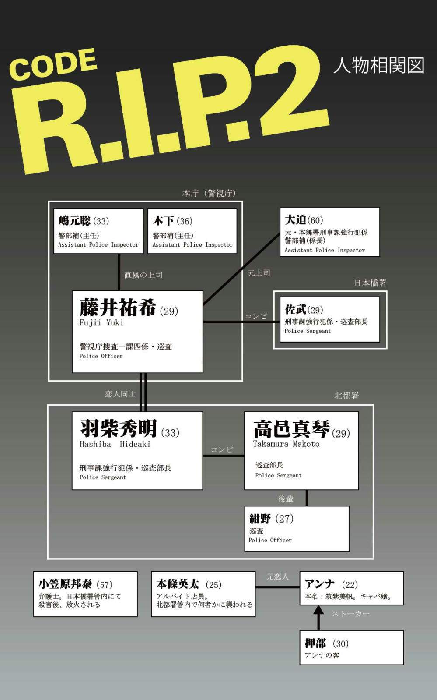

| CODE R.I.P. 2 プライドと偏見 | |
| 杉浦絵里衣 | |
| FLAPPER LABEL (2014) | |
この作品はフィクションであり、実在の人物・団体・事件・思想とは一切関係ありません。
一
高 邑 真 琴 は自分のデスクに着くなり、辺りを見渡した。
始業開始十五分前。デスクの三分の二は埋まっている。刑事部屋全体に視線を一周させたのち、すぐ右隣の机に落とした。
まだ出社していないらしい。もともと朝一番でも遅刻すれすれでもない、普段ならそろそろ来るはずだ。
席に着こうと椅子を引いたとき、スニーカーの紐がほどけかかっているのに気付いた。机の下にもぐりこむようにして結び直す。
刑事になって五年、仕事着はいつもジーンズにスニーカーというラフな格好だ。もう何年スカートをはいていないだろう。覚えている限り、巡査部長に昇任した際の式典で、正装を着用したのが最後のはず。
真琴が元の体勢に戻ったと同時に、廊下につながる扉が開いた。大柄な身体がドアをくぐるように入ってくる。警察官は職業柄体格のよい者が多いが、ドアをくぐらねばならないほど長身となるとそうはいない。
黒いコートのボタンを外しながらこちらへ向かってくる男に、真琴は声をかけた。
「おはよう、羽柴くん」
「ん、ああ。おはよう」
最後のボタンを外した羽 柴 秀 明 は、何気ない調子で答えた。
はじめて紹介されたとき、四歳上だと聞いたので敬語を使おうとしたのだが、高卒の真琴とは警察学校の入校期が同じで階級も一緒ということが分かったため、彼の方からタメ口でいいと言われたのだ。
コートの前を完全にはだけた羽柴は、いったんバッグを自席に置いてからロッカールームへと向かう。聞きたいことがあったが、戻ってくるまで待つとしよう。
真琴は席を立ち、給茶器の置いてあるコーナーへと足を向ける。紙コップをプラスチック製のホルダーにセットし、ホットコーヒーのボタンを押す。甘いものは嫌いではないが、コーヒーはブラックと決めていた。
湯気の立つカップを手に戻ったと同時に、コートを置いてきた羽柴もまた自席に着いた。
「どうだった、昨日の試験は？」
並んで立ったときの身長差は、約二十五センチ。むろん測ったわけではないが、きっとそれくらいはあるだろう。
かといって座ってもやはり見上げねばならない。はじめは首が痛くなったが、最近ではもう慣れっこだ。
「なんとも。とりあえず埋めるべきところは全部埋めといた」
苦虫を噛みつぶす、とまではいかない、さしずめ目の前に突き出された程度の微妙な顔つきで、彼は答えた。
「まあ、引っかかるとしたらまずは面接だな」
「なるほど」
真琴はとくにフォローも入れず、うなずいた。
なんとなく分かる。面接官におもねったり、自分をよく見せようとする柄ではなさそうだから。
湯気の立つコーヒーをすすったとき、始業開始のベルが鳴った。
平凡な一日は、あっという間に過ぎた。
「羽柴くん、きょうなんか用事ある？」
おととい管内で起きたちょっとした傷害事件の調書を上司に提出してきた真琴は、同じように書類を片づけていた羽柴に問うた。
「いや、とくには」
「せっかく試験終わったんだし、飲みに行こうよ」
声が上ずらないよう、ごく自然に誘った。つもりだった。別にはじめて誘うわけじゃなし、今さら緊張するのもヘンなのだが。
「そうだな......」
羽柴は考えるような素振りを見せる。しかしそれも束の間、
「いいよ。ただし、あんま金ねえから鶏 吉 でな」
と、北都署の面々がひいきにしているリーズナブルな焼鳥屋の名を出して応じた。
「じゃあ、あたし上着取ってくるから......」
そう促しかけたとき、たまたま通りがかった後輩の紺 野 巡査が首を突っ込んできた。すでに帰り支度は万端だ。
「あれ、鶏吉行くんスか」
「おう。紺野も行くか？」
「いいっスか。あそこ、新しいメニュー出たみたいで行きたかったんスよー」
真琴が口を開く間もなく、羽柴は勝手に紺野を誘ってしまった。
「そうと決まれば、残業入る前にとっとと行きましょうよ」
万事において調子の良い紺野は、憮然とする真琴と羽柴をせき立てた。
──まあ、ふたりっきりよりはいいけどさ
口数の少ない羽柴とでは、きっと間が持たないだろう。自分もそれほど饒 舌 なほうではない。
そんなことを考えつつ、真琴もまた帰り支度をはじめた。
今日は十二月四日、世間一般で言う給料日は終わったばかりだが、年末ということもあってか鶏吉はほぼ満席だった。三人は運良く奥まった個室席を陣取ることが出来た。
「これ受かったら、羽柴さん警部補か。いやー、雲の上っスよ」
「まだ合格って決まったわけじゃねえよ。それに雲の上ってのは、警視とか警視正とかその辺のレベルだろうが」
「でも二月には捜一に戻るんでしょ？ やっぱ俺から見たらすげーことですよ」
おしゃべりな紺野相手だと、普段ぶっきらぼうな羽柴もつられて口が軽くなるらしい。真琴との会話の十倍くらいは話している。
真琴は二杯目のビールを飲みつつ、ふたりの会話を聞いていた。
「俺も捜一行ってみたいなー。羽柴さん、引き上げてくださいよ」
「悪いが、俺には人事権はないんでな。自分がいつまでいられるかもあやしいとこだ」
冗談めかした紺野の台詞に、羽柴は苦笑する。
「紺野さ、あんた捜一行きたかったの？ 初耳だよ」
真琴が横やりを入れると、紺野はたちまちふくれっ面を作った。すでに三杯目の酎ハイを手にした彼の頬は、赤く染まっている。
「そうっスよ。高邑さんこそ、一回話蹴ってるじゃないスか。俺なんて完全スルーだったのに」
「だって面倒じゃん。休みもろくに取れないって聞くしさ」
それに出世争いに興味ないし、と言いかけたが、いずれ戻る人間が同席していることを思い出し先を飲み込んだ。
真琴に捜査一課への異動の話が持ち上がったのは、去年のことだ。
捜査一課と言っても羽柴のいた強行犯捜査係ではなく、誘拐・人質立てこもり・企業恐喝などに対応する特殊犯捜査係、通称ＳＩＴと呼ばれる部署である。
特殊犯捜査係は伝統的に女性捜査員が在籍する割合が多いという。ひとたび立てこもり事件が起こった際、犯人との交渉窓口に女性を指名されることが多々あるからだ。また、誘拐事件だと被害者の母親役を務めたりすることもある。
異動の話を聞いたとき、真琴はまず強行犯捜査係でないことに落胆した。刑事としての自分を求められているわけではない、多少肝の据わった女なら誰でもいいのだ、と解釈した。
もちろん、特殊班に在籍する女性刑事がみなそうだとは言わない。しかし、誘拐や立てこもりにたずさわった経験のない真琴に話が来るということは、やはり能力を買われた訳ではないと思うのだ。
それに、生まれ育った北都署管内にも愛着があった。
強行犯係とは名ばかりで、事件といえばケンカや器物損壊などが大半で、むしろ盗犯係の出番の方が多い。それも強盗みたいな物騒なのではなく、置き引きや車上荒らしのようなケチな事件ばかり。当然大事件とも無縁で、捜査本部なんて十年単位で開設されていない。きっと二十三区内でも指折りの平和な地域だろう。
それでも、真琴はこの町が好きだった。
平和なこの町を離れたくなかった。
むろん、いつかは定期人事異動でよその所轄へ異動になる。それは仕方がないし、その場合は精一杯仕事をしようと思っている。
しかし今、別に自分じゃなくてもよい部署へわざわざ行く気にはなれなかった。
「面倒って、そんなレベルの話じゃないですよ。だって捜一は特別なんだから。高邑さん、欲なさすぎっス。あーあ、俺なら二つ返事でオーケーしてがんばるのになー」
紺野は唇をとがらせる。
凶悪犯に日々立ち向かう捜査一課は警察の花形、若い刑事なら誰でも夢見る。
まだ二十七歳で血気盛んな紺野もまた、エリート集団「捜一」に憧れるのだろう。
その心意気をバカにするつもりはない。
ただ、真琴にはその気がないというだけだ。
なおも絡もうとする紺野を、羽柴は制しかけた。
「紺野、おまえちょっと落ち着け──、っと」
言い終わらないうちに、羽柴の携帯が鳴った。色気も素っ気もない、携帯内蔵のアラーム音。
真琴に目配せすると、彼は席を立った。ふすまを閉める寸前で通話ボタンを押し、「もしもし」と応じる。
残された真琴と紺野の間に、わずかながら沈黙が降りた。見計らったように、店員が焼き鳥の盛り合わせの皿を持ってきた。
先に沈黙を破ったのは紺野だった。
「仕事ですかね？」
羽柴に出動の電話が入ったのならば、ふたりとも出なければならない。
しかし、真琴は先ほどの目配せの意味を正確に汲んでいた。
「違うと思う。たぶん──」
いったん言葉を切り、ビールを流し込んだ。ややぬるめの感触が喉を滑り落ちる。
「彼女でしょ」
「羽柴さん、彼女いたんスか」
「あんまりくわしく聞いてないけど、いるっぽい」
実は真琴も直接訊ねたわけではない。
たまに電話やメールのやり取りをすることや、そのときの微妙な表情の変化などから、なんとなく察しをつけただけだ。
「へえー、どんな人だろ。写真見ました？」
「見てない」
つい、声音がつっけんどんになってしまう。
いけない、真琴は我に返った。
しかし紺野は気付かないらしく、ネギマの串をかじりながら続けた。
「羽柴さんっていくつでしたっけ？ 三十は超えてますよね」
「たしか三十三だったと思う」
「ふうん。結婚しないのかなあ」
もっともな疑問を紺野は口にする。
真琴は答えず、ジョッキを空にした。テーブルの隅に押しやると、トートバッグからタバコ入れを取り出し、中から一本抜いた。
ライターで火をつけたのと同時に、羽柴が席に戻ってきた。
「羽柴さん、今の電話って彼女からですか？」
「あ？」
直球すぎる紺野の質問に、羽柴はやや戸惑いの色を見せた。
なんて答えるのだろう。真琴の中に、好奇心が真夏の積乱雲のようにわき上がる。
「まあ、そんなとこだ」
「名前は？ 職業は？ どこで知り合ったんですか？ 芸能人で例えると誰に似てますか？」
「──そんなの、どうでもいいだろ」
羽柴は右手で口許をおさえ、あさっての方を向いた。
「写真とかないんですか？」
紺野はあきらめず、彼がまだ手にしていた携帯のディスプレイをのぞこうとする。こいつは基本的に遠慮というものを知らない。
「ねえよ、そんなの」
若干あわてたようすで、羽柴は携帯をポケットにしまった。照れ隠しか、代わりにタバコを取り出す。
「じゃあ歳だけ」
なにが「じゃあ」なんだか。真琴は煙を細く吐き出しながら呆れた。
紺野のしつこい追求に負けたのか、それとも年齢くらいならいいと判断したのか、羽柴は、
「......二十九」
と、ぼそりと答えた。
同い年か。真琴の胸にいかんともしがたい感情が起こった。
ここ数ヶ月間、霞のようだった存在が、急に生々しい形を取ったように思える。
女性誌のグラビアを飾りそうな、パステルカラーのワンピースにふわふわロングヘア。さもなくば、男受けしそうな可愛らしい制服姿のＯＬ。そんな映像が、何パターンも浮かんでは消えた。
身だしなみなど無縁な自分とは正反対な、いかにも女らしい、可憐な女性。
なぜそんな女性像が思い浮かんだのかは分からない。
分からないがきっと、普通の男が付き合いたがる女は、自分のような男女ではないはずだ。だから、おのずと正反対のタイプを思い浮かべたのだろう。
真琴はこれまで、仕事一本で生きてきた。
もともと身を飾ることに興味が薄かったのもあり、ろくすっぽ化粧もしなかった。あまりの色気のなさに、たまに帰省すると実家の母親が嫁ぎ先の心配をするくらいである。コンプレックスが全くないと言えば嘘になるが、女扱いされないことの方がずっと楽だった。
しかし、これでよいのだ。
男と同等に刑事稼業をするのに、"女"という性は必要ない。むしろ、邪魔なくらいである。
姿形で媚を売るような真似は、絶対にしたくない。これまでもそうしてきたし、今後もそうしていくつもりだった。
だから、羽柴の彼女がどんなタイプであろうと、自分には関係のない話だ。
自分は、羽柴の"相棒"だから。
そう割り切っていたつもりだったが、やはり気にはなる。目の前を通り過ぎる女性像を追い払いつつ、ふたりの会話に聞き耳を立てた。
「へえー。どこで知り合ったんですか？」
紺野はさらに追求の手を伸ばそうとしたが、羽柴はその手を巧みにすり抜けた。
「ヒミツ」
「いいじゃないですか、ちょっとくらい。もしかして、言えないような相手なんスか？」
「それじゃ聞くが、おまえの考える『言えないような相手』ってどんなんだよ」
「えー......、なんだろ。行きつけのキャバクラのねえちゃんとか？」
「そりゃ彼女って言わねえだろ。つーか、おまえは俺をなんだと思ってんだ」
いつの間にか、すっかりペースが逆転している。さすがに一筋縄ではいかない。
あわよくば、と考えていた真琴も、あきらめることにした。半分以上吸ったタバコをアルミの灰皿の上でもみ消し、
「そろそろ出よっか。明日も仕事だしさ」
先ほど想像した顔のない女性像が、またしてもふんわりと真琴の脳裏をよぎった。
二
藤 井 祐 希 は、通話の終わった携帯の液晶ディスプレイをぼんやりと眺めていた。
小さくため息をつくと、祐希は携帯を折りたたんだ。ジャケットの内ポケットに突っ込み、人気のない廊下にかかとを踏み出した。
明かりが漏れるドアを押し開き、同僚と額を付き合わせていた上司に向かい声をかける。
「嶋元主任、お先に上がらせてもらってよろしいですか？」
行儀悪く長机に腰を下ろしていた嶋元聡警部補は、こちらに向けて首をねじった。
「ああ、お疲れさん。気ィつけてな」
「はい。お先に失礼します」
机の隅に置いていた荷物とコートを手にし、祐希は残った同僚たちにも軽く頭を下げた。
薄暗い廊下に、自分のたてる足音が響く。階段を降りかけたとき、下から登ってきた男と目があった。
「藤井さん、上がるの？」
「ええ」
「もう遅いから駅まで送ろうか。女の子の一人歩きは危ないよ」
男は今回の捜査本部でコンビを組むことになった、日本橋署の若手刑事・佐 武 巡査部長だった。見上げてくる視線には、心配よりも別種の色が浮かんでいるように思えた。
「いえ、平気です。大通りなら安全ですし」
「でも......」
「失礼します」
まだなにか言いたげな男の横をすり抜け、祐希は足早に階段を降りた。
ロビーを抜け、重いガラス戸を開けると、十二月の寒風が容赦なくぶつかってきた。
師走の永代通りは、さすがに夜の十時近くなってもヘッドライトであふれていた。
祐希はトレンチコートのポケットに両手を入れ、地下鉄の駅へと向かった。佐武のことを考える。
──"女の子"って言うなっての、まったく......
彼は、祐希がもっとも苦手とする部類に属した。
捜査本部が設置され、本庁と所轄の捜査員でコンビを組むのは慣例であるが、多くの場合ベテランと若手という組み合わせになる。所轄のベテランと本庁の若手、もしくはその逆。
しかし今回の事件は年末の忙しい時期でどこも人手不足ということもあり、人員の確保が不十分だった。そのため、本来ならベテランと組むはずが、若手同士のコンビとなってしまったのである。
なにも若いから苦手というわけではない。自分に対する佐武の態度が、勘に障るのだ。
組んですぐ、たまたま前を通りかかった日本橋署の刑事部屋で、佐武が同僚と『捜査本部が設置されている間に、本庁の女刑事を落とせるか』と賭けているのを耳にした。
「四六時中一緒だし、連絡用にとちゃっかり携帯番号も聞き出した。ヤれるところまでは無理でも、お近づきにはなれるかも」などと、笑いあっていた。
それ以降、祐希は佐武に対して防衛線を張ることに決めた。なにかにつけ接触を試みる相棒に、肘鉄を食らわせ続けた。
仕事だからコンビは続ける。しかし、いい結果は期待できそうにもなかった。
事件のことだけに集中したいのに、こんなよけいなことに煩わされるなんてバカらしい。
ぽっかりと口を開けた地下鉄駅への入り口を足早に降り、乗車カードを自動改札機にやや乱暴に叩きつけた。表示された残高を見て、もうそろそろチャージしないと、と思いつつ、ホームへと降りるエスカレーターに乗った。
真っ暗なひとりきりの部屋に帰りたくなかった。かといって、呼び出すわけにもいかない。さっきの電話で、彼が飲んでいる最中であることは承知していた。
しばらく考えたのち、祐希はある場所へ寄り道することにした。
この時間なら、まだ宵の口だろう。
重厚な木のドアを開ける。来る途中までの猥雑さが嘘のような、穏やかな空間が凍えた身体を包み込んだ。
ほっと一息つくと、祐希はコートを壁に掛け、空いていたカウンター席に腰を下ろした。
「いらっしゃいませ、藤井さん」
耳に心地よいアルト。甘くて強い酒のような美貌の女バーテンダーが、にっこりと迎えてくれた。
「こんばんは」
「急に冷え込みましたね、お身体、大丈夫ですか？」
バーテンダーは温かいおしぼりを手渡す。受け取った指先に、熱い血が急速に流れるのを感じた。
「そうですね......。今はまだ気力でなんとか」
そう答えると、バーテンダーはふふっと笑い、
「では、当店オリジナルのモスコミュールはいかがです？ とてもクセのある味ですけど、ショウガがたっぷり使われてるので風邪の予防にはもってこいなんですよ」
と、カウンターの内側に置かれた大きな広口瓶に視線を向けた。
少し色づいた液体が満たされ、底にいくつものショウガが丸ごと沈んでいる。ちょうど、梅酒の梅がショウガになったような感じだ。
祐希の飲んだことがあるモスコミュールは、甘いジュースのようなものだ。好奇心に惹かれ、注文してみる。
やがて、鈍く光る銅のマグカップが目の前に置かれる。
「グラスじゃないんですね」
「ええ、これが本式なんです」
取っ手部分までキンキンに冷えたカップを手に取り、鼻を近づけた。強烈なショウガの香りにたじろぎつつ、一口含む。
舌を灼くような、甘さのかけらもない刺激。
思わずむせてしまった祐希に、バーテンダーは「大丈夫ですか？」と声をかけた。
「すごい......。今までのと全然違う。たしかに風邪に効きそうですね」
「そうでしょう？ 氷で薄めながらゆっくりお召し上がりください」
おだやかな会話。来て良かった。祐希はそう思った。
ミックスナッツが盛られた皿に手を伸ばしつつ、さっき切った電話のことを考える。
彼──羽柴は、北都署の同僚と飲んでいた。おそらく、試験が終わった祝いかなにかだろう。
昨日、試験が終わってすぐにメールはもらっていた。お疲れさま、と返したら、「近いうちに行く」と返事が来た。
さっきもそうだ。「近々そっちへ行くから」と。
祐希が捜査本部入りしていることは、彼も知っている。集中捜査のため捜査員が所轄に泊まり込む最初の二十日間、通称一期の間は遠慮しているのか完全に音信不通になるのだが、それが解けて祐希が自宅に帰るようになると様子見の連絡を入れ、寄ってもいいか打診してくる。
分かっている。体調を崩していないか、心配してくれているのは。
でもどこかで、ただ会いたいだけなのでは──もっと有り体に言うと、セックスしたいだけなのでは──と、勘ぐってしまう。
羽柴は変わった。
あれほど貪欲に事件の真相を追い求め、現場をはいずるように捜査をし、ストイックに自分の意志を貫いてきた彼が、いつしか机にかじりついて昇任試験の勉強に明け暮れ、試験の結果に気を揉み、そして祐希の"女"を求めるようになった。
夏の盛り、羽柴は「昇任試験に受かったら、正式にプロポーズするつもりだ」と打ち明けた。照れ屋な彼が真っ赤な顔で言ってくれ、最初はうれしかった。しかし結局は、祐希の"女"の部分が欲しいだけだと気付いてからは、素直に喜べなくなった。
決して彼が嫌いになったわけではないが、どこかにわだかまりが残るのだ。
プロポーズを受けるべきなのか、否か。
結婚したいのか、したくないのか。
それは祐希の心に、常に重石のようにのしかかっていた。
「......さん。おねえさん」
ふいに呼ばれ、祐希ははっと顔を上げた。自分のことかと声がした方を向く。
そこには、明らかに酔っぱらったふたり組のサラリーマンらしき姿があった。年の頃なら三十代半ばだろうか、薄暗い店内でもそれと分かるほど、首から上が真っ赤だ。
「ひとり？ よかったら俺らと一緒に飲もうぜ」
「......けっこうです」
全身で拒絶を示し、祐希は彼らから視線を逸らせた。
せっかくひとりで飲んでいるのに、邪魔をされたくない。
「いいじゃん、ちょっとくらい」
「なんだったら場所替えてもいいしさ」
男たちは勝手に隣に座り、肩を抱こうと手を伸ばしてくる。
「ちょっと、やめてって......」
ぶしつけな態度に、くすぶっていた苛立ちが一気に沸騰する。振り払おうとしたとき、
「お客さま、ここではそういったことはお断りしていますのよ」
と、落ち着いた声がカウンターの中から聞こえた。
見ると、バーテンダーが口許だけで笑いながらグラスを拭いていた。意志の強そうな黒目がちの瞳が、男たちを見据える。
「ほかの方のご迷惑にもなりますし、ご遠慮いただけますかしら」
言外に出て行け、というニュアンスを含ませ、バーテンダーは微笑んだ。店内にいた客たちの視線がこちらに注がれているのを、肌で感じる。
ピシャリと叩かれた態の男たちは、なにやらぶつぶつ呟きながら勘定を済ませ店を出て行った。
ドアのベルが鳴り止んでから、祐希はバーテンダーに礼を言った。
「ありがとうございました」
「とんでもない。こちらこそ、至らなくて申し訳ありません」
「そんな......」
「たまにはひとりきりで考え事をしたいときだって、ありますものね」
バーテンダーは、拭いていたグラスを背後の棚にしまった。
その言葉に、祐希はふと今の気持ちを聞いてもらいたい欲求にかられた。
彼女が何者かは分かっているつもりだ。実際に利用 したことはまだないのだが、本来なら相談相手としては不適当である。
だが、同じくらいの年齢の女として、なんとなく話を聞いてもらいたかった。
「......最近、迷ってるんです」
ぽつりと漏らした祐希の言葉に、女バーテンダーはわずかに小首をかしげる。
「その......正式ではないんですけど、結婚して欲しいと言われてて」
「あら」
彼女はしかし、普通ならその後に続くであろう「おめでとうございます」とは言わなかった。祐希が「迷っている」と前置きしたからだろう。
祐希は、細かい水滴が浮かびはじめた銅のマグカップを揺らした。
「うれしくないわけじゃないんです。わたしのことを真剣に考えてくれてるって実感したし。でも......仕事のことを考えると、素直に受けていいのか分からなくなるんです」
「藤井さんは、お仕事を続けたいんですね」
「ええ。でも両立できるか不安で......」
するとバーテンダーは冷蔵庫からペリエの瓶を取り出し、栓をはじいた。中身をグラスに移し替え、失礼します、と一言断りを入れあおる。
「意外とね、なんでもないことですよ」
意味が分からず、祐希は問い返した。
「なんでもない、って......？」
「結婚を前にした女性は、誰しも不安になるものなんです。結婚によって自分が変わってしまうんじゃないか。今までの生活や仕事や、いろいろなことが。でもね、意外と変わらないんです。結婚する前は環境が劇的に変化すると思っていても、実際はそれほどでもない。名字が変わり、今まで他人だった人と一緒に住むようになり、家事をこなすようになっても、慣れれば『なあんだ』という程度の変化でしかない。もちろん、配偶者が理解あるかどうかや、子どもが出来れば、だいぶ変わりますけどね」
祐希の視線に気付いたバーテンダーは、ふふっと笑った。
「わたしもね、結婚する前はそう思ってました。この仕事ができなくなるんじゃないかって」
「ご結婚されてたんですね」
「ええ。子どももふたりいますよ」
驚いた。これほど生活臭のない女性も珍しい。
「幸い主人は理解のある人だから、こんな夜の仕事でも許してくれてるんですけどね。藤井さんのお相手は、お仕事に理解のない方なんですか？」
カウンターに立つ彼女は、祐希の職業 を知っている。
そしておそらく、今話している相手 というのも、うすうす気付いているだろう。こちらから口にしたことはないのだが。
「......いえ。続けることは許してくれてます」
あの夏の日、続けてもいいかたずねたら、彼はいいよと答えた。
「なら大丈夫ですよ。結婚しても藤井さんは藤井さんのままです」
バーテンダーの何気ない言葉に、祐希の心臓は跳ね上がった。
自分でも手が届かなくてもどかしかった核心を、突かれた気がした。
「藤井さんの職場は、男社会だと聞きます。今でも男性に負けじと気を張っているのに、結婚すればもっと負担が増える。回りの男性が『主婦は家庭でおとなしくしてろ、出しゃばってくるな』と無言の圧力をかけてくる。それが気がかりなのでは？」
「......その通りです」
まるで現場を見てきたかのような的確な指摘に驚いたのも束の間、はたと思い当たった。
そうだ、彼女も同じなのだ。
バーテンダーという「男社会」。彼女もまた、同じように悩んだことがあるのだ。
祐希が答えを求めるようにじっと見つめると、女バーテンダーはちいさくうなずいた。
「居心地は決してよくはないでしょう。環境改善も期待はできない。でも、結婚しても自分は変わらない、自分は自分だという強い信念を手放さなければ、きっと大丈夫です」
そう言うと、バーテンダーは今日一番の華やかな笑顔をつくった。
──自分は自分、か
祐希は彼女の言葉を、刺激的なモスコミュールとともに飲み干した。
自宅のあるマンションに戻った祐希は、郵便受けから中身を取り出し、エレベーターの中でざっと目を通した。以前買い物をしたことのある店からのセールはがきや、宅配ピザのメニュー。近所にオープンする美容室のチラシから新築マンションの広告まで、大小さまざまだ。
部屋に入ってそれらを放り出したところで、留守番電話のランプが点灯していることに気付いた。テープを再生してみると、実家の母からである。
『クリスマスはどうせ仕事だろうから、せめてお正月くらいは帰っておいで。お父さんも待ってるから。帰りが遅くなるときは十分気を付けて。じゃあね、寒いから風邪引かないようにね』
今年に入ってから独り立ちしたこともあり、今まで以上に実家に顔を見せていない。妹が同居しているからまだましだが、やはり寂しいのだろう。刑事稼業を快く思っていない父などは、推して知るべし。
思えば、両親にはさまざまな心労をかけてきた。
義務教育を終了するなり、突然フランスへ留学すると日本を飛び出したくせに学業そっちのけでモデルになり、打ちのめされて戻ってきたと思ったら今度は警察官になりたいと言い出したあげく、ろくに家に寄りつきもしない。なんとも親不孝な娘である。
やっと身を固める気になったと報告すれば喜んでくれるだろうが、相手は同業者でしかも仕事は続けると言えば、さてどんな顔をするだろうか。
そこまで考えて、祐希は苦笑した。
──あたし、もう結婚するつもりになっちゃってる
バーテンダーの話でずいぶん気が楽になったのはたしかだが、まだまだ課題は残っている。
とりあえず、この話はまだ保留だ。
祐希はメッセージを消去したあと、自宅の電話番号をプッシュした。
せめて、母に声だけは聞かせてやりたかった。
三
携帯に一報が入ったのは十二月九日の午前六時十二分、まだ真琴がパジャマ姿で歯を磨いているときだった。
急いで身支度を調え、女子寮を飛び出す。同じ敷地内のため、北都署までは徒歩一分の距離だ。刑事課へ駆け込むと、すでにスーツ姿の羽柴が待っていた。
「おはよう、傷害だって？」
「ああ、今鑑識が現場検証に当たってる。犯人は逃走中」
そう端的に言うと、管内地図を広げた。
「マル害は男性。第一通報は今朝五時七分、どうやら深夜の帰宅途中に襲われたらしい」
「外傷は？」
「頭部を殴打。北都救急病院に搬送された。命に別状はないが意識不明、現在ＣＴスキャンでの検査結果待ちらしい。現場が人気のない生活道路だったから、発見が朝になっちまったんだそうだ」
羽柴の指し示した場所は、道の片側に工場、反対側は空き地という細道だった。
真琴が地図に顔を寄せたとほぼ同時に、紺野がネクタイ片手にあたふたと走り込んできた。それを見た羽柴は手にしていた傷の付いた手帳を閉じ、
「行くか」
と、短く言った。
現場となった路上では、すでに紺色の制服を着た鑑識課員が、地べたをはいずるようにして作業を行っていた。
通報を受けて真っ先に臨場したのは、近隣の交番勤務の若い巡査だ。保護していた第一発見者の新聞配達員の青年によると、この道沿いには新聞を取っている家庭はないため、普段通ることはないらしい。しかし少し先の四つ辻はルートに含まれており、今日たまたま視線を向けたところ、男性が倒れているのを発見したという。
男性はブルゾンにジーンズ、マフラーにスニーカーというごくカジュアルな服装で、仰向けに倒れていたらしい。青年は最初酔っぱらいが寝ているのかと思ったが、近くで見ると頭から血が出ていたのであわてて通報したということだ。
現場は管内地図とは少々違い、片側の空き地は現在マンション建設予定地になっている。やや大きめの工場とに挟まれた、車二台がすれ違うのがやっとという細道だ。明かりは街灯のみ、当然、夜間はほとんど人通りが絶えることとなる。
「マル害の身元、判明しました」
携帯電話で収容先の病院に問い合わせていた紺野が報告した。
「本 條 英 太 、二十五歳。住所は喜多野町二の十八の一、メゾン喜多野四〇二号。所持していた運転免許証で確認取れました」
「近いね」
真琴がつぶやくと、羽柴は手にした地図に視線を落とした。ここから数百メートルしか離れていない。
すぐ近くに駅前から伸びるバス道もあるが、それだと遠回りになる。どうやら、近道をしたらしい。若い女性ならば用心して避ける物騒な道でも、成人男性ならあまり危機感を持たずに通ることはよくある。
「容態は」
「後頭部を鈍器様のもので殴打され、頭蓋骨が陥没しています。まだ意識は戻らないそうです。あと、担ぎ込まれたときに微量のアルコール臭がしたそうです」
「飲み会の帰りかなんかかな」
「宴会シーズンだしな。朝帰りの途中ってとこだろう」
そう言うと羽柴は、白手袋を着けた両手を胸の前で組んだ。吐く息は真っ白だ。
そのとき、着信音が鳴った。三人とも反射的に自分の携帯を手に取ると、鳴っていたのは羽柴のものだった。しばらく応対したのち、
「係長から、遺留品の捜索は鑑識にまかせて、俺たちはいったん署に戻れって指示だ」
乗り付けた覆面パトカーのドアを開けながら、真琴は久々に身体の芯から熱が沸き起こるのを感じていた。
北都署へ戻ると、真琴たちの上司にあたる温 井 係長と加納課長とが会議室で待ちかまえており、さっそく捜査会議がはじめられた。
まず最初に、犯行目的が検証された。
もっとも考えられるのは金目当ての悪質な窃盗、すなわち強盗という見解である。しかしそこに羽柴は異議を唱えた。
「マル害は、財布を尻ポケットに入れた状態で発見されたそうです」
「通行人が来たから、なにもとらずに逃げたとも考えられるぞ」
課長の反論に、羽柴はなおも否定の立場を取った。
「ならば、マル害はうつぶせの状態で倒れているはずです。そもそも後頭部を殴られたということは、前のめりに倒れるのが普通です。うつぶせならば簡単に財布を抜き取ることができるのに、わざわざ仰向けにさせた。ここになにか意図的なものを感じます」
「ううむ......」
「怨恨などの可能性も、考慮したほうがよいと思われます」
羽柴の言葉に、課長は口をへの字に曲げた。
真琴も、彼の言うとおりだと思った。
だいたい、ひったくりなど通りすがりの窃盗は、非力な女性が主なターゲットとなることが多い。これがもし単なる──と言っては語弊があるが──通り魔だとしても、やはり女子どもや高齢者が狙われやすい。今は忘年会シーズンで、夜道をひとり歩きする女性などいくらでもいるのだ。いくら酔っているとはいえ、わざわざ手強そうな若い成人男性を狙うのは、リスクが高すぎる。
結局、人通りが少ない現場の状況から、今回は地取りに紺野と盗犯係からの応援、知能犯係と暴力犯係からの応援との二組、被害者の周辺人物の捜査にあたる識 鑑 が真琴と羽柴、それと温井係長と残るベテラン強行犯係員との二組という編成だ。被害者の事情聴取は、とりあえず延期。本人の意識が戻り次第となった。
真琴たちは被害者の交友関係を主にあたり、もう一組は職場関係をあたることになった。
会議室のエアコンでようやく暖まった腕に再びコートを通しながら、真琴はたずねた。
「長引くと思う？」
「さあ。できれば年内にはカタがついて欲しいとこだけどな」
年末を迎える人々は、とにかく忙しい。早め早めに手を打たなければ、事件の記憶は過ぎゆく日常にどんどん押し出されてしまうだろう。
平穏な年越しを迎えられるかどうか、あやしいものだ。
真琴はコートの前を止め、おおきく息を吐いた。
被害者の本條英太は宇都宮出身で、高校卒業と同時に東京へ出てきた。フリーターとしていろいろな職場を転々とし、現在は新宿のゲームセンターで働いていた。
事件当日、本條は午前零時の閉店後にバイト仲間と飲みに行き、午前三時頃に仲間の運転する車で帰宅途中のコンビニ前まで送ってもらった。自宅ではないのは、翌日の朝食を買うためだとの同僚の証言を得ている。
職場関係を当たっている温井組の聴取によると、本條は基本的に人当たりも良く勤務態度も真面目だったそうだ。友人たちからの評判もおおむね良好で、金銭トラブルもなく、怨恨の線は薄そうだった。
しかし数日後、真琴たちが事情を聞きに行った友人は、以前異性関係で揉めたことがあるという話を持ち出してきた。
「異性関係、と言いますと？」
通されたワンルームの小さなコタツを囲み、真琴はどことなく幼さの残る青年にたずねた。
「本條が前に付き合ってた彼女なんですけど、そのコがキャバ嬢だったらしいんです」
「彼女に仕事を辞めろと迫ったとか？」
「いえ、その辺は納得済みだったらしいんで、特に問題はなかったみたいなんですけど、ホテルから出てきたところを偶然彼女の客と鉢合わせしちゃったんですって。その客は彼女に相当ハマってたみたいで、いきなりキレて殴りかかってきたそうなんです」
「はあ......」
いくらのぼせ上がっているとはいえ、そこまで逆上するものだろうか。
「うーん......。どうも、彼女は客に対して『彼氏はいない』つって気ィ持たせて、いろいろ貢がせてたらしいんですよ。それで客がブチ切れたみたいで。俺も聞いた話なんで詳しいとこまでは分かんないんですけど」
キャバクラ嬢の『彼氏がいない』をまるっきり信じてしまうとは、どうやらかなり純情な御仁らしい。
「そのせいかどうかは知りませんけど、しばらくして本條たちは別れたみたいです」
「どのくらい前の話ですか」
「わりと最近じゃないかと。こないだ飲んだときに聞いたんで......。ちょっと待ってください」
そう言うと青年は携帯をチェックしはじめた。おおかた、やりとりしたメールの日付でも確認しているのだろう。
「会ったのが十一月九日だったんで、それより前だと思います」
「では、最低でも一ヶ月は経っていますね。本條さんの彼女には、お会いしたことはありますか」
「一度だけ。見た目まんまギャルだったけど、しゃべると面白い子でした。冗談っぽく店の名刺をくれて......。まだあったかな」
話を途中で切り、なにやら財布の札入れをごそごそ探る。
「あったあった。これです」
差し出された長方形の紙に、真琴は目を疑った。そこには『名刺』と言われて連想するビジネスライクなものとはほど遠い、うるさいくらいきらびやかな代物だった。背景はピンクのバラと色とりどりの宝石、名前は斜体のローマ字で『ＡＮＮＡ』とあり、ご丁寧にも『アンナ』と読み仮名まで振られている。
あっけに取られている真琴の手から名刺を引き抜いた羽柴は、裏面を見て、
「店は池袋ですね。行かれたことは？」
「いやー、ないですよ。一応友達の彼女だったしね」
苦笑しつつ青年は答え、すぐに真顔に戻る。
「あの、もしかしてこの件が今回の事件と関係あるんですか？」
「いや、まだ捜査の途中なんでなんとも。ただ関連性を調べないといけませんので、差し支えなければこの名刺をお借りしたいんですが、よろしいですか」
「あ、はい。どうぞ持ってってください」
了承を得た羽柴は、名刺をハンカチで包んでかばんにしまい、おもむろに腰を上げた。
真琴はアンナ嬢の人相を聞かなくていいのかと疑問に思ったが、先に玄関へと向かわれてしまったので、仕方なく後を追う。
辞する直前に青年は、
「あの、本條は見た目が派手なんで誤解されやすいんですが、悪いヤツじゃないんです。だから......」
と、切実にうったえた。
「大丈夫です。我々にお任せください。かならず事件を解決しますから」
真琴がそう請け負うと、青年はほっと肩の力を抜いた。本気で本條のことを案じ、また信頼している。良い友人を持つ人間は、たしかに悪人であることは少ない。
では、果たしてこの事件の裏に隠された真相がなんなのだろうか。
署へ戻ると、紺野組がまだ帰っていなかった。とりあえず自席に着いてパソコンを立ち上げ、外出している間に入っていたメールをチェックした。新着メールがないのを確認してから今度はブラウザを起動し、習慣にしているニュースサイトへとアクセスする。
政局の模様、三日前に起きた元交際相手による女性とその両親の殺人事件の続報、丸の内近辺で相次ぐ不審火、スポーツニュースなどをざっとチェックした後、週替わりコラムのページを開く。
今週のテーマは『モンスターペアレント』である。
正直なところ今さら感はなきにしもあらずだが、最近大きな問題が起きたのでまたもや浮上してきたらしい。
『男の子がふざけて窓ガラスを割り、先生に叱られた。そこまでならよくある話だが、保護者が『子どもがふざけたくらいで割れるガラスが悪いのに、叱るとは何事だ。怪我するといけないから、学校中のガラスを取り替えろ』とて担任にクレームを付けてきた。要求を呑めないと突っぱねたところ、今度は教育委員会に持ち込むという騒ぎにまで発展した──』
──なに考えてんだ。まずは自分の子どもに「ガラスを割るな」って教える方が先だろうが
さんざん事例を見てきたが、やはり自分にはとうてい理解できない思考回路だ。
記事では『その親は"叱られる"イコール"不当な扱い"だと思い込んで責任をすり替え、"消費者としての権利"を振りかざしている』と述べていた。
最近頻発している通り魔事件の犯人も、自分が不遇なのを世間や社会のせいにしている者が多い。真琴からすれば責任転嫁だとしか思えない。
もちろん、正当な理由があれば人を殺してもいいというわけでは断じてない。
しかし、それにしてはあまりにも身勝手ではないだろうか。
つらつらと考えていると、昼休みを告げるチャイムが鳴った。
昼食後、羽柴が持っていた名刺を見せてもらった。
表面をもう一度確認し、裏返す。そこには誕生日や好きなものなどが書かれたプロフィールがあった。ありがたいことに、顔写真まで載っている。扇のようなまつげと金髪の、派手な娘だ。羽柴が青年に人相をたずねなかった理由が分かった。
「へー、キャバ嬢の名刺ってこんなんなんだね。好きなブランドまで書いちゃって、わっかりやすい」
全身で"女"を主張するこの手の女性を、真琴は一番苦手とする。つい皮肉混じりの口調になってしまった。
しかし羽柴は気に留めたようすもなく言った。
「池袋っつーと、あのへんは豊 島 署が管轄か」
「そうだね。誰か心当たりあんの？」
羽柴は長く、都内のあちこちを飛び回る捜一に在籍していた。繁華街を抱える大規模署ならば、知り合いのひとりやふたりはいて当然だろう。
「顔見知りは何人かはいるけど、どっちかというと会いたくない方の知り合いだな。かと言ってアイツに頼るのもなあ......」
ぽつりとこぼした台詞をすかさず拾う。
「アイツって誰」
「捜一のもと同僚。卒配で豊島署にいたんだ。気はいいヤツなんだけど、あとがうるさい」
現在は「もと同僚」だが、あと三ヶ月もすれば「同僚」に戻る。なるべく貸し借りは避けたいのだろう。
そのへんの微妙な話題には触れず、真琴はたずねた。
「アンナちゃんのお客さん、絡んでると思う？」
「どうだろう。いくらキレたからっつっても、わざわざ夜道で襲いに来るもんかな。本條がこのキャバ嬢の本命だってんなら、なおさら客に身元をバラしたりはしねえだろうしな」
そこへ、寒い寒いと騒ぎつつ、紺野組が帰ってきた。準備が整うのを見計らった温井が、
「じゃ、はじめよう」
と、席を立った。
真琴たちが報告した一連の情報は、連日空振り続きだった地取り組や、いくら叩いてもほこりも出なかった職場鑑組の目の色を変えるのに十分であった。
「キャバ嬢本人が口を割らなくても、別ルートで本條の身元を探った可能性もあるだろう。慎重に当たってくれ」
温井の重々しい言葉に、真琴と羽柴はうなずいた。
会議の後、さっそくふたりは動き出した。名刺にはアンナ嬢に直通の携帯番号も記載されていたが、店内での客の態度なども聞かねばならないため、あえて直接店に連絡を取った。
すると、電話に出たマネージャーと名乗る男から、彼女が騒動のあと店を辞めていたことを知らされた。
いきなり出端をくじかれた感があるものの、とりあえず他の従業員から件の客の話を聞くため、ふたりは事務所を出た。
向かうは、東京有数の繁華街・池袋だ。
四
祐希は佐武とともに、指定された聞き込みを終えたのち、事件現場に向かった。もう、何度訪れたか記憶にすらない。
ビジネス街のど真ん中、証券会社街から少し外れた場所に、現場となった雑居ビルが建っている。エレベーターがあるが、あえて階段を使い三階へ向かう。一段登るごとに、焦げ臭いにおいが鼻をついた。すでに警察が張った立ち入り禁止のテープも解除され、今はビルの管理会社が置いたカラーコーンとコーンバーが置かれている。
目指すフロアに立った祐希は、きゅっと唇を噛んだ。煤と灰にまみれた、見るも無惨な焼け跡。
日本橋署における『茅場町四丁目弁護士殺人放火事件』特別捜査本部は、設置からすでに一ヶ月近くが経過している。犯人逮捕に結びつく決定的な証拠はいまだつかめていないが、捜査方針はある程度固まってはきている。今日もその裏付けで、祐希たちは付近を聞き回っていたのだ。
しかし、祐希は方針が決まった当初から、違和感を抱いていた。
本当にこれでいいのか。なにか、重要な見落としがないのか。
その疑惑に駆られるたび、こうして現場に足を運ぶのである。
『現場百遍』という言葉があるが、まさしく今の祐希の姿勢がそうだった。
相棒である佐武は「もうここには手がかりは残ってないよ。行くだけ無駄」と、とうに匙 を投げていた。今だって、隣のコーヒーショップで一息ついているので、祐希はひとりでここまで来たのだ。
やる気がないにも程があるが、実際は彼の言うとおりかもしれない。現場は文字通り丸焼けで、警視庁が誇る鑑識班が目を皿のようにして探っても、ろくな証拠は出てこなかったのだから。
しかし──。
事件は今から約一ヶ月前の十一月八日、日曜日の午後九時過ぎに起きた。
現場となった『小笠原法律事務所』は、五階建ての雑居ビルの三階ワンフロアを占めており、休日も営業している弁護士事務所だった。
近隣から火事の通報があり、消防車が駆けつけて消火に当たったが三階が全焼、四・五階が類焼、焼け跡からこの事務所の責任者である小 笠 原 邦 泰 の焼死体が発見された。休日だったため、ほかのフロアが無人だったことは不幸中の幸いである。
当初は捜一でも火災犯捜査係が出動していた。
しかし、ただの火事ではなかった。鑑識からガソリンがまかれていた可能性と、検視報告で遺体に他殺の疑いがあったことが指摘されたのだ。
殺人ならびに、証拠隠滅のための放火であると断定、瞬く間に特捜本部が設置された。祐希たち強行犯四係が新たに投入され、連日大規模な捜査が進められた。
祐希は注意深く焼け跡へと足を踏み入れた。パンプスが煤で汚れるのがちらりと気になったが、エナメル素材だからあとで拭き取れば綺麗に落ちる。
床はもちろん、壁や天井、柱までが真っ黒だ。ガラスはことごとく割れ、熱でひしゃげたサッシだけが残されている。燃えかすがあちこちに散らばり、とてもじゃないが奥までは入っていけない。
しかし、現場の状況だけはいつでも確認できるよう、手許に残しておきたかった。ネットブック代わりにと最近購入した、スマートフォンをバッグの底から取り出した。
サブ携帯としての位置づけなので、地図検索や写真撮影、スケジュール管理などの利用がメインだ。電話本来の機能はめったに使わず、そのため宛先もひとり分しか登録していない。
フォトアプリケーションを起動させ、手当たり次第に撮影していく。最後に、カメラを窓際の左側へ向けた。
鑑識の報告では、もっとも激しく燃えていたのがこの部分と遺体周辺であり、油分も同様に検出された。
のちに事務員に室内の間取りを再現してもらったところ、左窓際にはこれまで小笠原が手がけた公判や依頼人などの記録書類、金庫などが収められたキャビネットが置かれていたという。しかし耐火金庫の中には金目のものは入っておらず、また解錠しようとした形跡もないことから、金銭目的という可能性は早い段階で却下され、自動的に捜査方針は怨恨の線で攻める状況となった。弁護士という職業柄、恨みは比較的買いやすいだろう。
また、遺体は無惨な消し炭状態となっていたが、司法解剖の結果、気道内に煤の付着はみとめられなかった。
通常、焼死体は大量の煙を吸い込み、意識不明になってから肉体が焼けるため、鼻や気管などに煤が付着されるものだが、小笠原の気管には煤が入っていなかった。これは、火がついたときにはすでに呼吸が止まっていることを意味する。
その後の綿密な調査により、後頭部に打撲創がひとつ、頚部に索条痕が確認できた。おそらく、背後から頭を殴ったが死ななかったため、とどめをさすために首を絞めたのだろう。
他殺であり、証拠隠滅のための放火であることは、これでほぼ立証された。
しかし、肝心の犯人につながる有力な手がかりは火災のためほとんど失われてしまい、捜査は頓挫した。つい先日も「火と水は、すべての証拠を消しちまう」と、所轄のベテラン刑事がぼやいているのを耳にした。
残された手がかりらしい手がかりといえば、ふたつ。
ひとつが、防犯カメラの映像だった。
事件当日、ビルの入り口付近にあるメールボックス上に設置されたカメラが、不審な男性の姿を映していたのだ。
年齢は二十歳から三十歳くらい、中肉中背で野球帽にマスク、黒っぽい上下に大きなスポーツバッグという格好である。建物へと入る姿が午後八時三分、出て行く姿が八時四十九分とそれぞれ記録されており、その間隔はわずか一時間にも満たなかった。
残念ながら法律事務所内にはカメラは設置されておらず、犯人はエレベーターも使用していないので内部のカメラにも写っていない。
現在はこの映像を解析し、より鮮明な犯人像を導き出す作業の最中である。
そしてもうひとつが、事務所にあった小笠原のパソコンである。
熱により筐 体 が溶けてしまうほど激しい損傷だったが、ハードディスクの復旧が見込めそうだという。紙媒体の資料はすべて焼けてしまったが、もしデータが復旧できれば事件の手がかりがつかめるかもしれない。
犯人は誰だ。
なんのために弁護士を絞殺し、資料の入ったキャビネットを重点的に燃やしたのだ。動機が怨恨だとすれば、殺すだけで事足りるはずだ。
キャビネットの中身が目的なのか。犯人にとって不都合なものが入っており、その隠滅を計ったのか。
そうまでして消さねばならないものとは、いったいなんだったのか──。
祐希はもう一度唇を噛むと、焼け跡をあとにした。
日本橋署へ戻ると、まだ会議には間があるらしく捜査員たちが会議室で三々五々集まっていた。
祐希は嶋元の姿を探したが、席を外しているらしい。仕方がないので四係の仲間たちが固まっているすぐ側に座って帰りを待つことにした。
「ほんとに怨恨なのかよ。『弁護士なら誰でもよかった』なんて抜かすバカの仕業じゃねえか」
「弁護士に恨みがあったとかですか？ そんな動機あるんですかねえ」
「ないとは言えないだろ。『一度人を殺してみたかった』とか『むしゃくしゃしてたから殺した』とか、最近ゴロゴロしてるじゃないか。常人じゃ考えられない動機がさ」
同僚たちも皆、進展のない捜査のせいで集中力が欠けだしているのだろう。最近はこうして横道に逸れた雑談も増えてきた。
祐希もまた聞くともなしに、同僚たちの会話に耳を傾ける。
やがて、嶋元が部屋に入ってきた。帰還を告げに席を立ちかけると、逆に向こうから手招きされた。
「ああ、ごくろうさん。ちょうどよかった、話あんねん」
「なんでしょう？」
「ここんとこの成果はどうや？ でかいネタ仕入れられたか？」
ずばり聞かれ、祐希はやむなく首を振った。きょうもほとんど無駄足だったのだ。
すると嶋元は手を振りつつ、
「いや、それは別にええねん。ええって言うたらあかんけど。それより、例の木下組のやつな」
「ああ、朝田の件ですか」
朝田とは、被害者が生前抱えていた案件の依頼者である。
バーの経営者で、小笠原に金銭トラブルの処理を相談していた。しかし、朝田の経営状態などにも非が見受けられ、実直な小笠原との間で交渉が決裂寸前であった。最近では相談料を踏み倒そうとすらしていたらしい。
また、さる暴力団とのつながりも疑われ、チンピラ程度ならあごで使えたそうだ。
ここに木下警部補が目をつけ、朝田が小笠原に対し脅迫ないし実力行使に出たのではと推測、防犯カメラに写っていたのは彼の子飼いである可能性を示唆した。ほかに有力情報もないことから、現在では本部の方針もそちらの流れに乗っている状態であった。
だが嶋元は、安易に被疑者と決めつける木下のやり方には反対の姿勢を取っており、水面下で別の調査をしていた。
「木下らがアイツの店ずっと張り込みしてるやん？ あれにな、明日から藤井を貸してほしい言うてきてんねん」
「わたしをですか？」
「そう。なんかな、長瀬が風邪でぶっ倒れたんやって。人数足らんから、復帰するまで貸してくれってことらしいわ」
祐希は思わず眉をひそめた。人数が足りないから？ 口実に決まっている。
ちらりと木下たちの方に目線だけを流す。木下は腹心に囲まれ、なにやらひそひそ話だ。
祐希の視線を読んだのか、嶋元は整った顔に苦笑を浮かべた。
「ま、ぶっちゃけ見え見えやけどな」
「見え見えですね」
「きのっぴーもあと少しやし、向こう に手土産持って行きたいねんやろ。悪いけど、ちょっと行ったってくれへんか」
「──分かりました」
祐希がうなずくと、嶋元は「すまんな」と片手を顔の前に立てた。
「長瀬が復帰したらすぐ戻すから。それまでの辛抱や」
「ええ。しっかりファスナー 締めておきます」
「頼むわ」
嶋元はにやっと笑った。どこのファスナー か、承知の上なのだろう。
そうこうしているうちに、捜査会議がはじまった。
祐希は席に着き、メモ帳をぱらぱらめくりながら考えた。
あらためて、嶋元の下につけてよかったと思う。
木下の部下であったときは、本当に仕事がやりづらかった。コンビを組んでいた相手と上司が犬猿の仲、というのも一因だが、あのまま木下の下にいれば冗談抜きでセクハラ被害に遭ったに違いない。
新しく上司となった嶋元は、早い段階で祐希を一人前と見なし、一捜査員として活動するよう指導してくれた。
親しみやすいキャラクターであると同時に、あらゆる面において気配りができ、なにより素晴らしく優秀。
まさしく理想的な上司であり、この十ヶ月は羽柴と組んでいたときとはまた違った充足感があった。
──このまま、嶋元主任の下で働けたら......
あれから、何度そう思ったか。
しかしもう、決まってしまったことだ。今さらどうもできない。
ほとんど実のない報告を右から左に聞き流しつつ、祐希はそっとため息をついた。
翌日から、佐武とのコンビは一時解消となった。
代わりに、現在木下組が中心になって張り込みを続けている現場へと足を運ぶことになった。
池袋東口にほど近い繁華街の路地にある、築四十年は経ってそうなくたびれた雑居ビルだ。テナントは主に麻雀店やあやしげな貸事務所。空室になっていた一室を警視庁が借り上げ、そこを根城に連日朝田の行動を張っているのだ。
ほかに、朝田の自宅マンションなどにも張り込みはついているが、彼は妻子がトラブルに巻き込まれるのを恐れているのか、あまりそちらには寄りつかない。ここ最近も店に寝泊まりしているようだ。
今のところ、朝田は不審な動きを見せていない。彼の子飼いも同様に、店に出入りする形跡すらなかった。
遠慮がちにノックする。解錠の音とともにはげたスチール扉がわずかに開き、祐希はその隙間から身を滑らせ中に入った。瞬間、タバコの煙と臭いでむせそうになる。
十坪ほどの狭い室内には、長机が二本とパイプ椅子がいくつかと小さなハロゲンヒーター、安物のカーテンが引かれた腰窓の下には、これもパイプ椅子がいくつか並べられてある。壁にくっつくように置かれたソファの上には毛布があり、どうやら仮眠に使うものらしい。左手には小部屋があり、ガス湯沸かし器があるところを見ると、そこは給湯室になっているようだ。
「おう、来たか」
横柄な態度で、木下は言った。
室内にはほかに三人。ドアを開けてくれた所轄の捜査員がひとりと、パイプ椅子に座って窓の外を監視している後ろ姿は、四係の同僚だろう。窓からは、朝田のバーが入っているビルの入り口がよく見える。
「長瀬さんは......」
「三十九度の熱出して戦線離脱だ。二、三日もすりゃ戻ってくるだろうけどな。それまで頼むぞ」
そう言うと木下は吸っていたタバコを灰皿でもみ消した。長机に置かれたふたつの灰皿は、いずれも吸い殻が小山のようになっている。
祐希はコートを脱いで、空いたパイプ椅子の背にかけた。こんなところに置いておくと、タバコの臭いが染みつきそうでいやなのだが、ほかにかけておく場所はない。
「おい、休憩していいぞ。メシでも食ってこい」
木下は、双眼鏡で監視をしていた部下の肩を叩いた。木下組を自認する同僚は、首を回しながらコートを手に取り、祐希の横をすり抜けていった。
交代要員だと言われてきた祐希は、彼の代わりに窓際へと向かおうとした。
すると木下はあごをしゃくり、
「ああ、まだいい。それよか、コーヒーでも入れてくれ」
「......はい」
お茶汲みは慣れているから、今さらどうということもない。祐希は素直に従った。ジャケットも脱いでカットソーの袖をまくり上げると、給湯室へと入った。
まずは、換気扇を回す。少しでも煙がましになればいいのだが。
長丁場を覚悟の上か、給湯室にはある程度の炊事用具は用意されていた。
ヤカンに水道水を満たし、火にかける。傍らに置いてあったカップを一度水洗いした後まとめて盆に乗せ、インスタントコーヒーのふたを開けたところで、木下が入ってきた。
祐希の横に立ち、ふたたびタバコを手に取りコンロの火を移す。
「ところで、そっちはどうだ？」
「どう、とは？」
「地取りだろ。新しいネタでも拾えたのかと思ってな」
来た。
やはり、嶋元が探っている内容が気になっているのだ。
自分の主張が捜査の主流を形している今、横やりが入って手柄をさらわれたくないと考えているに違いない。おおかた、嶋元の部下のうち一番下っ端の祐希なら、簡単に口を割らせることができると踏んだのだろう。甘く見られたものだ。
下手なことは言わない方がいい。
ささいなことであっても、どこでどんな風に足許をすくわれるか予測できない。自分の不用意な一言で、嶋元の立場があやうくなる可能性だってありえるのだ。
祐希はあえてとぼけてやった。
「いいえ。事件当日が日曜日ということもあってか、成果は芳 しくありません。休日のオフィス街がこれほどやっかいだとは思ってもみませんでした。本当に、ゴーストタウンみたいになるんですね」
「............」
木下は無言だ。口にファスナー をかけた祐希の様子が気に入らないらしい。
その代わり、ねばっこい視線がむき出しの腕やカットソーの胸元に絡みつく。男は盗み見しても気付かれないと思っているようだが、大間違いである。
──触ってきたら、ヤカンを盾にしてやる
蒸気を噴き出しはじめたヤカンの取っ手をさりげなく握り、敵の出方を待つ。
「......見上げた忠臣ぶりだな。尻尾の振りすぎで千切れちまうんじゃねえか？」
嫌味たっぷりな台詞に、今度は祐希が無言で首を傾げる。ほぼ同じ高さにある顔を見据えてやると、木下はふんと鼻を鳴らした。
自分の斑にいた頃はまったくなびかなかった祐希が、嶋元には素直に従うのが気に入らないらしい。実際は上司として優れているからなのだが、木下はそれを、祐希が嶋元を"異性"として慕っているからだと思い込んでいる。馬鹿な話だ。
「おまえ、嶋元の下についてから、やけにべったりだよな。ああいうのが好みだったのかよ」
「わたしは、どなたの部下についても自分のやり方を変えたつもりはありません」
「そんな見え見えの態度でよく言うぜ。ま、ああやって可愛がって もらえば、将来安泰ってか。いいよな、女は。寝ればいいポジションが確保できるんだからさ」
「......そんなんじゃありません！」
ひどい屈辱に、祐希は思わず木下を睨みつけた。だが木下はにやにや笑い、
「今後のことを考えりゃ、嶋元だけじゃなく俺にも可愛がって もらった方が賢明だと思うがな。向こう に行ったら、いい評価つけてやるぜ」
と、タバコの煙を吐き出してから、ずいと一歩近づいてくる。腰に手が回りそうになり、祐希はヤカンの取っ手をさらに強く握った。
そのとき、捜一のもうひとりの同僚が泡を食ってやってきた。とっさに離れた木下に、
「主任、たいへんです」
「なんだ、動いたか？」
同僚は、ぶんぶんと首を横に振った。
「朝田の店の近所を、アイツがうろついています」
「アイツ？」
「今年のはじめに北都署に異動した、あの羽柴ですよ！」
今度は、祐希が目を見張る番だった。
五
「そうなんですよ。押 部 さんがアンナちゃんを出せって怒鳴り込んできましてね。なんとかなだめてお帰り願ったんですが、その後すぐにアンナちゃんは辞めちゃいまして。まあ居づらかったんでしょうね」
マネージャーと名乗る男は、しゃべりながら肩をすくめた。
おそらく羽柴と同世代あたりの、どこか退廃的な雰囲気をまとった、一目で水商売に身を置いていると分かる男だ。
「従業員のプライベートな情報管理などは、どうされてましたか」
「基本的には女の子たちにまかせてますよ。でもまあ、本当のことを全部しゃべってしまう子は少ないです。やっぱり彼氏や旦那がいてもみんないないふりしてますし。ウチは恋人感覚の接客が売りですしね」
真琴からすれば、肉体の提供がないキャバクラにどうして男性が通うのか不思議でならなかったが、どうやら疑似恋愛をする場であるらしい。まあ、下心がまったくないことはありえないだろうが。
「アンナさんは、辞めたあとの身の振り方をなにか言い残してましたか」
「彼女、専門学校の学費を稼ぐためにキャバやってましたから。たぶん別の店に勤めてるんじゃないでしょうかね」
合わせて、押部の店内での態度などを訊ねる。
「もともと押部さんは会社の人たちと何人かでいらしたんですが、その内ひとりで来てアンナちゃんを指名するようになったんです。キャバ慣れしてない感じでしたからね。あー入れ込んでるなーとは思ってましたが、あそこまで暴れるとはホント予想外でした。わりとおとなしそうな印象でしたから」
押部はアンナ嬢の浮気（？）を知った翌日、一番乗りで店にやってきて彼女を罵倒したあげく、グラスや皿などを割って暴れたという。結局男性スタッフが店から連れ出したというが、警察沙汰にはしていないそうだ。この程度の揉め事なら日常茶飯事なのだろう。
「その押部とやらは、アンナさんが辞めてからこちらには来ていますか」
アンナ嬢が辞めたのは押部の件があった翌々日、十一月二日と資料に残っている。
「いやいや、来てませんよ。仮に来ても門前払いを食わせますしね。ほかの店に通ってるんじゃないですか？ このへんでは見かけませんでしたけどね」
「そうですか......」
さすがにそこまで図々しくはないということか。
本條の意識がまだ回復していない以上、アンナ嬢が唯一の手がかりとなる。面接時に預かった運転免許証のコピーをもらい、ふたりは席を立った。
まだ日は高く、開店時刻まで間がある。若いボーイがせっせと店内を掃除していた。
ドアを開け、階段を登る。羽柴は入り口の脇に逸れ、手にしたコピーをひらつかせた。
「身分証のコピーを残してるなんて、なかなか優良店だな」
「そういうもん？」
「ああ。普通は面接のときに年齢をチェックする程度だから、履歴書もないところが多いんだ。ここはわりときちんと従業員を管理してた方なんじゃないか」
「やけに詳しいじゃん。マジで紺野が言ってたみたいにキャバ嬢と付きあってんの？ それともよく通ってるとか？」
若干のカマかけを含めて聞いてみると、羽柴は苦笑した。
「違うよ。むかし新宿中央署でいやってほど歌舞伎町周りをやらされたから知ってるだけだ」
「......ふーん」
真琴は鼻を鳴らした。またうまくかわされたような気がする。
「それより、押部のことだ」
「もうこのへんには来てないでしょ。さっきのマネージャーも見てないって言うしさ」
「たぶんそうだとは思うが、このへんにはほかにも店はあるし、西口にもいくつかある。新宿や渋谷へ行きたくても、勤務時間とかの絡みで行けない可能性もあるしな」
彼の言うとおり、念には念を入れておくべきだろう。
押部の出入りについては、後日あらためて周辺の店舗に聞き込みに行くことにし、まずはアンナ嬢に連絡を取るとしよう。
そのとき、背後に人の気配がした。同時に「失礼」と声もかけられる。
振り向くと、よれたスーツ姿の男がひとり立っていた。顔つきは疲労の色が濃いが、眼光は鋭い。
一目で分かる──同業者だ。
真琴が口を開く前に、すばやくコピーを隠した羽柴が低く答えた。
「なにか？」
「わたくし、こういう者です。少々お話をしたいのですが」
男はジャケットから、見慣れた黒いパスケース状のものをちらりとのぞかせた。顔写真まで見せないところから、向こうもこちらがどういう職業かを見抜いているようすである。
真琴の頭に、警告ランプが点滅した。慎重に問う。
「豊島の方ですか？」
念のため事前に仁義は切ってきたが、事情を知らない刑事が縄張り荒らしと勘違いしてきた可能性もある。
しかし意に反して男は、
「いえ、日本橋の者です。申し訳ないが、ここでは目立つのでご一緒願いたい」
と、口調だけは丁寧に、実際は有無を言わさぬ強さで答えた。
日本橋署ということは、管轄外である。
こういう場合は、たいてい被疑者の内偵中だったりする。しかし一大オフィス街を擁する日本橋署が、こんな繁華街で内偵活動をしているのか。
羽柴の高い位置にある顔を見上げる。彼もまた「仕方ねえな」という渋面で、小さくうなずいた。
いやな予感が消せないまま、ふたりは男の案内で向かいの雑居ビルへと向かった。
今にも止まりそうなボロエレベーターで二階に上がる。男は先頭に立って薄暗い廊下をゆき、とある一室の前で立ち止まってノックをする。しばらくすると、中から鍵の開く音がした。
「どうぞ」
男は自分で扉を開け、ふたりを中へ促した。羽柴が先に入り、真琴がその後に続いた。
羽柴の肩越しでも、そこがどういう機能を果たしているのかが分かった。室内に充満するピリピリした空気が、頬を刺激する。
立ち止まってしまった羽柴の脇に移動した真琴は、正面にどっかり座った男を見た。三十半ばくらいの、神経質そうな男だ。
タバコを吹かしていた男が、口許をゆがめた。
「よう、久々じゃねえか」
「......ご無沙汰しています、木下主任」
かたわらの羽柴が苦々しく答えてようやく、この男が捜一だと気付いた。本庁の主任ということは、警部補。もと上司かなにかだろう。
「まあ座れや」
男はタバコの火先で、乱雑に置かれたパイプ椅子を指した。
なんとも横柄な態度だ。真琴はカチンときたが、木下とやらは羽柴の方しか見ていないし、ここで自分が怒っても仕方がない。
羽柴は無言で立ったままなので、自分も腹を据えて仁王立ちになってやった。
「このへん、嗅ぎ回ってんのか？」
「......聞き込み中です」
羽柴が人聞きの悪い表現を訂正すると、木下はせせら笑った。
「へーえ。北都でもこんなとこで聞き込みするような仕事があんのか。俺ァてっきり、毎日荒川の土手掃除にでも精を出してるかと思ったぜ」
「それ、どういう意味......！」
真琴が食ってかかろうとするが、羽柴は片手を上げてそれを制する。
ちらりとこちらを一瞥した木下が、すぐに視線を戻した。
「率直に言わせてもらう。このへんをうろつくのは止めてもらおう」
「おっしゃる意味が分かりません」
「こっちは今張り込み中なんだ。せっかくマル被に触らんようにしてるのに、おまえらにうろつかれると警戒されちまうだろうが。どうせ、帳場も立ってねえんだろ？」
「......傷害です。被害者が意識不明で、手がかりがこの地取りなんです」
羽柴の声は怒りを抑えているのか、今まで聞いたことがないくらい低い。真琴のすぐ横で、ぎりぎりと音がしそうなほどこぶしが握られている。
羽柴が我慢しているのならば、自分がしゃしゃり出てはややこしくなる。真琴も腹立ちを無理やり呑み込み、奥歯を噛みしめた。
すると木下は、はっと息を吐き出すようにして嗤 った。
「傷害だァ？ こっちゃァ人ひとり死んでるデカイ事件なんだよ。しかも弁護士先生だ。そっちのガイシャはなんだ」
「アルバイト店員ですが、それが関係あるんですか」
「おおありだね。たかがフリーターが怪我したくらいのチンケな事件、後回しにしたって誰も困らねえだろ。こっちの事件が片づくまで、おとなしく引っ込んでてもらおうか」
なんなんだ、この男は。
たしかに、極秘の内偵活動中に、別の刑事がうろつくと困るだろう。それは理解できるし、状況次第では譲歩することも可能だ。
だがこの言い草は、考え方はなんだ。
本庁の警部補だと？ こっちにもプライドってもんがある。
もともと沸点が人より低い真琴は、我慢できずに一歩前に出た。
「事件に大きい小さいなんてないでしょう。だいたい、被害者の職業で大事かどうか決める方がどうかしてんだよ！」
自分でも驚くほど大きな声が出た。
だが、もう止められなかった。
「よせ、高邑さん」
「よかないよ。なにさ、本庁だかなんだか知らないけど、バカにすんな！ こっちだって真剣に仕事してんだ。それなのに、殺人の方が先だとか弁護士先生の方が大事だとか、つまんない上下意識振りかざされたらたまんないね。捜査妨害されてるんのはこっちの方だっての！」
羽柴の制止を振り切り、なおも言いつのる真琴に、木下は冷たい視線を投げてきた。
しかしそれは一瞬のことで、にやりと唇をゆがめた。爬虫類めいた、いやな笑いだ。
「これはこれは、威勢の良いことで。羽柴、また 女と組んでるのか」
また ？
かたわらの羽柴を仰ぐと、見るからに苦しげな表情をしていた。
「去年の検挙率はいつもより高かったしな。おまえは女が隣にいると、はりきるタイプだったんだな」
にやにや笑いながら木下が言う。
──女が隣にいるとはりきる......って、あたしのこと？
予想外の台詞に、なんとも言えない気恥ずかしさがこみ上げてくる。
羽柴がそんな風に思っているとは考えられない。だが、端から見るとどうだろう。
女扱いされることに免疫のない真琴が困惑していると、
「──それにしても、どうせならもうちっとましなのを選べや。藤井ならはりきるのも分かるが......なあ？」
と、木下は背後に控えていた男に話題を振った。その男も、明らかに笑っている。
その下卑た笑いを目にしたとたん、彼らの真意が分かった。先ほどとは全く別の熱が駆けあがってくる。
──ましなの、って......
違う、全然違う。
女扱いされたんじゃない、嗤 われたのだ。
たしかに、自分は女らしくないし、おせじでも美人とはいえない。だがなぜ、この場所で、こんなふうに指摘されねばならないのか。
しかも、誰だか知らないが比べられた。その女より明らかに容姿が劣ると。
こんな──こんな屈辱があるのか。
例えようのない悔しさと羞恥に、とっさに返す言葉が見つからなかった。
すると、それまで無言で突っ立っていた羽柴が声を荒げた。
「──いいかげんにしろ！」
それまで余裕しゃくしゃくだった木下の顔色が一変する。
「あんたが俺が気に食わないのは知ってる。だったら、攻撃するのは俺だけにしろ！ 関係ないことを持ち出すな！」
「......相変わらず口の利き方がなってねえな、テメエはよ」
頬を引きつらせながら木下が言う。
が、次の瞬間、その頬をゆがませた。なにかを企んでいるような邪悪な笑みだ。
「ああ、すっかり忘れてた。そういや、もうひとりいるんだったな」
そうですね、と後ろの男が追従した。
「いつまでコーヒー入れてんだ！ ──藤井！」
木下があさっての方向に向かって叫ぶ。ほぼ同時に、羽柴が顔を背けるのが分かった。
──藤井、って......
たしか、さっき真琴が比べられた相手ではなかったか。
声が飛んだ方を見ると、給湯室とおぼしき小部屋に今まで気付かなかった人影があった。
──あれが......
人影は動かない。きっと、出てくるのを躊躇しているのだ。
誰だってそうだ。あんな風に引き合いに出されて、のこのこ顔を出せるやつなんてそうはいない。
焦れた木下がもう一度怒鳴ると、ややあって人影が動いた。
──いやだ......
見たくなかった。
しかし心のどこかで、見てみたくもあった。どれほどのものか、好奇心がうずいた。
相反する感情にとらわれている真琴の耳に、場違いなほど高い靴音が響く。
やがてあらわれた姿に、思わず息を呑んだ。
下手な男並みの長身に、モデルのような抜群のスタイル。驚くほど小作りの顔立ちは、同性から見てもため息が出そうなほど整っている。
ラベンダー色のカットソーと黒パンツにパンプスという服装や、丁寧にアップされた髪など、それこそ日本橋界隈を闊 歩 するキャリアウーマンのごとき美女だった。
女はこちらには目もくれず、手にした盆からカップを取って長机に並べる。今までの騒動などまるでなかったかのような、落ち着いた態度だった。
木下は足を組み替え、女と真琴とを交互に眺めてさも満足そうに、
「......ま、比べるまでもねえか」
品評会でもしているつもりらしい。引き合いに出された真琴の頬に、ふたたび熱が駆け上がるが、羽柴が一歩踏み出そうとしたため、あわててコートの裾をつかんで制止する。
そんなふたりの様子を楽しげに観察していた木下が、
「異動しちまえば縁もそれまで。今ではお互い新しい相棒に夢中、ってか」
と、訳の分からないことを言った。
女は反論も同意もせず、ただ黙っている。顔は上げているが、どこを見ているのかよく分からない。
そんな女に向かい木下は、
「お前のもと相棒がな、捜一 の捜査を妨害するつもりらしいぜ。なんとか言ってやれ」
どうやらこの藤井とかいう女は、以前羽柴と組んでいたらしい。
この、美しい女が。
「どうした、言いたいことなんて山ほどあるだろ」
ねちねちと言いつのる木下に、女はようやくこちらを見た。
透き通った、美しい瞳。だが光がなく、綺麗なだけのガラス玉のようだった。
すると女は、まるでロボットが起動するように口を開いた。
「......いいえ、なにも」
女にしては低い声。だが声音はかたく、感情がまるでこもっていない。
「なにもねえってこたァねえだろ。どうせもうコンビを組むことなんてないんだし、遠慮すんな」
「なにもありません。それより、ほかに用事はありませんか」
女はあくまでも、機械のような無機質さで繰り返す。
あまりのそっけなさに木下は興を削がれたらしく、ぞんざいな口調で吐き捨てた。
「......タバコ、買ってきてくれ。カートンでな」
「はい」
短く答えると、女は椅子にかけられていたジャケットとコートを手に取り、こちらに見向きもせず部屋を出て行った。
ドアの閉まる音がした後は、室内には奇妙な沈黙が落ちた。寒々しい空気が、よりいっそう凍えるようだ。
ややあって、羽柴が無言で身をひるがえした。気まずそうに立っている日本橋署の捜査員を押しのけると、大股で部屋を出て行った。その後を真琴も追いかける。
一刻も早く、ここから立ち去りたかった。
「......悪かった」
池袋駅の改札をくぐり、山手線のホームに立ったところで、羽柴がつぶやいた。
「やな思い、させちまったな」
「......いいよ。羽柴くんのせいじゃないしさ」
真琴も力なく答える。
「あの木下って野郎、捜一にいるときからことごとくつっかかってくるんだ。俺は慣れてるからいいけど、高邑さんまで......」
「いいってば」
やや語気を強めると、それ以上羽柴はなにも言わなかった。
山手線から地下鉄に乗り継ぎ、もうすぐ署の最寄り駅というところで、羽柴がふたたび口を開いた。
「あの、藤井ってのさ。いつもはあんなに愛想悪くないんだよ。ほんとはもっと、その......。礼儀正しいやつなんだ」
いったん切り、羽柴は車両の床を見つめたまま続けた。
「感じ悪かったと思うけど、分かってやってくれ。頼む」
「............」
そんなの、分かりすぎるくらい分かっている。
だからもう、なにも言わないでほしい。
羽柴がどちらをかばっても、自分がみじめになるだけだった。
電車が駅にすべり込む。先に立って歩く大きな背中を眺めながら、真琴は藤井という女について考えた。
彼女は、捜査一課ではどういう立場なのだろう。
コーヒーを入れ、次の用事を言いつけられるのを待ち、たいして重要でもない使い走りをさせられる。普段からそんなことばかりしているのか。
各所轄から優秀な刑事をスカウトした、いわば刑事の精鋭部隊である捜一にいるのだから、仕事が出来ないわけではないはずだ。
しかし、今日会った彼女からは、まるで覇気が感じられなかった。ただの綺麗な人形のようだった。
──まさか、ただのお茶汲みとか？
考えられないことではない。
当直や緊急事態以外ではほとんど泊まり込みをしない真琴たち所轄署員とは違い、捜一の捜査員は都内あちこちの捜査本部を飛び回る。一度の捜査本部での泊まり込みは、一ヶ月近くに及ぶ。そんな彼らの雑用をこなす女房役がいても、おかしくはない。
──いや、違う。だって羽柴くんと組んでたって言ってたし
雑用要員ならば、特定の刑事と組むことはなかろう。やはり、なにかしら能力を買われて配属されたのだ。
──じゃあ、どうしてあんな......
そこまで考えたところで、急に真琴は笑い出したくなった。
なぜ、こんなにも彼女のことを考えているのだ。
普段どんな仕事をしているのかなど、どれほど腕が立つのかなど、どうでもいいことじゃないか。あれほどみじめな思いをさせられたというのに。
だが、なんだろう。これは──。
真琴は白布に広がる染みのような奇妙な感情を、消化しきれず戸惑っていた。
六
メールの着信を知らせるメロディが、つけっぱなしのテレビの音にかぶさった。
予想していたことだ。祐希はテーブルの隅で小刻みに震える携帯を手に取る。時刻は午後十時五十三分。ディスプレイに表示された文章を眺め、返信せずにかたわらに放り出した。
十分ほど経ち、大して面白くもないバラエティ番組のエンドロールが流れたころ、インターホンが鳴った。一呼吸置いて立ち上がり、壁のフックを取る。
聞こえてきた無愛想な声に応対し、オートロックを解錠した。ややあって今度は玄関のチャイムが鳴らされた。
スリッパのまま片足だけ三和土に降り、ドアを開ける。寒風が一気に流れ込み、髪を乱した。
「......来ると思った」
祐希が肩をすくめると、ドアの向こうに立っていた羽柴がつっけんどんに言った。
「入っていいか」
「どうぞ」
そう言い捨て、祐希はさっさと部屋へ引き上げた。背後で、鍵とアームロックをかける音がした。
ソファに腰掛け、ＣＭを流し続けるテレビを眺める。振り向くと、廊下につながるドアを閉めた羽柴が、コート片手に所在なさげに立っていた。
「なんか飲む？」
「いや、いい」
「そう」
向き直り、しつこくＣＭ中だったテレビを消す。とたんに、室内は居心地の悪い静寂に包まれた。
祐希は背を向けたまま問うた。
「で、なに？」
「なにって......」
「用事、あるんでしょ？」
「用事がないと来たらダメなのか」
背後から視線を感じる。「言いたいことがあるなら言えよ」と。
祐希は苛立ちを覚えた。
きょうあれから、いやもっと前から、抱えていた苛立ち。
いつまで経っても無言なので、こちらから切り出した。
「情報でも聞き出しに来た？」
「情報？」
心底意味が分からないという口調で、羽柴はおうむ返しに答えた。座ったまま半身だけ振り返ると、彼はわずかに眉をひそめている。
「うちがどの店をマークしてるのか、とかさ。店が分かれば、そこだけ避けて聞き込み再開できるもんね」
「......違う」
木下のこともあり、つい嫌味を投げつけてしまう。
「みんなさー、あたしのこといつでも簡単に情報が引き出せるＡＴＭだとでも思ってるのかな。まあ、下っ端の活用法なんてこんなもんだろうけど、ね」
「だから違うって言ってるだろ」
「じゃあ、なによ。用があるから来たんでしょ」
だんだんと、羽柴の口調もとげとげしくなってくる。
祐希も負けじとにらんでいると、羽柴はふっと息をついた。
「彼女 に会いに来るのに、理由なんかいらねえだろ」
普段ならば引っかかりもしない、何気ない台詞。だが今の祐希には、起爆剤に等しかった。
「......それで？ 会って、どうするつもりだったのよ」
「え？」
戸惑い気味の羽柴を、さらに問い詰める。
「あたしは、羽柴さんにとってなんなの？」
「なにって......。彼女 だろ。ほかになんかあんのか？」
さも当然のように言われ、祐希の頬がかっと熱くなった。
羽柴は変わった。
仕事上の後輩だとぞんざいに扱っていたころと違い、今は祐希を愛玩動物のように可愛がる。そしてこうしてふらりと夜中におとずれ、仕事の話を一切せず、ただ"男"として祐希を欲しがるだけになった。
自分には、もはやそれ以外の価値はないのか──。
「もう一ヶ月以上、今の帳場にかかりっきりだろ。疲れてるんなら、無理すんなよ。なっ？」
そう言うと羽柴は、いかにも彼女 に対する馴れた手つきで、祐希の頭を撫でた。こうしておけば満足するだろう、とでも言いたげな態度だ。
その手つきに、じりじりとくすぶっていた苛立ちが煽られ、一気に火柱へと変わった。
思い切り振り払い、
「──帰って」
「なんなんだよ、さっきから」
「帰ってったら！」
うろたえる羽柴の身体を、無理やり廊下へ、そして玄関へと押しやろうとする。しかし腕力ではかなわない。三和土であえなく押し戻され、強引に手首をつかまれた。
「きょうのこと、怒ってるんだよな？ だったら謝るから......」
「やめてよ！」
羽柴の言葉に、怒りの炎が大きく荒れ狂った。
「なんですぐに謝るの？ そうやってとりあえず謝って、自分が悪者になっておけばすむと思ったら大間違いよ！」
「落ち着けってば、そんなこと思ってねえよ」
業を煮やしたのか、羽柴は暴れる祐希を抱きすくめた。屈強な両腕が背中にまわり、息が止まるほど締め付けられる。
いつもなら安らぎを覚える彼の腕、それが今や祐希をいましめる鎖と化した。
まるで、祐希の"女"を求める羽柴の腕の中で、存在価値を喪いそうになっていた"刑事"の部分が、ゆっくりと絞め殺されていくようだった。
誰も、祐希の"刑事"を求めはしない。
"男"たちの添え物として、そして欲望を受け止める"女"としてしか、祐希に価値を見いだそうとはしない。
苦しくて、それ以上に悔しかった。
「──やめて、離して！」
逃れられないと分かっていてもなお、祐希はもがいた。
スーツに包まれた胸板を押し返すと、ようやく腕の力がゆるんだ。身体が離れたと同時に、祐希はこみ上げる怒りにまかせて右手をひらめかせ、羽柴の頬を力まかせに打った。
「痛 ッ......」
まさか平手打ちされるとは思いも寄らなかったのだろう、羽柴は己の頬を押さえて呆然と立ちすくんだ。
祐希は床に落ちた彼のコートを拾って押しつけ、
「もう帰って」
と、羽柴をドアの向こうへ追い出した。音高く扉を閉め、鍵をかける。
「おい、祐希！」
「お願い、ひとりにして」
ドア越しにそれだけ言うと、部屋へと駆け戻った。暖房が効いているはずの室内は、ひどく空虚で寒々しかった。
遠くから鉄の扉を叩く音が二、三回聞こえたが、やがて静かになった。のろのろとソファに腰を落とし、膝を抱える。
どれほどそうしていただろう。
深閑とした空気に耐えきれず、テレビのリモコンのスイッチを入れる。ニュース放送らしき女性アナウンサーの声が響いた。
真っ白な頭でぼんやりと画面を眺めているうちに、どこからかもうひとりの自分の声が聞こえた。
──ひどいこと、しちゃった
あれではただの八つ当たりである。
羽柴が祐希を彼女 扱いするのは当然だ。今はプライベートな時間なのだし、実際そうなのだから。
それなのに、自分にしか分からない理由で怒り、さらにその理由も言わずに怒りをぶつけた上、暴力まで振るった。彼にしてみれば理不尽な話だろう。
彼は、祐希を悩ませる棘のことなんて知らないのに。
──これで、終わっちゃうのかな
予感が漠然と胸をよぎった。
恋の終わりは、何度か経験してきた。
それは泥沼の修羅場であったり、また忙しさの末のすれ違いだったりといろいろだったが、こんなふうに唐突に終わることはなかった。それなりに、納得できる結果だった。
膝頭に額をあずけ、目を閉じた。
──これで、いいの？
後悔の暗雲が立ちこめてくる。
こんなふうに終わらせていいのか。失っても、本当にいいのか。
顔を上げ、投げ出した携帯を見つめた。着信が入る気配もない。
しばらく躊躇したのち、おずおずと手に取った。着信履歴や発信履歴、メールボックスなどを開いていく。
仕事の連絡の合間に、羽柴の名が表示されている。忙しいときは途切れてしまうが、決してなくなることはない。最後の日付は今日十二月十一日、ついさっきのメールだ。
このままでは、もうこの携帯に新たに名が刻まれることはない。
ふたりの関係は、永遠に断ち切られてしまうのだ。
そう思うと、祐希はいても立ってもいられなくなった。
──謝らなきゃならないのは、あたしの方だ
なんと切り出すか決めないまま、着信履歴から通話ボタンを押す。無機質なコール音が単調に響いた。
一回、二回、三回......。
──だめだ、ちゃんと顔見て話さないと
すぐに電話を切り、祐希は立ち上がった。ポールハンガーにひっかけておいたコートをつかみ、念のため財布と携帯、キーをポケットに入れ、外に出てもよい格好か確かめてから外に出た。暖まっていた全身を、寒風が容赦なく切りつけてくる。
共用廊下を足早に歩き、エレベーターの下ボタンを連打した。ちょうど下降途中だったエレベーターが一階に付き、しばらく表示が動かなくなった。
早くしないと、羽柴が電車に乗ってしまう。じれったさに足踏みしていると、ようやくエレベーターは上昇してきた。
かすかな機械音とともにフロアに滑り込んできたエレベーターの窓越しに、中に乗っていた人間と目が合った。
「羽柴さん......」
ドアが開き、降りてくる。手にはいつものビジネスバッグのほかに、なぜか家から一番近いコンビニの白いビニール袋を下げていた。
「どうして？」
訊ねると、羽柴は「これ」と、コンビニ袋を差し出してきた。
受け取って中をのぞくと、なにやらカラフルな小物が渾然一体として入っている。けっこうな重さだ。
「差し入れ。ドアに引っかけてから帰ろうと思った。こんな時間じゃコンビニしか空いてないから、たいしたのはねえけど」
思わず見上げると、羽柴はむくれたような顔で続けた。
「なにが効くか分からんから、適当に買ってきた。こんなのでも気分転換にはなるだろ」
あんなにひどく追い返したのに、祐希が疲労のあまり苛立っているのだと心配して、わざわざ持ってきてくれたのか。
この人は、ぶっきらぼうで冷たく思われがちだけど、本当は誰よりも祐希のことを考えてくれている。決して格好いいやり方ではないが、精一杯の優しさを見せてくれる。
──あたしは、この人のこんなところが好きになったんだ
先ほどまで凍えて萎縮していた心臓に、熱い血が流れ込む。
「......さっきは、ごめんなさい。痛かった？」
よく見ると、向かって右の頬がうっすら赤くなっている。相当強く張ったらしい。
「まあな。おまえ、何気に力強いんだから、もうちょっと手加減してくれよ」
どこまで本気か分からないことを言いつつ、羽柴は両手で祐希の頬を包み込み、ぱんぱんとごく軽くはたいた。
連れ立って部屋へ戻る途中、祐希はもう一度袋の中身を確かめた。
チョコレートやキャンディなどの菓子にプリンの容器、バラ売りの入浴剤の小袋が数種類、なぜかコンビニコスメのネイルまでが入っている。
「いっぱい買ってきてくれたんだね」
そう言うと、羽柴もまた袋をのぞき込み、
「祐希が好きそうで、朝まで置いといても大丈夫なやつばっかり買ってきた」
ほかはともかく生ものであるプリンはどうかと思うが、真冬の屋外だし一晩くらいなら傷みはしないだろう。
「ねえ、さっき電話したのにどうして出なかったの？」
「ちょうどレジで財布出してたときだったんだよ。出ようにも出られなくて。エレベーターん中で折り返しかけようと思ったらアンテナ一本だし。間が悪いよな」
そんな羽柴の顔は、なんとなくバツが悪そうだった。
「あ、これずっと気になってたの」
祐希は袋の中から入浴剤のひとつを取り出した。
仕事帰りに立ち寄る際、いつも目についていたハーブ入りのバスソルト。いつか買おうと思いながらも、ついつい忘れていたのだ。
「きょう、さっそく使っちゃおうかな」
「もう使うのか？」
素朴な問いに、祐希は冗談っぽく答えた。
「いっしょに入る？」
「............」
返事はない。
見ると、手のひらで口許をおおっている。照れたときの彼のくせだ。
「や......、今日はいいや。また今度......」
しどろもどろといった感じで、羽柴は辞退した。しかし「今度」という部分に本音が透けて見え、祐希はつい笑ってしまった。
──やっぱりあたし、この人のことが好きだ
そうして祐希は自室のドアを開け、羽柴を招き入れた。
七
ふと、目が覚めた。
布団にあごまでうずめたまま、祐希は手を伸ばした。いつもならすぐにぶつかるはずなのに、手のひらには毛布の手触りしかない。いっぱいまで伸ばすと、ベッドの端まで届いてしまった。
枕元のランプを点け、目覚まし時計の表示を確認する。午前一時半過ぎ。
わずかばかりの勇気をふるい、半身を起こす。とたんに冷えた空気がまとわりつく。
掃き出し窓の外に、ベランダの柵に寄りかかった広い背中。真下を通る道をのぞき込むようにうつむいている。
側に行こうと思い片足を下ろしかけたが、その前に羽柴が振り返った。
「起こしたか？」
そう言いながら、羽柴は室内に戻ってきた。てっきりタバコを吸っているのかと思いきや、手ぶらである。
「ううん」
祐希は短く答えると、掛け布団をぽんぽんと叩いて促した。
すると羽柴は羽織っていたパーカを脱ぎ、祐希の隣にもぐり込んできた。全身がすっかり冷え切っていた。両腕を回してしがみつき、ぬくもりを与えてやる。
「なにしてたの？」
と訊ねると、羽柴はしばしの間を置いて「気分転換」と答えた。
タバコも吸わずに気分転換なんて珍しい、と思ったが、別段気にもせず、
「もう、こんなに寒いのに、風邪引いちゃうよ」
しばらくすると芯から冷えていた羽柴の身体に熱が戻り、やがて祐希の体温とひとつに溶け合った。この瞬間が、たまらなく好きなのだ。
今夜、羽柴は祐希を抱こうとはしなかった。
祐希としては機嫌も直ったのでどちらでもよかったのだが、こうして肌を触れあわせるだけでも十分満たされる。だから、あえてなにも言わなかった。
その気遣いが、うれしかった。
あたたまったのを見計らい、祐希は彼を仰向けにさせてその上に乗りかかった。
ややあって、羽柴は重い口調で言った。
「やっぱり、ちゃんと謝っとく」
「え？」
「きょうは、すまなかった」
「きょう、って......」
「あの野郎、いたぶるんなら俺だけにすりゃいいのに、おまえのことまで引き合いに出しやがって。気分悪かったろ？」
「............」
木下が、所轄でも女性と組んでいる羽柴に向かい、祐希と相手の女性とを比較したことだ。気分が悪いどころか腹立たしくてならないが、それは自分だけではないはず。
──あのひとは、なんて言ってたの？
そう聞きたかったが、聞けなかった。そんな無神経なこと、できるわけがない。
仕方がないので、話を逸らすことにした。報告しなければいけないことがあるのだ。
「いいよ、もう。ああやっていびられるのもあと少しだしね」
「どういう意味だ？」
「今度の人事異動でね、木下主任が異動するんだって」
すると羽柴は頭をもたげた。
「マジで？」
「警務部らしいよ。噂だと、人事二課だって」
「へーえ。そりゃあ、おとなしくしとかなきゃな」
皮肉な口調に、祐希は吹き出しそうになる。
警務部は民間企業で言うところの人事部に該当し、なかでも人事二課は警察官の昇任や降格などを担当する部署である。そのため警察内部での権限が強く、伝統的に出世コースだといわれており、木下自身は今回の異動に乗り気であった。
犬猿の仲である木下が捜査一課を去ることにより、羽柴にとっては大幅に仕事がやりやすくなるだろうが、同時におそらく警務では何度も俎 上 に載っていると考えられるので、やり玉に挙げられないためにもしばらく問題を起こさないでおく方が身のためだろう。
ひとしきり笑ったあと、祐希は一呼吸置いて続けた。
「......でね、あたしも異動になったの」
「どこに？」
羽柴の目に一転、軽い驚きが浮かんだ。
「六本木署」
今回の事件が起こるすこし前に、嶋元から通達があった。すぐに羽柴に連絡しようと思ったが、彼が試験勉強のラストスパートに入っている時期だったのでやむなく控え、そのまま捜査本部に駆り出されてしまい言い出す機会がなかったのだ。
そう伝えると、羽柴はぼすんと枕に頭を落とした。
「......そっか」
「ねえ、羽柴さん。あたし、そんなに使えないのかな」
思い切って訊ねると、羽柴はふたたび首を起こした。
「なんだよ、急に」
「あたしって、そんなに役立たずだったのかな。だから、いらなくなったのかな。まだ本郷署から捜一に来て二年しか経ってないのに、また所轄行きになるなんて......」
本庁から所轄への異動の多くは、昇任時である。本庁より所轄の方が肩書きが上になるので、いわゆる出世という形で異動になるのだ。逆に、昇任していないにもかかわらず本庁から所轄へと異動となる場合は「横すべり」となり、左遷と見られることになる。
羽柴の場合は試験勉強に専念するためという理由があるが、自分にはない。
この一ヶ月、異動のショックは棘となり、祐希を常に苛んできた。
基本は通訳要員であるというのは、自覚していた。納得した上で捜一に来たのだ。
しかし今や仲間にとっての自分は、簡単に情報を引き出せるＡＴＭであり、男所帯に華を添える花瓶でしかなく、それももう不要となった。
もはや、刑事として使いものにならなくなったのか。
もう誰も、"刑事"としての自分を必要としてはいないのか。
羽柴はしばらく黙っていたが、おもむろにつぶやいた。
「......もし俺が上なら、やっぱりおまえを所轄に異動させると思う」
やはり、彼もそう思っていたのか。祐希の胸に新しい棘が刺さろうとしたが、
「それが、祐希の今後のためになるからな」
「どういう意味？」
「祐希が話せるのは、フランス語と英語と......あとなんだっけ」
「スペイン語がすこし」
「だからだ。六本木署は土地柄、非アジア系の外国人が多いから、祐希みたいな語学に堪能な捜査経験者は貴重なはずだ」
たしかに、外部や本庁の通訳センターの人間は一般人も多く、取り調べに際してなにかと不都合である。捜査にノータッチの者というワンクッションを置くことにより、被疑者とのコミュニケーションが満足に取れない場合があるのだ。
また、外部の通訳に依頼すると一日あたり十万円近い経費がかかるが、警察官ならばその心配もないという、現実的な側面もある。
「それに、四係には嶋元がいる。あいつは香港にいたから英語も多少は話せる。するとひとつの係に英語を使える人間がダブることになる。それって結局、人材の無駄使いだろ」
羽柴はまっすぐ祐希の目を見た。
「嶋元は警部補だ。所轄に行くと係長待遇になるから、現場で指揮を執る立場になる。それよりは、まだまだ第一線で経験を積まなきゃならない若手を行かせた方が、所轄と本人の双方のためになる。今回の異動は、そういうことだと俺は思う」
そんな考え方もあったのか。
祐希は文字通り、目から鱗が落ちる思いだった。
不要な人材だから異動させられるのではないのか。最大限に有効活用させるための異動なのか。
羽柴の胸板に頬を寄せ、目を閉じた。
「そうかな」
「そうだよ。だから後ろ向きに考えすぎるな。祐希はコミュニケーション能力が高いからな、自分で思ってるより刑事に向いてる。おまえにしかできない仕事があるんだから、もっと胸を張っていいんだ」
自分にしかできない仕事。自分が必要とされている場所。
それが、六本木署なのか。
「案外、所轄だっていいもんだぞ。地味な事件ばっかりだけど、地域の安全を守ってるって実感がある。所轄の目が行き届いてれば、凶悪事件も未然に防げる。捜一だけが刑事じゃねえさ」
「......そうだね、ありがと」
傷つき、ささくれだっていた心が癒されるのを感じた。
羽柴は知っていた。
祐希の刑事としての適性を、本当に実力が発揮できる場所を、きちんと把握してくれていたのだ。もう"刑事"として見てもらえないのでは、と思っていたのに。
──バカだな、あたし......
あたたかく力強い腕に包まれ、祐希は満ち足りた想いを噛みしめた。
八
「さっき怒ってたのも、もしかしてそのせいか？」
「うん......。でもほかにもある」
祐希は言うべきかしばし逡巡したが、やがて口を開いた。
「きょうのこと」
「まだなんかあるのか。俺らがそっちの邪魔したことか？」
「違うの、そうじゃなくて......」
顔を伏せたまま、首を振った。
「あの人。羽柴さんと一緒にいた人」
男のように短く刈られた髪や、ブルゾンにジーンズ、スニーカーというカジュアルな服装から、同業者から見ればフットワークの軽い、やり手の刑事という印象に思えた。
「ああ、高邑さんか」
高邑さん 。
何気なく放たれたであろう言葉が引っかかる。
きょう彼が声をかけたときも、同様の呼び方をしていた。年齢はさほど離れているようには見えなかった。おそらく祐希と同年代だろう。
間違いない、彼女は羽柴と対等 なのだ。
──あたしはずっと呼び捨てだったのにさ
後輩なのだから当たり前なのだが、やはり気に食わない。
「今組んでるんだ。ちょっと口悪ィけど根はいい人だよ。仕事もすげえ出来てさ、特殊班から引き抜きの話があったくらいなんだ。蹴っちまったらしいけど、正直もったいないと思うな」
よほど気に入っているのだろう、珍しく手放しの賞賛だ。捜一にいたときだって、嶋元以外にここまで褒めた仲間はいない。
あくまでも仕事ぶりを評価しているのであって他意はないと分かっていても、面白くないのが本音である。
祐希は、心の中でこっそり毒づいた。
──彼女の前でほかの女の人褒めないでよ、バカ
「高邑さんのことで怒ってたのか？ なにを怒ることがあるんだよ」
「......分かんない」
「なんだそれ」
すこし笑いを含んだ羽柴の声を聞きながら、祐希もまた「なんだろう」と自問していた。
彼女にいた場所。
羽柴の隣。相棒。
それは、つい春先までは祐希の居場所だった。祐希にだけ許された特別な場所だったのだ。そう思っていた。
それなのに、今は別の──女の居場所に取って代わられていた。
たしかに、祐希は羽柴の"恋人"という立場を得た。それはそれで幸せだし、望んでいたことでもあったのだが、引き替えとして"相棒"という居場所を失う結果となってしまった。
できることならば、両方欲しかった。
"刑事"としての自分と、"女"としての自分の、両方を認めてもらいたかった。
ぜいたくだと、わがままだと分かっているが、やはり割り切れないものがあった。
さらに、羽柴の新しい"相棒"の地位を得た女は、彼と対等な関係にあるときた。最後まで先輩後輩の域を出なかった自分と違い、きちんと彼に認められているという事実。
そこがまた、わだかまりとして残った。
彼女の切った啖呵が脳裏によみがえる。
『事件に大きい小さいなんてないでしょう。だいたい、被害者の職業で大事かどうか決める方がどうかしてんだよ！』
──あれは、あたしが言いたかったこと
自分だって、あの場でああやって怒鳴れたら、どれだけ良かっただろう。
いくら嶋元の顔を立てねばならない立場とはいえ、なにも言えず黙ってお茶汲みをしていただけなんて、悔しすぎる。
彼女は、羽柴の隣で仕事をして、言いたいことが言えて、それで──。
「ははあ、さては──」
祐希の心中など知らない羽柴が、のんびりした口調で言った。
「もしかして、妬いてた？」
「え？」
思わず顔を上げ、聞き返してしまう。
目の前に、仕事中とは別人のようないたずらっぽい表情の羽柴の顔がある。
「俺が女の人と組んでたから、怒ってるんだろ。今まで言ったことなかったもんな。でも、おまえが心配するようなことはなにもないからさ」
どことなくうれしそうに言う羽柴を、祐希は呆然と見つめた。
──そっか、あたし......
嫉妬、してたんだ。
あの人に。
なにも言い返せず、逃げるようにその場を後にするのが精一杯だった自分と違い、強い信念を持って体制にひるむことなく主張できる強さ。性差を超えて刑事として独り立ちしている、揺るぎない姿勢。
そして、羽柴と対等に渡り合える、"相棒"という居場所。
すべてが、祐希が欲しくても得られなかったものばかりだ。
その事実を認めたとき、不思議なほど合点がいった。探し求めていたパズルのピースが見つかったように。
「......うん。たぶん、そうだと思う。ヤキモチ焼いてたのかも、あたし」
すると、羽柴は「あれ」と、がっかりしたような声を上げた。
「なんだよ、やけにあっさり認めたな。ここは『違うもん！』って反論するとこじゃねえのか」
「残念ながら、あたしは羽柴さんと違って素直なの。なあに、羽柴さんなら『違うもん！』って言うの？」
「............」
まぜっ返してやると、ぐうの音も出ないのか羽柴は押し黙ってしまった。笑いながら、祐希はふたたび彼の胸板に頬を預けた。
しばらくむくれていた羽柴が、ふいに口を開いた。
「そうそう、俺も前から言っておこうと思ってたことがあったんだ」
「え、なに？」
祐希が顔を起こそうとするが、抱きしめられたまま身体が反転した。あっと思う間もなく、組み敷かれる。
「俺のこと、いつまで名字で呼ぶんだよ」
「へ？」
あまりに唐突だったので、祐希はきょとんとしてしまった。しかし、彼はあくまでも真剣な顔である。
「いつまで経っても名前で呼んでくれねえし。他人行儀もいいとこだぞ」
「えーと、それは......」
実は、羽柴が捜一に戻ってきた場合、うっかり名前で呼んではまずいと考え、以前のまま名字で呼んでいたのだ。
そう言い訳すると、彼は唇をへの字に曲げた。
「でも、もうあたしいなくなるから。これからはちゃんと呼ぶから」
「これからっていつだよ」
まるで子どものようだ。思わず吹き出してしまう。
「だからおいおい、ね」
「なんだよ、それ」
羽柴は不服そうに鼻を鳴らしたが、すぐになにやら思いついたように、にやりと笑った。
「今すぐじゃねえんなら、おしおきだな」
言うが早いか、パジャマのボタンに手をかけられる。あっと思う間もなくボタンを外され、中に着ていたキャミソールも鎖骨の辺りまで一気にたくし上げられる。その下には、なにも身につけていない。
大きな手のひらが胸のふくらみを撫で、とがりを唇に含まれる。油断していた祐希は、小さく悲鳴を上げてしまった。
髪をつかんでささやかな抵抗を試みるが、彼の唇は胸からみぞおちを経てへそへと下りてくる。いつの間にか器用に下も脱がされてしまい、太ももを這っていたもう片方の手がショーツの中にもぐり込んできた。
「やだ、今日はなにもしないはずじゃ......」
「最後まではしないって。ほら、名前で呼んでみろよ」
武骨な指が、見た目とは裏腹な繊細さで動く。
祐希の弱い部分を知りつくした的確な愛撫に、またたく間に全身に火がともるのが分かった。抑えようとしても、勝手に声が漏れてしまう。
──指、が......
書類をめくり、パソコンを操り、そしてタバコを吸う指。
仕事中、ずっとずっと見てきた。本当に好きだった。
この指がいま"男"として、祐希の"女"を駆り立てている。
そのとき、祐希ははっと気付いた。
──あたしも、同じだ
祐希は、羽柴が自分に"刑事"ではなく"女"を求めていると思い、不満を感じていた。
しかし祐希もまた、"刑事"としての彼に"男"を見ていたのだ。それも、まだ相棒だったころからずっと。
「どうした、痛いか？」
反応を返さなくなった祐希をいぶかしんだ羽柴が、布団から顔を出してのぞき込んできた。
「......秀明さん」
たまらなくなった祐希は、羽柴の首に両腕を回して引き寄せ、何度も名を呼んだ。
「秀明さん、秀明さん......！」
『藤井さんは、藤井さんですよ』
新宿の女バーテンダーの台詞は、そのまま羽柴にも言える。
変わってしまったなんて、ないのだ。
──あたしたちは最初から、なにも変わっていない
いや、むしろ変わったのは自分だ。
羽柴は祐希のことを、"女"としても"刑事"としても区別することなく受け入れてくれたのに、自分だけが頑なにこだわり続けてきた。異動の理由を勘ぐって八つ当たりしただけではなく、いたわってくれた羽柴の気持ちを曲解し、自分で自分を追いつめていたのだ。
全身をむしばんでいた棘が、消え失せるのが分かる。
あとに残されたのは、凝 りがほぐれた素直な気持ちだけだった。
「なんだ、もう降参か」
なにも知らない羽柴は、祐希が甘えてきたと思っているのか、ご満悦のようすである。しがみつく腕をほどかせ、唇を重ねてきた。
唾液に濡れるお互いの舌が絡み滑るたび、祐希の耳裏からうなじを経て背筋へと、甘い戦慄が走り抜ける。くすぶり続けた身体がしっとりと潤うのを感じた。
やがて唇が離れ、祐希は思わず吐息をついた。自分でも思ってもみないほど、熱くひそやかなものだった。
すると羽柴は身を起こし、掛け布団をはねのけた。
「──悪ィ。やっぱ、前言撤回」
「え？」
「ここまで来てナシってのは、やっぱキツイだろ」
祐希の胴に馬乗りになった状態で、おもむろにシャツを脱ぎ捨てた。枕元のランプが照らす琥珀色の光のした、引き締まった上半身があらわになる。そうして自分が脱いでから、中途半端な状態だった祐希のパジャマをあらためて脱がせはじめた。
彼の意図を悟り、あわてて押し留める。
「だめ、明日早いんでしょ？」
「ちょっとだけ」
うそばっかり。
羽柴の言う「ちょっと」が全然「ちょっと」では済まないことくらい、これまでの経験でいやというほど分かっている。けれど、どのみちこのままでは自分も眠れそうにない。
「ダメか？」
熱のこもったささやき。たしかな欲望の焔が宿る瞳。
身の内にくすぶっていた火種が、大きく煽られる。
ああ、だめ。
求められて、火を付けられて、抗うなんてできっこない。
だって、あたしも──。
「......ううん。来て......」
再びおおいかぶさってくる彼の体重を受け止めつつ、祐希もまた激しい焔にすべてをゆだねた。
九
真琴は、喫煙所のソファに浅く腰掛け、タバコを吹かしていた。昨夜はろくに眠れなかったので、まだ頭に霞がかかった状態である。
なんとなく、羽柴と顔を合わせたくなかった。
彼はどんな顔をしているのか。自分はどんな顔をしてあいさつしたらいいのか。また謝られでもしたら、今度こそ返答に詰まりそうだ。
フィルター近くまで吸ったタバコを灰皿に放り込んだところで、当の本人がやってきた。真琴はわずかに身構えた。
「おはよう、早いな」
「......おはよう」
羽柴のようすは拍子抜けするほど普段と変わらない。表情にも、昨日の不機嫌さはなかった。隣で立ったまま内ポケットからタバコを取り出すのを見て、真琴はひそかに安堵した。
しかし仕事がらみであるからには、触れないわけにはいかない。やむなく切り出す。むろん、昨日のいまいましい男の台詞は避けて、だ。
「きょうからどうする？ 聞き込み、行けないよね」
「そうだな......。やっぱ協定結んでもらって、あっちが終わってからしかねえかな」
羽柴は仏頂面で煙を吐き出した。宿題に手を着けないまま新学期を迎えた小学生のような気持ちで、真琴もうなずく。
やがて始業時間となり、刑事部屋に戻った。
朝の会議では、鑑識より物証の報告があった。
当日、被害者が着ていたブルゾンの前面左肩部分より、スニーカーらしき靴痕が採取できたという。残念ながら全体ではなく爪先から十センチ程度ではあったが、サイズからして男性のものであることは間違いないらしい。
靴痕の位置から、いったんうつぶせに倒れた被害者を、犯人は足を使って仰向けにひっくり返し、肩部分を押さえつけたものと推測できる。羽柴の意見は、どうやら的を射ていたようだ。
同様に、被害者の頭部を詳しく検査した結果、四角い陥没痕と挫 裂 創 が確認できた。その形状から金属バットのような丸みを帯びたものではなく、角のある「バールのようなもの」と推測されるとのことだった。また、傷口付近からわずかな塗料片も採取された。
人を殴ってダメージを与えられるような大型のバールならば、ホームセンターなど購入できる店は限られる。または、商売道具として持っている建設作業員か。
該当スニーカー、ならびに凶器の特定作業を同時に進めるよう指示があり、会議は終了した。その後、真琴と羽柴は温井係長のもとへ相談に行った。
「係長、実は昨日池袋で聞き込みしてたんですが......」
言い終わらぬうちに、同僚が受話器を手のひらで押さえながら、こちらへ向かって怒鳴った。
「ちょっと、すんません！」
「なんだ？」
「例の、喜多野町の傷害のマル害、意識が戻ったそうですよ！」
思わず羽柴と顔を見合わせた。
行き先を見失った暗闇に、まさに一条の光が差したのだった。
本條英太は、五階病棟の個室に入院しているらしい。磨かれたリノリウムの廊下を、連れ立って歩く。
真琴と羽柴は、とりあえず協定の相談は後回しにし、まずは被害者本人から事情を聞くことになった。
実はここへ来る前にアンナ嬢の名刺にあった携帯番号に電話したのだが、営業用だったらしく現在は使用されていないというアナウンスが流れるだけだった。免許証に記載のあった住所に問い合わせるのは時間がかかるので、署に残った紺野に頼んでおいた。
病室に入ると、部屋の窓寄りにベッドが置かれ、そこに頭に包帯を巻いた青年がクッションや枕を背にやや半身を起こしていた。真琴たちの姿を認め、小さく頭を下げた。母親らしき中年女性がベッド脇の椅子に座り、その横に医師と看護師が立っている。
友人の証言では、本條は派手な外見だという。捜査資料で得た写真も、いかにも最近のチャラ男といった風体だった。
しかし今目の前でベッドに横たわっているのは、茶髪で左耳にピアスはしているものの、ごく普通の若者であった。まあ、場所が病院で患者という身だから、そう見えたのだろうが。
ふたりはまずあいさつをし、体調がすぐれないところ申し訳ないが少しでも時間が取れないか、と交渉した。母親の方は疲れ果てた顔でうなずき、医師は「あまり無理をさせないでください。十五分だけですよ」と念を押すのを忘れなかった。
病室から三人が出て行った後、あらためて本條に向かい合う。
「朝早くからすみません。お加減はいかがですか？」
「はあ、なんとか大丈夫そうです。退院までだいぶかかりそうですけど」
真琴の問いに、本條ははっきり明瞭な声で答えた。意識の混乱もなさそうで、まずは一安心。話してみると言葉遣いもそう悪くない。
椅子を引き寄せ、事件当日の状況を語ってもらった。
要約すると、「コンビニの帰りに例の道を通っていたところ、後ろから車が来る音がしたので、道の脇に寄った。しかし車が自分を追い越すことがなかったし、途中でヘッドライトが消えたので、どこか角を曲がったのだと思い、背後を確認することなく歩いていた。するとすぐ後ろから、誰かが走ってくる足音がした。振り返る間もなく、いきなり後頭部に衝撃が走った。地面に倒れたあとのことは覚えていない」とのことだった。
背後から襲われたということで、やはり犯人の人相や着衣は見ていない。わずかばかりの期待は、むなしく霧散した。
しかし、ここでまた大きな収穫を得た。
犯人は「後ろから来た車」に乗って、本條の後をつけていた可能性が出てきたからだ。彼から少し離れたところに車を止め、そこから凶器を手に走り寄り、一気に襲ったものと考えられる。
本條が車を確認しなかったのは一番の痛手だが、それでも犯人の行動範囲や尾行目的など、さまざまな観点を捜査することができるだけ、進歩したと言っていい。
ひととおり当日の状況を聞いた後、真琴は羽柴と交代してアンナ嬢について訊ねてもらうことにした。
女の自分には聞かれたくないこともあるだろう。あえて羽柴に聴取をまかせ、真琴は病室の外に出た。
廊下のソファには、母親がやつれた顔で座っていた。事件のことを耳にし郷里から出てきたのか、疲労の色が濃い。真琴は母親に声をかけ励ます一方、さりげなく息子の行状を聞き出した。
本條はあまり実家に連絡を入れていなかったようで、めぼしい情報はなかったが、それでも高校時代までは取り立てて問題がなかったこと、東京に出てからも生活態度は不規則ではあったがトラブルの相談などはなかったことなどを得た。
しかし、最後に母親がこぼした言葉が、真琴の耳を捉えた。
「警察のご厄介になるのは、これで二度目です」
「......と言いますと？ 今回の前にもなにか？」
「いえね、ご厄介といっても加害者とかではないんですのよ。目撃者......とでも言いますのかしら。三、四年くらい前バイト先で問題が起きて、そこにたまたま居合わせたらしいんですの」
「目撃者、ですか。交通事故の現場とかですか？」
「居酒屋さんでバイトをしてたそうで、そこで酔っぱらい同士のケンカがあったようなんです。なんでも、裁判に呼び出されたとか。わたしも後から聞かされたので、詳しいことは分からないですけど」
居酒屋でのケンカで従業員に事情を聞くことは、珍しいことではない。今のような忘年会シーズンなら、もはや恒例行事といっていい。
しかし、裁判までとなると話は別だ。少なくとも、傷害以上の事件であろう。
「そのときはまあ、他人事と言ってはなんですけど、それほど心配はしなかったんです。全部片づいてから聞きましたし。けれど今回は被害者になるだなんて、こんなことなら東京になんてやるんじゃなかった......」
肩を落として涙をこぼす母親を慰めつつ、真琴は頭のメモにすばやく書き留めた。
もっと詳しく聞きたかったが、ただでさえ心労続きの母親に無理強いはできない。ひそかに歯噛みをしているところへ、聴取を終えた羽柴がやってきた。
母親にあいさつをし、ふたりはとりあえずその場を辞した。
病院の駐車場に止めていた羽柴の自家用車に戻り、首尾を確認する。
「どうだった？」
「本條の話だけじゃなんとも言えないが、おそらく押部はシロだろうな」
彼いわく、地面に倒れたときに男の声らしきものを聞いた気がするという。しかし聞き覚えはなく、また誰かに話しかけているような感じだったらしい。見かけによらずしっかり話のできる青年なので、信じて間違いないだろうということだ。
犯人が押部ならば本條は面識があるので、声で判別できる。それに、振られた逆恨みなど痴情のもつれの類ならば、誰かと結託するとは考えにくい。
複数犯となると、やはり金銭目的か。
しかし、それならやはり羽柴が以前言ったように、ジーンズの尻ポケットに財布が入っているのにわざわざ仰向けにはしないだろう。
そもそも、仰向けにした理由はなんだ。
とどめをさすためか。それとも、本人かどうか顔を確認するためか。
どちらにせよ、アンナ嬢と押部への聴取をしなければ話にならない。
出がけにアンナ嬢の住所に問い合わせを頼んでおいた首尾を確認し、車の中から電話をかける。免許証の住所は岡山の実家のままらしく、「たぶんこれで通じると思う」という頼りない母親から携帯電話番号を教えてもらい、今度は真琴がかけなおした。
アンナ嬢は本名を筑 紫 美 帆 といい、幸運にも繋がった電話によると、現在は錦糸町のキャバクラに勤めているらしい。話してみると存外しっかりした受け答えをする娘で、キャバ嬢などみんな頭の悪いギャルばかりかと思い込んでいた真琴は、少々意外な感じがした。
刑事をやっていると、「人は見かけによらない」ということをなによりも学ぶ。
いかにも遊び回ってそうな若者があんがい堅実だったり、逆に一流企業のエリートサラリーマンが家族に暴力を振るうクズだったりと、外見と内面が食い違うことなどしょっちゅうだ。
真琴がこれまで勤務してきたのが、北都署をはじめとする静かな住宅地域ばかりだったせいで、水商売にたずさわる人間とあまり関わりがなく、したがってどうしても最初の印象が悪く思えてしまった。
外見だけ見て偏見を持ってはいけないな、と反省することしきりである。
今日は仕事も通っているネイルアートの専門学校も休みということなので、すぐに会ってくれることになった。
真琴は電話を切り、運転席に座る羽柴に話しかけた。
「そうそう、ちょっと気になる情報が入ったんだけどさ」
先ほど母親から得た一部始終を話す。
案の定、彼も裁判沙汰まで行った事件に引っかかりを覚えたらしい。組んだ両手をハンドルに置き、考え込んだ。
「少なくとも、起訴はしてるってことか」
「目撃者の名前しか分かってないけど、データベースから拾えないかな」
「事件の詳細が不明だからなんとも言えないな。あとでやってみっか」
そう言うと、羽柴はエンジンをかけた。
結論から言うと、押部は完全にシロであった。
先に訪問したアンナ嬢もとい筑紫美帆は、やはり電話で感じたとおり気だてのよい娘であった。
十八で単身東京へ出てきて、ネイリストを目指して専門学校へ通っているそうだ。学費を捻 出 するため、週に三日キャバクラでアルバイトをしているという。本條とは合コンで出会ったらしいが、押部の件以外にも性格上の不一致などで別れてしまった。
筑紫美帆は飾り立てた長い爪をいじりながら、すまなそうに言った。
「押部さんには悪いことしたと思ってます。でも、こっちも指名取らないとやってけなくて。だからつい気があるふりをしたんです」
自分の営業で迷惑をかけたという自覚はあるらしい。
しかしよくよく話を聞くと、翌日朝一で授業があると断っているのにしつこくアフターに誘われたり、これだけ金を遣わせたんだからと迫られたりと、押部の側にも問題はありそうな感じではあった。夜の蝶には蝶なりに苦労があるのだろう。
そして、筑紫美帆から事情を聞いた後は、いよいよ押部本人に接触することになった。
押部は三十歳の独身男性で、ごく真面目そうなサラリーマン、たとえるなら「選挙には毎回かならず投票します」という印象を持った男であった。
警察からの呼出ということで、当人はかわいそうなくらい動揺しており、なんとかなだめながら話を聞き出したところ、事件当日前後は社用で台湾へ出張していたというのだ。
以前、替え玉を出張させてその間に犯罪を犯した事件にたずさわったことがあるという羽柴は、しつこいくらい押部に確認を迫った。
「ほんとです、信じてください！ 航空券の半券だってありますし、携帯で撮った画像もあります。なんなら取引先に聞いてもらったってかまいません！」
半泣きになりながらも必死にうったえる押部から、半券やパスポートのスタンプなどの証拠品を見せてもらい、羽柴はようやく納得した。国内線と違い、顔写真入りのパスポートを提出しなければならない国際線ならば、替え玉は効かないだろう。信用してもよさそうだった。
最初、押部は池袋の店で暴れた件について警察が来たと思ったらしい。しかし事件のあらましを説明され、自分が傷害事件の被疑者と目されていると知った彼は、ほとんど卒倒しそうなくらい取り乱した。どうやら、もともとはかなり小心者のようだ。
「たしかに、アンナちゃんに嘘をつかれたことは頭に来ました。サラ金で金借りてまで通い詰めたのに、裏切られたと思ってカッとなったんです」
この寒いのに汗をかきつつ、押部は続けた。
「鉢合わせしたふたりにつかみかかったことも、店で暴れたことも認めます。でもだからって、わざわざ彼氏の身元を調べて殴りに行くなんて、そんなこと絶対しないですよ！ だってそんなの、下手したら死んじゃうじゃないですか！」
ごもっともな意見である。真琴は羽柴と顔を見合わせた。この反応からすると、押部は本当に関与していないだろう。
では、真犯人はいったいどこの誰か。
振り出しに戻ってしまったふたりは、とりあえず車へと戻った。
羽柴がいつも車に積んでいるノートパソコンを開き、警視庁のデータベースにアクセスした。まだ昼前だから、会議までは時間がある。
もし本條の名でひっかからなければ、この後もう一度彼のもとを訪れ、当該事件の被疑者──この場合、被告人か──の名を聞き出すつもりだった。裁判になったことを知っているということは、おそらく証人として召喚されたのだろう。名を知らないはずはない。
検索画面がしばらく続いたのち、一件が該当した。羽柴の指が、キーボードを素早く叩く。
やがて現れた画面を、真琴は食い入るように見つめた。
日付は約三年前、罪状は──傷害致死。
ただのケンカではない。最悪の結果だ。真琴の口中に苦味が走る。
「管轄はどこ？」
真琴の問いに、カーソルが画面上を移動し、ある箇所で止まった。
「──本郷署、だ」
心なしか、羽柴の声はひどく重かった。
十
自分の頭の重みで目が覚めた。
祐希は顔を上げ、辺りを見回した。移動中の電車の中だ。平日の昼時ということもあり、車内はそれほど混んでいない。
どうやら、座ったまま居眠りをしていたらしい。
仕事中に居眠りなんて、これまでしたことはなかった。隣にいる佐武の存在を思い出し、今さらながら己のうかつさを恥じた。
「すみません」
「いや、五分も経ってないよ。寝不足？」
たしかに昨夜の睡眠時間は短かったが、一期の泊まり込み時期に比べればまだましだ。「色疲れ」の可能性は考えたくないので、除外する。
──しかも、夢まで見ちゃった......
細かい部分までは覚えていないが、本郷署にいたときの夢なのは確かだ。以前世話になったベテラン刑事と、連れ立っていたような気がする。
──昨夜、異動の話なんかしたから思い出したのかな
膝の上に置いたバッグを抱え、座席に深く座り直そうとしたが、それより早く霞ヶ関駅へと到着した。
今朝になって、とうとう嶋元が動き出した。
朝田とその周辺を張り込みを開始してすでに二週間近くなるが、一向にしっぽをつかむことができず、木下は目に見えて焦りはじめていた。
自分の示した被疑者が当たれば、これ以上はないくらいの手柄になる。逆に見当違いとなれば面子は丸つぶれとなり、同僚たちにつけいる隙を与えることになる。さらに今回の事件は、異動先への手土産として持っていくつもりなのだから、木下がやっきになるのも無理はなかった。
そうして神経を尖らせている木下に別の提案をぶつけるには、論破されない十分な根回しが必要だと嶋元は考え、足許を盤 石 にすべくゆっくり時間をかけてきた。そしてようやく、祐希をはじめとする部下たちに具体的な指示を出したのだった。
一歩抜きんでるためには情報秘 匿 も当たり前、独自に捜査を進めて仲間を出し抜く。
祐希は、男たちのこうした手柄の取り合いには正直辟 易 していた。
誰が手柄を取ろうと関係ない、早く事件が解決すればそれでいいのだ。最初から情報を共有してチームプレイで当たれば、もっと早く真相にたどり着けるというのに。馬鹿馬鹿しいことこの上ない。
しかしそれは、祐希が出世争いにはじめから参戦していない──もとい、参戦の権利すら与えられていない立場だからこそ、そう思うのだろう。
今出来るのは、膠 着 状態にある捜査線に新たな風穴を開けることだった。
そんな祐希に与えられた指令は、東京地検にて被害者の小笠原が過去に手がけた公判をすべて洗い出すことである。被告人からすれば味方であるはずの弁護人だが、もしかすると何かの拍子で小笠原を逆恨みした可能性があるからだ。
池袋の張り込み要員の件は、まだ長瀬が復帰していないにもかかわらず、早々に解放された。祐希のファスナー を開けることができないのならば、これ以上手元に置いておく必要がないと見なされたのだろう。しかし、まだ木下の追及の手が止んだわけではない。
この指令で祐希がひとりで動くと、目ざとい木下が疑念を持つため、本来の相棒である佐武にも協力を仰いでカムフラージュすることにした。
てっきり面倒だと断られるかと思っていたが、意外にも二つ返事で応じてくれた。
女を落とすことと楽をすることしか考えていないのかと思い込んでいたが、彼もまた犯人逮捕に燃えるひとりの刑事であった。
祐希はこれまで、最初の印象だけで決めつけていたことを、心の中で詫びた。
小笠原は自身の事務所に依頼のあった民事訴訟以外にも、さまざまな刑事事件の弁護も手がけていた。
佐武と分担して公判資料に目を通す。判決日や罪状などが記載された簡易なリストだが、該当する事件をすべてピックアップし終わったのは、窓の外がすっかり暗くなった時刻だった。
佐武の選び出した資料を確認したかったが、会議の時間に間に合わなくなりそうだ。とりあえず後回しにし、ふたりは自分が担当した資料をそれぞれ抱えて地検を後にした。
会議室へ戻ると、嶋元がちらりと視線をよこしてきた。祐希もまた首尾が上々である旨を目顔で知らせ、何食わぬ顔で木下の後ろの席に着いた。
相変わらず進展の見られない会議が終わり、木下班が部屋の隅で内緒話の円陣を組むのを確認してから、さりげなく席を立つ。廊下に出てから足を速めて、嶋元班の集合場所となっている小会議室へと向かった。念のため辺りを見回し、誰もいないのを確認してから中に入る。
自分の担当分と佐武が調べた分、ふたつの資料が入った封筒を提出すると、嶋元は中身を取り出して確認しはじめた。
「殺人にまで発展する可能性があるものは、このあたりでしょうか」
目星を付けておいたいくつかの事件を指し示すと、嶋元は書面に素早く目を走らせる。普段は人好きのする優しげな容貌が、幾分険しくなった。
「せやなあ......。でもちょっとばかり弱い気もするけどな」
「佐武さんが調べた中に、もっと凶悪なのがあるかも知れません。時間がなくて、わたしはまだ見てないんですが」
「分かった。今日中に目ェ通しとくわ。お疲れさん」
嶋元はそう言うと、にっこりと笑った。元の穏やかな表情に戻っている。祐希は頭を下げ、小会議室を後にした。
署を出て地下鉄に向かう道すがら、嶋元の端整な顔をぼんやりと反芻する。
──主任って、たしかバツイチだったっけ
彼が復帰して早々に、同僚たちが吹き込んできたのだ。
さすがに詳しい経緯までは教えてくれなかったが、彼らの断片的な話を整理すると、どうやら嶋元が忙しさにかまけて家庭を顧みず、その結果離婚に至ったということは分かった。
──無理もないか、ろくに家に帰れないもんね。いくら主任が優しくても、奥さんにも我慢の限界はあるだろうし......
交代制の交番勤務ならまだしも、事件が起これば何をおいても現場に駆けつけれなければならない刑事は、出勤時間も帰宅時間も休日の予定すら立てられない。これまで知る中でも、妻に愛想を尽かされ離婚された刑事が数人いる。
かくいう祐希にも、交通課から晴れて刑事課に異動になった二十三、四のころ、すれ違いが続いて別れてしまった一般人の彼氏がいた。もちろん、今の彼氏には話していない。
そこまで考えたとき、同僚のひとりがにやにや笑いながら「バツイチっても子どもはいないんだ。だから独身と変わらないだろ？」と言っていたのを思い出した。
木下といい、どうも四係の連中は揃いも揃って、祐希が嶋元に好意を抱いていると思い込んでいるらしい。たしかに気さくに会話は交わしているし、一時は必要最低限の中国語会話をマンツーマンで習ったりもしたが、決してそんな関係ではない。とんでもない誤解だ。
しかし祐希はあえて、肯定も否定もしていない。今付き合っている相手のことを探られない分、勘違いしてもらえるのはむしろ好都合だろうと考えてのことだ。
──でも、羽柴さんが知ったらどう思うかな
赤信号で立ち止まり、祐希はうつむいて小さく笑った。
きっと、素でも迫力のある顔をさらに険しくさせ、機嫌を悪くするだろう。淡泊なようにみえて、意外と嫉妬深いところがあるのだ。
同じように組んでいたのに、羽柴とはそんな噂は立てられなかった。
もしかすると自分のあずかり知らぬところで話題に上っていたのかもしれないが、少なくとも面と向かってからかわれた覚えはない。
刑事になってから、女であるということで注目されたのは一度や二度ではきかない。恋人の有無も訊ねられたことはあるが、さすがに仕事仲間の誰かとの仲を疑われることはなかった。
──......あれ？
ふと、祐希は顔を上げた。いつの間にか信号が青に変わっている。
本当になかっただろうか。
──なんか、引っかかるな
誰かに、似たようなことを言われた気がする。
誰に言われたのか。そして、誰との仲だったのか。
頭の引き出しに詰め込んでいた記憶を、片っ端からひっくり返す。
機械的に歩を進めているうちに、地下鉄の入り口に着いた。階段を数段下りかけたとき、引き出しの一番奥に眠っていた記憶がきらりと輝いた。
──違う、あれは......
階段の端に寄り、目を閉じて思考に集中する。
『気にしなくていい、きみに責任はない』
あれは、誰の言葉だったか。
思わず手すりを強くつかむ。冷え切った金属の感触が、手のひらの熱を奪っていく。
『もし仮に、皆が言うように彼 がきみに好意を抱いていたとしても、きみに落ち度はない。あくまで職務に忠実だっただけだ』
──大迫係長......
ああ、そうだ。あれは、大迫から言われたのだ。
きょう電車の中で居眠りをしたときも、大迫の夢を見た。刑事課に異動になり、はじめて世話になった上司。
じゃあ、彼 とは──。
窓のない狭い取調室で、うなだれ背を丸めている青年。
肩が震えている。
声をかけると、ゆっくりと顔を上げた。
真っ赤に充血した目。涙に濡れ、腫れ上がった頬。殴られた拍子に切ったらしい、血のにじんだ唇──。
──どうして、今ごろこんなことを思い出すんだろう
今や完全に光を取り戻した記憶の輝きに、祐希は文字通り目がくらむような思いで、呆然と突っ立っていた。
十一
翌日、真琴と羽柴は本郷署へ出向いた。刑事部屋の片隅にある応接セットに通され、当時の記録を見せてもらった。
事件自体は、そう複雑なものではない。
調書によると、加害者の各 務 晴 彦 は当時二十二歳。難関と誉れ高い東興大学経済学部に籍を置いていた。
事件はゼミのコンパを開催していた居酒屋で発生した。
店内にいた被害者の無職・市 倉 健 太 朗 （当時四十四歳）が酔いに任せて、学生たちが騒がしいと因縁を付けてきた。学生たちのテーブルに盛られた料理をひっくり返したり、女子学生の服を引きはがそうとしたりと、酔っ払いの乱行では済まされない行為へとエスカレートしていった。
そのうち、たまたま最も近くに座っていた各務を掴まえた市倉は馬乗りになり、素手で殴りはじめた。度重なる暴力にパニックに陥った各務は、市倉を突き飛ばして転倒させた上、床に転がっていたビール瓶で何度も殴打した。居酒屋の店員が制止に入るも、その手を振り払ってさらに殴り続けた。
店側の通報で警察官が駆けつけた時には、市倉の頭蓋は割れて血が流れ、顔面は文字通り肉団子のようで、二目と見られない状態であった。ただちに病院に搬送されたが、死亡が確認された。
一方の各務は、腫れ上がった顔に市倉の返り血を浴びた凄絶な姿で、ビール瓶片手に茫然と座り込んでいた。警察官が声をかけると、抵抗することなくふらふらと連行されていったという。
本條英太は当時、現場となった居酒屋でアルバイトをしており、事件の一部始終を目撃していた。資料には彼から聴取した書類もきちんと残されていた。
たしかに酔っ払いのケンカの顛 末 としては、不幸な結果だ。正当防衛にしてはやりすぎ──過剰防衛といったところか。
メモを取っていた真琴に、応対してくれた本郷署員は不思議なことを言った。
「なんかね、各務のおふくろさんがすごい剣幕だったらしいです」
「各務の？ 被害者の母親じゃなくて、加害者のですか？」
真琴の問いに、本郷署員はうなずいた。
「ええ。俺はその場にいなかったから詳しく知らないけど、ここまで怒鳴り込んできたって話ですよ」
どういうことだ。隣に座る羽柴を見やる。
彼はじっと調書をにらんでいた。目を通しているのかと思いきや、視線は一部分で止まっている。どうやら、担当した捜査員の名を見ているらしい。角度の関係で、ここからは読み取れない。
「やっぱり直接聞かれた方が間違いないですね。担当してた大迫さんは去年定年退職したんで、連絡取ってみましょうか」
「そうですね、お願いします」
本郷署員が席を外したすきに、羽柴が手にしていた調書をのぞき込む。たしかに担当者の名は『大 迫 哲 治 』となっている。
だが、そのすぐ下に記された『記録者・藤井祐希』という欄に目が止まった。
──また『藤井』だ
とくに珍しくもない名字ではあるが、立て続けとはなにか因縁めいたものを感じてしまう。
パソコンで作成された書類のため、筆跡から性別は判断できない。字面からしておそらく女性だろうが、男性の名前でもありそうだ。ちょうど、『真琴』が男性でも女性でも通用する名前のように。
やがて電話を終えた本郷署員が戻ってきた。都合のよいことに、大迫は在宅しているという。住所の書かれたメモを受け取り、ふたりは八王子市にある自宅を訪問することにした。
ハンドルを握る羽柴のようすを、横目でうかがう。
署を出てからというもの、彼は一言も口を聞かない。ただ、険しい顔で押し黙っているだけだ。
そういえば、昨日からずっとなにかを考えているような態度ではあった。ちょうど、データベースで本郷署の管轄だと知ったときから。
──まさか、ね......
警視庁は、警察官だけでも約四万二千人という人数を抱える。真琴のような珍しい名字ならそうそう同姓はいないが、藤井なんてありふれたものは一署にひとりはいるだろう。
しかし──。
気になった真琴は、とりあえず当たり障りのない聞き方をした。
「これさ、ほんとに事件と関係あると思う？」
「さあな」
いつにも増して無愛想な返事。回りくどい質問は逆効果かもしれない。
真琴は一気に核心に踏み込んだ。
「この大迫ってひとが担当なんだよね。......じゃあ、記録者はどうだろ。なにか知ってるのかな」
とたんに、羽柴の眉が寄せられる。
ビンゴ。
「──やっぱ、これっておとといのあの人なんだ」
無言でうなずく。
彼女のフルネームは、藤井祐希というらしい。
コンビを組んでいたのならば、捜一に来る前にどこの署にいたかくらいは知っているのだろう。
「どうする。事情聞きに行く？」
「いや、やめとこう。この大迫って人の方が先だ」
やけにきっぱりと言い放つ。なおも突っ込もうと思ったが、やめた。
たしかに紹介してもらった以上、相手も自分たちの到着を待っているだろう。約束を反故にするわけにはいかない。記録者ということは、下手をすると単なる調書作成係で事件には直接関わっていない可能性もあるし、ここはやはりベテランであろう大迫に事情を聞くのが妥当だ。
それに、いま彼女に会うのは正直気が重かった。
できれば、顔を合わせたくないというのが本音である。
むろん、そんな私情を羽柴に気取られてはならない。真琴はできるだけ不自然にならないよう、先ほど借りてきた調書のコピーに再び目を走らせた。
出迎えてくれた大迫哲治は意外にも、元刑事というよりは銀行員として電卓を叩いていそうな雰囲気の男性だった。六十歳という年齢を感じさせないスマートな物腰で南向きの和室に案内し、細君が運んできた茶を勧めてくれた。
自分たちが担当している事件のあらましを説明し、三年前の事件となにか関係しているかもしれないので逮捕時の状況を詳しくうかがいたい、と用件を切り出すと、大迫はべっ甲フレームの眼鏡を持ち上げた。
穏和な表情が一気に厳しくなり、そこではじめて真琴は彼がかつて刑事であったと実感した。
「あれですか......。事件そのものは不幸な結果だったと言えますが......」
「各務の母親のことですか？」
羽柴が単刀直入に切り出す。すると大迫は大きくため息をつき、うなずいた。
「過保護というか過干渉というか、どちらかは分からないんですが、とにかく無条件に息子の肩を持つんですな。いくら息子本人が罪を認めていると説明しても、耳を貸さない。ひたすら『うちの子は悪くない』と言って聞かないんですよ」
「それって......」
まるで先日読んだニュースサイトの記事にあった『モンスターペアレント』そのものではないか。
そう伝えると、大迫は首をひねった。
「どうでしょう。ちょっと違うような気もしますが、子どもの意見を聞かずに自分の主張だけを押し通すという点では、確かに共通してますね」
あらためて、大迫に各務の印象を聞いてみた。
「線の細い、見るからに優等生という青年でしたね。市倉の暴力から逃れたい一心で無我夢中で反撃したらしく、当初は殴り返したことすら覚えていませんでしたし、当初から殺害目的があったとは思えませんでした」
おびえと混乱でろくに話も出来そうにない各務に業を煮やした大迫は、交通課から刑事になって二年目、当時はまだ駆け出しだった藤井祐希を取調べ補佐として抜擢したという。
「藤井くんは若い女性でね、各務と歳も近いし、威圧的な男連中よりは話しやすいだろうと踏んだんですよ」
「──そうですね。三年前というと、あいつもまだ二十六かそこらですしね」
羽柴の言葉に、大迫は「おや」とまばたきをした。
「藤井くんをご存知なんですか？ たしか、おととしくらいに本庁へ引き抜かれたんですが」
「わたしは、三月まで捜査一課にいました。彼女は直属の後輩になります」
「なるほど、そうでしたか。いやあ、奇遇ですなあ」
ははは、と、大迫は破顔した。しかし、羽柴は表情を崩さない。
「どうでしたか、彼女。よく気が利くいい子でしょう」
「ええ。メンタル面で多少弱いところがありますが、根性もあるし、いい刑事だと思います」
なんだか、話がおかしな方向へ行ってしまった。
先日あれほど聞きたいと思っていた藤井祐希の仕事ぶりを、こんな形で耳にしている。
羽柴も大迫も、彼女を買っているらしい。なかなかのやり手なのだろう。
──そうは見えなかったけど......
もしかしたら真琴は、「見えない」のではなく「見ていない」のかもしれない。
ちょうど、筑紫美帆がキャバクラ嬢だというだけで自堕落な娘だと思い込んでいたように。話してみれば存外きちんとした人間だったように。
彼女の刑事らしくない風貌から、勝手に仕事もできないと思い込んでいたのか。
──偏見はいけないって、肝に銘じたばっかりなのに......
彼女に対して、申し訳ない気持ちになった。
そんな真琴の内心にはおかまいなしに、大迫は続けた。
「彼女は頭から責めることもなく、ひとつひとつ事情を聞いていった。やがて心を開いたんでしょうな、各務も彼女とならまっすぐ目を見て話すようになったんです。それが......」
いったん切ると、大迫はため息をついた。
「あの日のことは、はっきりと覚えてますよ」
十二
市倉にさんざん殴られて顔中が腫れ上がっている各務晴彦に、藤井祐希はやさしく微笑んだ。
「いま冷たいタオルを持ってくるから、待っててね。冷やすとすっきりして気持ちいいわよ」
各務は、子どものようにこくんとうなずいた。ひとしきり泣いて、もう涙は止まっていた。
藤井はパイプ椅子を立ち、ドアの側に立っていた大迫に目顔で「大丈夫です」と知らせてきた。一部始終を観察していた大迫もまた、無言で応ずる。ろくに返事もできずおどおどしていたのに、ずいぶんと心を開いてくれたようだ。やはり彼女に代わって正解だった。
彼女が席を立ったとき、各務が「あの」と声を上げた。ひとしきり泣いて嗄れた、乾いた声だった。
「なに？」
あくまでやわらかな物腰で、藤井はたずねた。いったん離れた席にふたたび着く。
各務は、焦っているのかうまく話せない。ゆっくりでいいと諭され、ようやく言葉を絞り出した。
「あの......。すみませんでした」
「それは、誰に対して？」
「あの人、です。ぼくが、その......。死なせて......しまった」
「死なせて」という単語を口にするまで、ずいぶん時間がかかった。
「怖かったんです。痛くて痛くて、このままじゃぼくの方が殺されると思ったら、急に怖くなって......」
そこでまた、涙を浮かべる。ぐしゅ、と洟をすすり、各務は続けた。
「あの人から逃げたくて、突き飛ばしたんです。だけど、あの人がさらに怒ってつかみかかってきたから、もうこれ以上殴られたくなくて......」
「......それで、ビール瓶で殴り返したのね？」
びく、と各務の肩が震える。手の甲に爪が食い込むほど指を組み、ややあって小さくうなずいた。
「最初は『しまった』って後悔したんです。でも、頭から血を流してるのにまだ向かってくるから、とにかくなんとかして止めなきゃって思って......」
居酒屋店員などの聴取によると、各務は「来るな」「やめろ」などと叫びつつ、十数回殴打したという。暴力から逃れたい一心で、我を忘れていたと思われる。
相手が完全に動かなくなるまで──最悪の場合"とどめをさすまで"──執拗に攻撃するのは、実は追い詰められた人間の心理状態としてよくあるパターンだ。殺人などでも「起き上がってきそうで怖かったから何度も刺した」という供述はまま見られる。
暴力団など日常的に暴力に触れている人間ならば、どの程度まで痛めつければ効果的かを知り尽くしているが、今回のように普段から暴力に縁がないと手加減ができず、こうして"行きすぎる"傾向にある。
もちろん殺人は重大な罪ではあるが、先に手を出したのは被害者の方であり、大迫の心情としては情状酌量の余地はあると思いたかった。
──問題は『死ね』『殺してやる』という単語を口にしたかどうかだが......
考え込んだ大迫の耳に、消え入りそうな声が聞こえてきた。
「ぼくが、殺したんですね。あの人、もう生き返らないんですよね」
「......そうね。もう戻ってこないわね」
藤井が穏やかではあるがはっきりと答えると、各務はしゃくり上げた。
「殺すつもりはなかったんです。ただ殴るのを止めてほしかっただけで。それが、こんな......こんなことになるなんて、思わなくて......。すみません、すみません......」
ぼろぼろ涙をこぼして頭を下げる各務に、藤井が優しく語りかける。
「亡くなった方を悪く言いたくないけど、市倉さんにだって非があるわね。口で注意すればいいのに、いきなり暴力を振るうんだもの」
被疑者を糾弾し追い詰めるだけではなく、一定の理解を示す。犯罪捜査員の基本である。少々甘やかしすぎの感はあるが、見るからに打たれ弱いこの若造には効果があるようだ。
机の上で、各務は両手を組んでいる。その手が小刻みに震えているのをじっと見つめる藤井も、迷うようにしきりに指を組み替えていた。
──おっと、握るなよ
大迫は内心ひやりとした。
最近はセクハラだのなんだのとうるさくてかなわない。問題にされるのはだいたいが女性の被疑者に対する男性刑事の言動だが、若い男の被疑者に女性刑事が触れるのも、弁護側がどんな風にねじ曲げて攻撃してくるか分かったものではない。自分も監視しているし、記録係も同席しているから大丈夫だろうが、ヤバイ橋は渡らないのが賢明だ。
藤井はどうも、弱者に対して感情移入しすぎるきらいがある。
反省の態度が見られない被疑者に憤ることなど、一度や二度ではきかない。よく言えば正義感が強いのだが、悪く言えば女性特有の過剰な同情心のあらわれである。
まだ若いから仕方がないが、今後のことを考慮すればもっとドライになる必要があるな、と大迫は考えていた。
結局大迫の心配は杞憂だったらしく、藤井は各務には触れなかった。
「各務さん。今はただ被害者の冥福を祈り、罪を償うことだけを考えて。だから、自分を責めすぎないで。ね？」
慈しみに込めて語りかける藤井に、泣きはらした顔で素直にうなずいている各務。
端から見れば、粗相をして泣いている弟をなぐさめる姉のようだ。
被疑者と取調官の年齢が近いと反発が起きがちだが、藤井の持つ包容力がそうはならなかったらしい。
もっと下世話を承知で言うと、美人になだめられれば言うことを聞いてしまうのが男──それも、いかにも純情そうで女慣れしていなさそうな──というものだ。
少々あぶない賭けではあったが、彼女に任せてよかった。
心配したスキンシップもなく、これだけ親身になってやっていれば、公判で取調状況をつつかれることもない。各務も協力的だし、この事件はすんなり送検できそうだ。
肝心の殺意の否認も明確だし、被害者への謝罪も口にした。正当防衛は厳しくても過剰防衛に持ち込めば、減刑も期待できる。大迫はそう冷静に分析した。
安堵の息をつきかけたとき、ふいに廊下が騒がしくなった。
「どうした？」
「あ、大迫係長！ すみません、ちょっと......」
ドアから半身をのぞかせると、刑事部屋の連中が数人で廊下をふさいでいる。その向こうから、女の金切り声が聞こえた。
「さっさとそこどいてよ！ いるんでしょ!? 」
なんだなんだ、と思っていると、ひとりの女が刑事を押しのけてこちらへやってきた。
五十七歳の大迫よりふたつみっつ下と思われる、疲れた顔の中年女。化粧気はまるでなく、ところどころシミが浮いた肌はくすみ、しわが目立っている。
ドアの前に立ちふさがる大迫と制服警官の間を割って入ろうとするのを、押しとどめた。
「この先は関係者以外立ち入り禁止です。どちらさまですか？」
すると、女は目尻を釣り上げて怒鳴った。
「晴彦の母親よ！ あんたらに呼ばれたから来たんじゃないの。さあ、どいてちょうだい！」
晴彦とは誰だろう、と皆が顔を合わせた。そのわずかな隙を突き、女がふたたび大声を張り上げた。
「晴彦、いるんでしょ。ママが来たわよ！」
とたん、取調室からパイプ椅子が倒れたらしい派手な物音がした。そういえば晴彦という名前だった、と大迫はそちらに気を取られた。すると女は、肩を割り込ませるようにして先へと進む。
中をのぞき込んだ女の口から、声にならないうめきのようなものが漏れた。
「......なにしてんのよ！」
女が取調室に駆け込む。あわてて大迫も後を追う。
部屋の片隅で丸くなっている各務に、藤井が寄り添っている。それを各務の母親は乱暴に突き飛ばし、
「大丈夫よ、晴彦。かわいそうに、こんなに傷だらけになって。ママが来たからもう安心だからね」
と、息子を抱きしめた。
だが息子は母親の腕の中で、懸命にもがいている。
「いやだ、母さん！ 離してくれ！」
巻きつく腕を振りほどき、いきなり突き飛ばされてしりもちをついた藤井の元へ駆け寄った。
「すみません、刑事さん。大丈夫ですか？」
「ええ、わたしは平気。だけど......」
各務の手を借りて身を起こした藤井は、予期せぬ闖 入 者に困惑顔だ。
「あの、あなたは......」
しかし彼女の言葉を最後まで聞かず、母親は猛然と立ち上がった。
「晴彦、離れなさい！」
言うが早いか、息子に飛びついて力任せに手をつないでいたふたりを引き離し、
「あんた、うちの子になにしたのよ！」
倒れたパイプ椅子をひっつかみ、あろうことかそれを藤井に向かって振り下ろした。耳障りな金属音と藤井の悲鳴が、狭い取調室にこだまする。
「なにをするんだ、やめろ！」
すぐに我に返った大迫が駆け寄り、なおも第二打を繰り出そうとする母親から藤井を助け出した。さいわい、勢いあまったパイプ椅子は頭部を守った彼女の腕をかすめた程度で、大事にはいたらなかった。しかし、ぶつけられた腕は真っ赤に染まっている。
仁王立ちになった母親は、藤井に向かい口汚くののしってきた。
「晴彦に近づくんじゃないよ、このクソ女！」
騒ぎを聞きつけた同僚たちも遅れてやってくるが、相手が女だと分かると途端に及び腰になった。下手に取り押さえて騒がれてはややこしくなるからだ。
しかし、大迫はたじろがなかった。
「いきなりなんなんだ！ 今は取り調べ中だと言ったろう！」
普段あまり声を荒げることのない大迫がめずらしく怒鳴ったことで、腰が引けていた同僚たちもただ事ではないと悟ったらしい。室内に緊張が走る。
母親もまた、ひるむことなく負けじと大声を張り上げた。
「そっちこそ、取り調べってなんなのよ！ うちの子がなにしたっていうの！」
説明していないのか、と連絡した若手をにらむが、彼は必死に首を振った。しかし逆上している相手に、こちらも熱くなっては収拾がつかない。大迫は深呼吸をひとつしてから、つとめて冷静に言った。
「電話でもご説明したと思いますが、息子さんは過失で人を殺めてしまいました。ですが、相手が先に暴力を振るってきたという目撃証言もありますし、正当防衛あるいは過剰防衛として認められる可能性があります。ですから......」
「ええ、そうでしょうとも。晴彦はなにひとつ悪いことなんかしてないんだから。こんなとこでいじめられる筋合いなんて、ひとっつもないんだからね」
取り調べをいじめられる と表現する。これはいったい、どういう意味だ。
「どこぞの酔っぱらいが、一方的にうちの子に殴りかかったって言うじゃない。死んでくれてせいせいするわ」
せせら笑い、母親はふたたび息子へ声をかけた。気味が悪いほどの猫なで声で。
「さあ、もう帰ろうね。怪我は大丈夫？ 今から病院へ行きましょう」
さっさと息子の手を取り出て行こうとする。居並ぶ刑事たちには目もくれない。
たまりかねた大迫は、親子の前に回った。
「お待ちください。息子さんは、傷害致死の容疑で身柄を拘束されている状況なんです。今晩は留置場に泊まっていただき、引き続き事情聴取をしないといけません。今日のところは、お母さんひとりでお帰りください」
大迫の言葉に、母親は眉を跳ね上げた。
「はあ!? バッカじゃないの。晴彦は悪くないって言ってるでしょ。なにが傷害致死よ、自業自得でしょうが。こっちこそ、怪我してるんだから慰謝料もらいたいくらいだわ」
いっそ清々しいほど、自分勝手な言い分である。
この母親は、なにを考えているのだ。
人の話をまったく聞いていない。否、聞く耳すら持っていないのか。
「さ、晩ご飯は晴彦の好きなしょうが焼きにしたからね。早く帰りましょう」
母親は、幼児に言い聞かせるようなやさしげな口調で各務をうながした。
だが、各務は手をつかまれたまま、蒼白な顔で小さくつぶやいた。
「......もう、やめてよ」
「なに言ってるの、さあ......」
「いいかげんにしてくれ！」
各務は突然大声を上げ、母親の手を振り払った。いったん引っ込んだ涙が、またもやあふれ出す。
「母さんはいつもそうだ。自分やぼくの悪いところを見ようとしない。ぼくが間違ったことをしても、叱るどころか相手に責任転嫁するばっかりじゃないか。ちゃんと現実を見てよ！」
「晴彦！」
見る見るうちに母親の顔が紅潮する。信じられないものを見るような目で、息子を凝視する。
「ぼくは、人を殺した。たとえ正当防衛であっても、まぎれもない事実なんだ」
「晴彦、やめなさい！」
「ちゃんと刑に服して、償いたいんだ。そうするのが、ぼくの責任なんだ。だから......」
そうして、うつむいていた各務は顔を上げた。
「......もう、ぼくのことは放っておいて。これからのことは、刑事さんと相談するから」
きっぱり言うと、各務は藤井の顔を見た。
「これから、よろしくお願いします」
つい先ほどまで萎縮し、おどおどしていたとは思えないほど、はっきりとした意志を感じられる態度だった。
嵐のような出来事に呆然としていた藤井は、気を取り直したようにうなずいた。
「ええ、こちらこそ......」
しかし、彼女の言葉は途中で、母親の絶叫によりさえぎられた。
「やめて！」
小娘のように息子にしがみつき、
「どうしたの、晴彦！ ママに反抗するなんて、いつもいい子のあなたがどうしちゃったのよ」
と、泣き声を上げた。
「あなたはママの言うことを聞いていれば間違いないのよ。こんな女にだまされてはダメ！」
母親は藤井を思いきりにらみつける。血走り、ぎらついた異様な目だった。
「あんた、晴彦になにを吹き込んだのよ！ おおかた色目でも使ったんでしょうが。いやらしい！」
「よせよ、そんなんじゃない！」
制止も耳に入らないのか、息子の首っ玉にかじりついた母親は壊れたように耳許に繰り返す。
「若い女はダメ、ダメよ。若い女は、あなたみたいな純情な男の子をたぶらかして言うことを聞かせるのよ。あの男のようにだまされて、いいように利用されるんだから。ママのことだけを信用すれば心配ないのよ！」
一部始終を見ていた大迫からすれば、誤解であることは一目瞭然だが、立ち会っていなかった同僚たちは不審な表情を浮かべた。
「藤井、本当か？」
「違います！」
ひどい言いがかりに藤井は色をなして反論するが、一度ともった疑惑のろうそくはすぐには消えなかった。前時代的な男尊女卑で有名な古参刑事が、いやみったらしい口調で言う。
「たしか、こないだ放火でくくった野郎、おまえさんが立ち会ったら速攻落ちたって聞いたな。交通でも、キップ切ったのは全員男ばっかだって言うじゃねえか。案外......」
「誤解です！ あれは係長がもう落とした後で立ち会いに入ったんです。それに違反者が男性ばかりなのは偶然で......」
「ほら見なさい。あの女はそうやって点数稼いでるのよ。晴彦、あなたは誘惑されちゃダメ！ あなたがなにも分からないのをいいことに、罪をかぶせようとしたのよ！」
「いいかげんにしろ、ここをどこだと思ってるんだ！」
くだらない諍 いを一喝した大迫は、各務に向かって言った。
「各務くん。きみは自分の罪を認めるんだね」
棒を飲んだように固くなった各務は、大迫と藤井の両方に視線をやってからうなずいた。
「きみはまだ若い。ちゃんと法廷に出れば、きっとまだやり直せる。わたしたちは罪を犯したことを責めてるんじゃない、きみの再起の手伝いをしたいんだ」
大迫の言葉に、取り乱していた藤井もまた己の役目を思い出したらしい。ぐっとあごを引き、
「一緒にがんばりましょう。お手伝いします」
と、よく通る声で言った。後ろで、さっきの古参刑事が聞こえよがしに鼻を鳴らしたが、あえて無視し大迫は続けた。
「さあ、お母さん。息子さんを離してください」
「いや、いやよ！ あたしの晴彦を連れて行かないで！」
「いいかげんにしてください。これ以上じゃまをすると公務執行妨害で逮捕しますよ！」
応援に駆けつけた女性警察官ふたりが、半狂乱で泣きわめく母親を引き離す。
解放された各務は、おびえた目つきで母親を一瞥した。
「母さん......。もう、ぼくを自由にしてくれ」
そうつぶやくと、背を向けた。
母親はなおも叫びながら暴れていたが、両腕を女警にとられた格好で取調室から引きずり出されていった。
部屋を出る寸前、母親は藤井に向かい鬼気迫る顔で叫んだ。
「この......。この、性悪女！ 絶対許さないからね、覚えてなさいよ！」
長い刑事生活の中で、幾度となく目撃したもの。
小さな我が子を傷つけられた母親が発する、非難と怒り。
そして──。
自分の男を寝取られた女が相手の女に向ける、すさまじい憎悪と嫉妬。
そのふたつを、大迫は母親の中にたしかに見た。
思わず、かたわらの藤井に視線をやる。
言われのない罵声を浴びてなお、彼女は凛とした表情を崩さなかった。
十三
「そんなことがあったんですか......」
羽柴が重たげにため息をついた。横で聞いていた真琴も、気が滅入りそうだった。
加害者の母親が、罪を認めようとしない。
そんなことがあるのだろうか。
遺族や被害者の身内が逆上し、加害者に危害を加えようとすることはたびたび見られる。真琴も一度、交通事故で幼い娘を亡くした父親が、運転手に殴りかかるという場に居合わせたことがある。
愛するものを奪われた悲しみ。持って行きようのない怒り。身を引き裂かれるような悲しみ。
その気持ちは、痛いほど分かる。
しかし、加害者側の身内がそのように怒りをあらわにするなど、聞いたことがない。たいていは罪の大きさにおののき、被害者に対して申し訳ないと悔やむのに。
いや、問題はそれだけではない。
「今にして思うと......」
座卓に並べられた茶碗に手を伸ばし、大迫はつぶやいた。
「母親が乱入してきたとき、藤井くんはとっさに各務の身をかばったんです。まあ当然ですね、なにも言わずに乗り込んで来たんですから、不審者だと警戒するのも無理はない。しかしそれが、母親の怒りに火を注いだのかもしれません」
すっかり冷えてしまった茶を静かにすすり、続ける。
「おそらく、危機感を覚えたのでしょう。もちろん息子が犯罪を犯した事実も認めたくなかったんでしょうが、それ以上に大切な息子にほかの女が近付くのが許せなかったのではないかと。こんなことは言いたくないが、藤井くんはたいへんきれいなお嬢さんだ。母親からすると、息子に付く悪いムシとしか思えなかったのかもしれません」
なるほど──。
だから男の刑事がほかにいるのにもかかわらず、彼女だけが標的にされたのか。
先日真琴と相対した藤井祐希は、たしかに辺りを払うほどの美貌だった。息子を溺愛する母親にとっては、脅威以外の何者でもなかろう。
それにしても、思考の飛び方が尋常ではないようだ。
真琴の考えを読んだのか、大迫は眼鏡のつるを持ち上げて位置を直した。
「各務はもとより、藤井くんもかなりショックを受けました。せっかく被疑者との信頼関係が築かれていたのに、ばらばらに壊れてしまった。あげく、彼女も周りから心ない中傷を受けましたしね。仕方がないから、彼女にはわたしが取った調書をまとめる役目だけにしてもらいました」
「しかし、送検は無事に済んだんですよね」
「ええ。でもそこでも一悶着ありまして......」
「もしかして、母親がまたなにか？」
「開廷中、母親はずっとわめきっぱなしでしてね。誰かが発言するたびに罵声を浴びせて、大騒ぎでした」
誰かが発言するたび。
それは、本條もだろうか。
「たとえば証人尋問の際、とかですか」
慎重に問う羽柴に、大迫はゆっくりとうなずいた。
「本條英太は当時、居酒屋店員としてケンカの仲裁に入ったので、かなり詳細に事件のことを記憶していました。もっとも有力な目撃者と言ってもいいでしょう。彼が証言しだすと、母親は大声で『デタラメを言うな』だとか叫んでましたね。ほかにも検察だけでなく弁護人の発言もさえぎるわ、裁判官に心神喪失状態だったと無罪を嘆願するわ、しまいには傍聴していた遺族ととっくみあいのケンカを始めるほどで。最終的には強制退出させられました。あんな混乱した裁判は見たことがありませんよ」
「よくご存知ですね。検察側の証人として出廷されていたんですか」
「ええ、わたしだけですが。母親が退廷した後に証言台に立ちました」
「......藤井は呼ばれませんでしたか？」
羽柴の問いに、大迫はきっぱりと答えた。
「藤井くんの件は、事件と直接関係ありません。弁護人も、むしろ争点にすれば各務に不利になると考えたんでしょう。あえて彼女の出廷を望みませんでした。これがもし、母親が退廷を命ぜられていなければ、あるいは呼ばれていたかもしれませんがね。わたしを見たらきっと『こいつじゃなく、女の刑事が罪を認めさせた』と騒ぐでしょうから」
彼女の傷をこれ以上深くすることがなくて、よかったですよ。
そう大迫はつぶやいた。
外の寒さを感じさせない、暖かな日差しに満ちた和室に、しばし重苦しい沈黙がおりる。
最初に沈黙を破ったのは、羽柴だった。
「結局、判決はどうなったんでしょう」
「懲役二年、執行猶予四年でした」
執行猶予がついたらしい。真琴はほっと一息ついた。
むろん傷害致死は犯罪であり許されるべきではないが、この上刑務所行きになっては、さすがに各務がかわいそうだ。
「彼は初犯でしたし、殺意もなく過剰防衛を認定された。成績も優秀で生活態度も申し分ない。対する被害者は職も長続きしないたちで、日頃から酒が入ると暴れ出す方で、これまでに何度も警察の世話になっていた。どちらかというと、各務はケンカに巻き込まれた形でした。弁護人も、罪を軽くするためならなんでもするタイプじゃなく、きちんと罪を認めさせるという信念を持っているように思えましたね。やろうと思えば、母親と組んで事実をいつわり、心神喪失と藤井くんの一件とで無罪を主張することだってできましたから」
各務が救われた点は、弁護人に恵まれていたことだ。
大迫の言うとおり、検察側に不利な状況へ持っていくことがいくらでも可能だった。しかしそうしなかったのは、ひとえに各務本人が持つ贖罪の意志を尊重したからだろう。
真琴は、会ったこともない弁護人に感謝したい気分だった。
「わたしも各務と同じ年頃の息子を持っていますから、守りたい気持ちは誰よりも分かる。しかし、故意ではないにしろ子どもが犯罪を犯してしまったときには、辛くても現実を受け止めて反省を促し、そして償いを終えた子どもを迎えてやるべきだと思います。各務の母親のように現実を直視せず、子どもの意志を無視してまでかばうのは、結果的に自立をさまたげていることになりましょう。あれでは、更正できるものもできなくなりますよ」
大迫の言葉に、真琴は深くうなずいた。
人はみな傷つき、恥をかき、後悔し、そうして学習していく。大人になるのに必要な痛みなのだ。
だが痛みを恐れるあまり、親が歩く先の障害物を先回りしてどけてしまったり、一歩ごとについて回って指図していてはどうだろう。子どもはいつまでたってもひとりで歩くことができない。
さらに各務の母親は、自分と子どもはいつでも間違っておらず、悪いのは周囲のせいだと思い込み、真実から目を逸らしている。それでは子どもは成長できないではないか。
そんなこと、子を持たない真琴ですら理解できるのに──。
羽柴は一気に茶を飲み干し、本題に入った。
「今回の本條英太の件ですが、実際に事件を手がけた大迫さんから見ていかがでしょうか。各務の母親が関係していると感じられますか」
大迫はややうつむき、長い間黙っていた。
やがて顔を上げ、まっすぐこちらを見据えた。
「──正直、わたしにはなんとも言えません。あり得ると言えなくもないが、しかし決定的な決め手に欠ける」
「どういった点ででしょう。よろしければ率直におうかがいしたい」
「そうですね......」
一度視線を外し、何事かを考えたのち、ふたたび口を開く。
「各務の母親は、とにかく周囲の状況をなにひとつ受け入れようとはしなかった。息子に不利な発言をした目撃者に襲いかかる。通常なら考えにくい動機ですが、そう思わせるほど鬼気迫るものは多分にありました。しかし、それはあくまでも当時の話です」
「と、言いますと......」
「事件が起きたのは三年前、判決が下されたのだって二年半も前なんです。もし各務の母親の犯行だとしたら、なぜ今ごろなのか。目撃者を逆恨みして襲うとしたら、判決後すぐではないでしょうか」
たしかに、タイミングが合わない。
だいたい、刑務所行きになったのならともかく、執行猶予までつけてもらったのだ。そうまでして犯行に及ぶ理由が見当たらない。
今現在も弁当持ちには違いないが、各務はもとからおとなしいタイプだったというし、静かに暮らしていれば大過なく過ごせるはずだ。
母親としても、かわいい息子が刑務所行きを免れたのだから、わざわざ目撃者という微妙な立場の人間を襲う必要はなかろう。
「かと言って、各務本人とも思えない。彼の改悛の情は本物だった。間違っても、自分に不利な証言をした目撃者にお礼参りをするような男ではないです」
人を見る目には自信があるのだろう、大迫はきっぱりと言い切った。
ならば、やはり違うのか。
怨恨でもなんでもなく、酔狂な通り魔か財布を奪うのに失敗したマヌケな強盗なのか。
真実は、いったいどうなのだ──。
「──ひとつ、思い出しました」
ふと、大迫が言った。
「なんでしょう？」
「各務には、弟がいるんです」
「弟？」
「ええ。母親が暴れて手に負えないので、もう一度自宅に連絡して家族に引き取りに来てもらったんです。そのとき署に来たのが、弟でした」
各務晴彦の、弟。
真琴は、我知らずごくりと唾を飲み込んだ。脳裏に捜査資料が浮かぶ。
本條英太が着用していたブルゾンの左肩に残された、スニーカー痕。サイズから、成人男性のものであることは判明している。
三年前に二十二歳なら、各務晴彦は現在二十五歳。その弟ならば、少なく見積もっても二十歳前後にはなっているだろう。条件に当てはまる。
「高校生くらいだと思ったんですが、実際は中退して建設作業員をしているという話でした。その弟が、ちょっと妙な感じだったんです」
「妙な、とは。彼も母親のように兄の無実を訴えてたんですか」
「いえ、むしろ逆です」
羽柴の問いに、大迫は明瞭に答えた。
この銀行員のような元刑事は、すこぶる記憶力がいいらしい。よどみない話しぶりを聞いていると、まるで昨日の出来事のように思えてくる。
「『兄は何年くらい刑務所に入るんですか。もしかしたら、死刑もあり得ますか』なんて聞いてくるんですよ。それも、どこか期待するような口調で」
「期待......」
「わたしが『殺意はなかったからそんなに重くならないよ』と答えると、なぜか残念そうな表情だった。──そう、あれはたしかに、残念がっていた」
各務晴彦の弟は、兄の刑が軽くなるのを残念がっていた。
兄の投獄を、望んでいたのか。兄弟仲が悪いということか──？
事件を整理したところで、今のところはこれといった動機に繋がる不審点は出てこない。
しかし、胸騒ぎがする。なにか、関わりがあるのではないだろうか。
真琴は唇を噛みしめ、いまだ闇を拭い切れていないこの事件について、懸命に頭を働かせた。
十四
定例会議が始まるまでのわずかな間、祐希は小会議室で昨日目を通せなかった佐武の公判資料を読んでいた。
昨夜はほとんど眠れなかった。帰宅してからすぐにベッドに倒れ込んだのに、けっきょく明け方うとうとしただけでずっと記憶をたどっていたのだ。
大迫の言葉が呼び水となり、あっという間にすべてを思い出した。
完全に忘れたわけではないが、この三年間であまりにも多くの事件に関わってきたせいで、思い出すことは少なくなっていた。
──ううん、違う。たぶん、思い出したくなかったんだ
祐希は、できる限りの誠実さで各務晴彦に接したつもりだった。混乱しきっていた彼の心情をくみ取り、不用意に傷つけないよう慎重に歩み寄り、そして信頼を得たつもりだった。
それが、彼の母親が怒鳴り込んできたことによって瓦解してしまった。
『おおかた色目でも使ったんでしょうが。いやらしい！』
祐希は資料を繰る手を止めた。
なぜ、あんな風に言われねばならなかったのだ。
自分の仕事には、プライドを持っている。「女だから」と指差されるような仕事をしたつもりはただの一度だってないし、駆け出しだったあの頃から今も変わらない。
目を閉じ、各務晴彦の顔を思い浮かべる。過ぎた歳月のせいで細部はだいぶ風化していたが、それでも怯えきった小動物のような姿は記憶の中に残っている。
その彼が、聴取を最後まで終えたときには、憑き物が落ちたような表情になっていた。
あれは恋愛感情の類いではない。自分を信頼してくれた、なによりの証だ。
はあ、と祐希はため息をついた。
言いがかりだ。
そう、すべては母親の偏愛が招いた妄想なのだ──。
「──、藤井！」
突然かたわらから名を呼ばれ、はっと我に返る。
「どないしたんや、ボーっとして」
いつの間にか、嶋元が怪訝な顔でこちらをのぞき込んでいた。
「ちょっと考え事を......」
「上の空で読んでたら、大事なとこ見落としてまうから気ィつけや。資料読むときは集中せな」
「すみません」
素直に謝る。嶋元の言うとおりだ。
「ちょっと仮眠でもしたら......って言いたいとこやけど、もうじき会議始まるで。ほな、俺は先行くから」
「はい。わたしもすぐ行きます」
嶋元は一足先に会議室を出て行った。ひとり残された祐希は、軽く頭を振る。
いけない、集中しないと。
本来ならこんなことになど関わってはいられないのだ。
あれは、解決した事件なのだ。
今は、小笠原弁護士を殺害したまだ見ぬ真犯人のことだけを考えていなければ。
気を取り直した祐希は、自分も会議室へ向かうべく席を立ちかけるが、途中まで読み進めた資料のある部分に目が止まった。
──え......？
最初、見間違いかと思った。
あまりにも考えすぎていたから。
資料を目の高さにまで持ち上げ、もう一度ゆっくりと読みなおす。
──まさか、そんな......
小笠原邦泰が手がけた公判資料、その中に『各務晴彦』という文字が、たしかに記載されていた。
その日の夜、祐希は足早に日本橋署を出た。会議の前に目にした事実は、まだ誰にも話していない。報告の前にまず、確認しておきたいことがあった。
祐希は新宿駅の改札を出て、逸る足取りで歌舞伎町へと急いだ。
目当てのドアをくぐると、席はほぼ埋まっていた。『Reserved』と書かれたプレートが置かれた席に案内され、コートを脱いで腰を下ろした。
「いらっしゃいませ」
いつもと変わらぬ端麗な笑顔で、女バーテンダーはおしぼりを差し出す。不自然な態度にならないよう注意しつつ受け取った。
今夜はじめて、祐希は彼女を利用 する。
ヘマをやらかせば、彼女を紹介してくれた羽柴に迷惑がかかる。緊張してしまうのも致し方なかった。
「ご注文はお決まりですか？」
「あ、はい。えーと......」
あたふたとメニューを開く。
こんな状況でアルコールを摂れば、確実に前後不覚になる。判断力を失うわけにはいかない。
ソフトドリンクの欄を見ていた祐希にバーテンダーは、
「よろしければ、ノンアルコールのカクテルをお作りしましょうか。ご希望でしたら、ホットもできますよ」
と、にっこりと笑った。
祐希が酔ってはいけないことを承知している。
やはり、向こうもそのつもり なのだ。
「そうですね......。じゃあ、エッグノッグを」
「かしこまりました」
バーテンダーは短く答えた。
ほどなく卵を割る音が聞こえる。卵のリキュールを使わずに一から本格的に作る店は、そう多くない。
見事な手さばきを眺めながら、あらためて公判資料の中身を反 芻 する。簡易リストのため裁判のあらまししか載っていなかったから、より詳しい情報 は現在問い合わせ中である。
三年前、祐希は出廷しなかったため、弁護人が小笠原であることは知らなかった。
記録によれば検察側の求刑三年に対し、懲役二年、執行猶予四年の判決が下され、各務晴彦は控訴することもなく刑が確定した。
過剰防衛とはいえ人ひとり死に至らしめて、執行猶予がついた。当時を知らぬ者が資料だけ見ると、晴彦は小笠原に感謝こそすれ、恨む要素がないように思えるだろう。
しかし、祐希には気がかりな点があった。
晴彦が立ち直り、無事に社会復帰を果たしているだろうと信じたいが、万が一のことがある。ナイーブな彼が厳しい世間の目にさらされ、心身ともに痛手を受けて道を誤ってしまったかもしれない。
それに、あの母親の存在もある。
大迫によれば、母親は公判の最中も騒ぎ立て、遺族や証人に暴言を吐いたという。味方であるはずの弁護人の小笠原にまで噛みついたらしいが、裏を返せばそれほど逆上していたと取れる。
なんにせよ、あの母親は明らかに普通ではなかった。
──まさか......
「お待たせしました」
甘い声とともに、同じくらい甘い香りを放つ陶器のカップが目の前に置かれた。
反射的にカップの下に視線をやるが、意に反してそこにはなにも敷かれていない。
祐希は、信じられないものを見た気分になった。呆然とバーテンダーの顔を凝視する。
「あの、コースターは......？」
おそるおそるたずねると、彼女は薄く笑った。
「このカップは底が大きくて、うちで使っているコースターだと収まりきらないんです。カップが傾くと危ないので、お出ししませんでした。差し上げましょうか？」
もちろん、そのために来たのだから──と言いかけて、ほかの客の存在を思い出しあわてて飲み込む。
「ええ、その......。前からセンスが良くて欲しいな、と思ってたんです」
「ありがとうございます。では、こちらをどうぞ」
我ながらわざとらしい理由だが、バーテンダーはあっさりと真新しいコースターを取り出した。
あまりにも無造作な手つきに祐希は不安を覚えたが、まさかこの場で確認するわけにもいかない。受け取って礼を言うが早いか、そそくさとバッグにしまう。
目当ての物を手に入れ、やっと人心地がついた。できるだけ自然を装いカップに口を付ける。
「そうそう、藤井さん。もしよろしければ、これもいかがですか」
バーテンダーが差し出したのは、一枚のフライヤーだった。シックな色遣いで構成され、大きく『HAPPY X'mas』と印刷されている。
「知り合いのレストランですが、クリスマスにイベントを開催するんです。ご予定が合えば、ぜひ彼氏とご一緒されませんか。とても素敵なお店なんですよ。ここみたいに怪しくないからご安心下さいね」
バーテンダーの言葉に、隣に座っていた常連らしき男性グループが口を挟んだ。
「おいおい、自分で言ってちゃあ世話ないな」
「それって俺たちみたいな客層が怪しいってこと？」
「まさか、立地の話ですよ。皆さん紳士的なお客さまですもの、とんでもないわ」
男性グループはいっせいに笑い声を上げ、バーテンダーもゆったりと微笑む。辺りになごやかな空気が流れた。
祐希も顔をほころばせ、フライヤーに目を落とす。写真を見る限り、好みの内装である。下の方にグラスワインのサービスクーポンが、ホチキスで留められていた。
行けるかどうかは未定だが、せっかく羽柴と過ごすはじめてのクリスマスだ。ディナーくらいはめいっぱい楽しみたい。
自分は刑事でもあると同時に、やはり女なのだから。
昨日のことがあってから、素直にそう思えるようになった。
「では、こちらに入れておきますね」
バーテンダーは新たなフライヤーを横長のシンプルな封筒に入れ、祐希に渡してくれた。
「ありがとうございます」
クリスマスまであと十日。
それまでに、事件が解決することを願うばかりだ。
十五
今すぐにでも確認したい欲求と戦いつづけ、祐希は足早で自宅に向かった。
自宅まであとすこし、というところで後ろから車のヘッドライトが来たので、反射的に道の端へ寄る。背後を見ると、二十メートルほど後ろに停車した白いワンボックスカーと、そのさらに後ろから軽トラックがやって来ていた。トラックが祐希を追い越していく。
ようやく自宅に戻った祐希は、コートも脱がずに立ったままバッグの中を探った。
肝心の会計は、ドリンク代を含めて五万二千円という金額だった。チャージ料が八百円、エッグノッグが千二百円だから、実に五万円分の情報 である。痛い出費だが、ボーナスが出た後で助かった、というサラリーマン的安堵感もまたあった。
奥に入り込んでいた紙製のコースターを引き出し、裏返しにした。
しかしそこは、真っ白だった。祐希はふたたび我が目を疑った。
──うそ、なにも書いてない！
あせって表側も確認するが、やはりメッセージらしきものは記入されていない。一般に店で出されるものだ。
羽柴が情報屋 であるバーテンダーから情報 を買ったときは、このコースターの裏に書かれてあった。たしかにこの目ではっきりと見た。
では、情報を入手できなかったのだろうか。
しかし、料金はきっちり取られている。いくらなんでもドリンク一杯で五万も取らないはずだ。まさかとは思うが、メモし忘れたのか。
──とりあえず、もう一回聞かなきゃ
携帯を取り出しかけた祐希の手に、フライヤーの入った封筒が触れた。
──もしかしたら、これに書いてるんじゃ？
封筒を開け、中身を引っ張り出す。フライヤーをためつすがめつチェックするが、これもまた印刷されている以外には文章の類いは書かれていない。
やはり、彼女の連絡ミスなのか。
──待って。そうだ、あのとき......
祐希の頭に、彼女の言葉がよみがえる。
『うちで使っているコースターだと収まりきらないんです』
そう言った。
『コースターに収まりきらない』とは、『裏側に書ききれない分量の情報』とも解釈できる。
別紙にしたためてあるのかもしれない。
祐希はもう一度丹念に封筒を見た。すると、内側が二重になっているのに気付いた。中に畳まれた薄い紙が入っている。
──あった！
ごくりと唾を飲み込み、紙を開く。たしかにコースターからはみ出しそうな長文が、整然と並んでいた。
祐希が会議のあとバーテンダーに依頼したのは、裁判後から現在に至るまでの、各務晴彦に関するすべての情報 だった。正規のルートで調べることも可能だが、一刻も早く知りたくて彼女を利用 したのだ。
いま彼は、どこでなにをしているのか。
事件の痛手から立ち直り、罪を償い、無事に更正していればいいのだが。
しかし、読み進めた祐希の目に、きょう一番の信じがたい衝撃が飛び込んできた。
＜平成○○年九月二十一日、墨田区○○町の高層マンションから飛び降り自殺を図り、同日中に死亡。遺書と見られる書面も、私物の中から発見された──＞
死亡。
各務晴彦が、自殺。
──まさか、そんなことって......
膝が震える。まっすぐ立っていられなかった。
祐希は何度も深呼吸をし、無理やり昂りを静めた。
──落ち着け、落ち着くんだ
なにが理由かまでは、この情報からは分からない。前科持ちになったことが理由とは限らない。
しかしこの晴彦の自殺は、確実にある一点につながった。
晴彦の弁護を引き受けた小笠原邦泰。彼は減刑を成功させたが、無罪を勝ち取ることはできなかった。
執行猶予を得たとはいえ、結果的に将来有望だった息子が一転前科持ちになったことに、母親は逆恨みの感情を抱いていたのではないだろうか。
それが、息子の死をきっかけにして、一気に爆発したのではないだろうか。
喪った息子の、復讐として。
こうしてはいられない。
祐希は最後まで文面に目を通す。各務の実家の住所や家族構成などを一通り頭にたたき込むと、紙を元通り二重封筒にしまい今度こそ携帯を取り出した。嶋元の携帯にかけるが、コール音が空しく響くのみ。とうとう留守番電話に切り替わってしまった。
「もしもし、藤井です。資料にあったうち、各務晴彦の事件はわたしが所轄時代に担当したものです。くわしく報告したいことがありますので、お手数ですが折り返しお電話ください。お願いします」
手短かにメッセージを残し、電話を切る。時計の表示は、午後十一時四十分だった。今から署に戻っても、嶋元はもういないだろう。
まずは、上司の意向を仰ぐ。話はそれからだ。
折り返し電話がかかってくるのを今か遅しと待っていたが、ふとこの情報 をコピーして手許に置いておこうと考えた。
祐希は情報屋 を使うのははじめてである。したがって、この情報 が捜査の上でどれほど重要視されるかは読めなかった。
できるならば証拠として提出はしたくない。バーテンダーは、羽柴が信頼する情報屋 だ。出所が知られてしまえば、今後捜一に戻ってくる彼に影響が出るかもしれない。
万一取り上げられてしまえば、手許に戻ってくる可能性は低い。今のうちにこっそり複製しておこう。
そう考えた祐希は、近くのコンビニへと向かった。日本橋署でコピーをすれば、同僚に見つかってしまうし、自宅にはコピーやスキャナ等の機器はない。
コートは着たままだったので、バッグを手に部屋を出て、人気のない夜道をしばらく歩く。
すると折り返し嶋元から着信があった。コースターと封筒を手に持ったまま、電話に出る。
「藤井です」
『留守電聞いたで。こっちもな、ついさっき連絡あって火事でやられてたハードディスクが復旧したらしいわ』
「本当ですか！」
『ああ。小笠原さんはパソコンでスケジュール管理してたみたいで、火事があった当日の予定表に『各務弟・午後八時』って書いてあったんやって。メモされてた連絡先は、たしかに各務晴彦の住所でまちがいなかった』
これは、重要な証拠である。
事件が起きるほんの一時間前、各務の弟が小笠原の事務所を訪れていた。そしてその後、出火した。
「じゃあ、監視カメラに映ってたのは......」
『たぶんそいつやろ。藤井は会ったことはないんか？』
「はい。母親はあるんですけど......」
しかし、これ以上説明すると長くなってしまう。それに人気はないとはいえ、一般人も通る道路である。
「すみません、直接お会いして話したいんですが、よろしいですか？」
『ええで。ちょうど招集かけよう思てたとこや。今から署に来てくれ、俺もすぐ向かうから』
「はい」
短く答えると、電話を切った。
よかった、間に合った。
祐希がほっと息を吐いたとき、背後から車のライトが近づいてきた。電話中だったため、まったく気が付かなかった。
先ほどと同じように道の端に寄るが、ライトはすぐに消える。どこかで曲がったのかと思ったが、頭の隅に点滅するものがあった。
この道の曲がり角は、そうとう後ろだったはず。ライトが自分のところまで届くことはない。
背後の車は、いつ曲がったのか。いや、本当に曲がったのか。
ライトを消しただけなのでは。
いったい、なんのために。停車か、それとも。
あわただしく思考を巡らせる祐希のすぐ脇に、白いワンボックスカーがゆっくりと近づいてきた。とても通り過ぎる速度ではない。
ライトが消えていることに戦慄を覚え、祐希が車の方に顔を向けたとき、後部ドアが開いて真っ黒な人影が飛び出してきた。伸ばした手の先から、青い火花がバチバチと散るのがやけにはっきりと見えた。
ほぼ同時に、首筋に激痛が走る。
声も出せずにのけぞり、背中から電柱にぶつかった。しかしすぐに二の腕をつかまれ、車の中に引きずり込まれた。
抵抗しようにも、全身が痺れてろくに動けない。仰向けにシートに投げ出され、したたかにみぞおちを殴られ息が止まった。
「やった？」
「早く出してくれ！ 誰か来たらヤバイ！」
女の、そして男の声。
──この、声は......。
視界が急速にぼやけ、祐希は意識を手放した。
十六
真琴は資料をめくる手をいったん休め、大きく伸びをした。時計の針は、午後十一時四十五分を指している。
昼に署に戻ってから各務晴彦に関するありとあらゆる情報をかき集めて、夕方からずっと読み続けてきた。相当な量のため、すべてを読破するにはまだ時間がかかりそうだ。
仲間はすでに帰宅し、刑事部屋には自分と羽柴以外には当直の者が数名残っているだけだ。エアコンの効きが悪いのか、やけに寒々しい。
「羽柴くん、コーヒーいる？」
「ああ、サンキュ」
声をかけると、書類に目を落としていた羽柴がカップホルダーを差し出した。空のホルダーをふたつ手に、給湯器へと向かう。真琴が湯気の立つコーヒーを机に置くと同時に、
「......ん？」
と、羽柴が首をひねった。
「なんか見つかった？」
「いや、この弁護人の名前。たしかこれ、最近ニュースになってる事件の被害者じゃないか」
小笠原邦泰。真琴も見た記憶がある。
「ちょっと待って、調べてみる」
真琴が電源が入ったままのパソコンで名前を検索してみると、またたく間に百件以上のページがヒットした。もっとも多かったのが、中央区茅場町四丁目の殺人放火事件に関するものだった。
「やっぱり......！」
発生日付は、十一月十日。約一ヶ月前だ。
事件の概要としては、弁護士が何者かに殺害され事務所に火が付けられたというものだった。金銭目的ではなく、怨恨の可能性が強いとされていた。中央区ならば、日本橋署の管轄か。
今度は真琴が首をひねる番だった。
──日本橋署って、最近どっかで聞いたような......
しかし、報道されている情報だけでは確証が得られない。
ここはやはり、実際に捜査に携わっている人間から詳細を聞かねばならないだろう。
「本部が立ってるってことは、捜一が駆り出されてるな。しゃーねえ、どこの係か聞いてみるか」
いかにも気が重そうな調子でぼやき、羽柴は携帯を手にした。
そのとき、真琴の脳裏にひらめくものがあった。
「待って、羽柴くん！」
「どうした？」
「こないだのほら、池袋に行ったときに捜一とブッキングしたじゃん。あのときあたしらを案内したのって、たしか日本橋署のひとじゃなかったっけ」
あのとき自分たちを迎えに来た男に豊島署の者かたずねたところ、たしかに『いえ、日本橋の者です』と答えた。同じことを思い出したのだろう、羽柴の顔つきが見る見る険しくなっていく。
日本橋署員が案内した先にいたのは、羽柴の元同僚たち。
木下とかいうムカつく男とほかに数人、そして──。
──藤井祐希
なんという偶然。
三年前、各務晴彦の事件を担当した藤井祐希が、今度はその弁護人の殺害事件に従事している。
彼女は、この事実を知っているのだろうか。
羽柴にたずねてみると、
「いや、たぶんあいつは気付いてないと思う。証人として出廷はしてないし、いくら担当刑事でも弁護人の名前までは知らないだろ」
真琴はまだ手を付けていない資料の束を繰っていく。取り寄せた資料には、現在の各務の所在も載っているはず。彼はいま、どこでなにをしているのか。
最後に出てきた書類をざっと目を通すと、驚くべき記述を発見した。
「見てこれ、各務は今年の九月に自殺してる！」
「なんだって!? 」
羽柴は真琴が差し出した資料を引ったくると、すばやく視線を走らせた。
九月二十一日、各務晴彦は自殺を遂げた。
その約二ヶ月後、無罪を勝ち取れなかった弁護士が殺され、加害者に不利な発言をした目撃者が襲われた。
間違いない。
この事件は、報復だ。
羽柴が顔を歪ませ、歯噛みする。
「きっかけはこれか。となると、母親が一番怪しいな」
「かもね。もともと責任転嫁の気があったらしいし、息子が死んじゃって逆ギレしたんじゃない」
しかし、本條英太のブルゾンに残っていたスニーカー痕は、成人男性のサイズだ。よもや男物の靴を履いて犯行に及ぶまい。
「共犯......？」
あらためて家族構成を確認する。
各務晴彦は犯行当時、母親の粧 子 と二歳年下の弟・凌 との三人暮らしだった。父親はすでに離婚しており、今は別の女性と再婚したらしい。
父親か、弟か。
状況から察するに、すでに新しい家庭を築いた父親ではなかろう。
では、弟だろうか。
『ちょっと妙な感じだったんです』
大迫の台詞がよみがえる。
各務晴彦の弟は、兄の刑が軽くなるのを残念がっていた──。
ああ、だめだ。
一度にいろんなことを考えすぎて、頭が混乱してきた。真琴はいったん椅子に座りなおし、大きく深呼吸をした。
「とりあえず電話する。こないだの木下じゃないから安心してくれ」
羽柴はそう言うと、席に着いたまま携帯から電話をかけた。耳に押し当てるやいなや、すぐに話しはじめる。相手はすぐ取ったらしい。
「もしもし、久しぶり。まあ、なんとかやってる。......ああ、聞いたか。いや、それはもうどうでもいい。それよりな、嶋元」
例の藤井祐希かと思ったが、違うようだ。
「そっちで扱ってる事件のことなんだが、うちのと絡んでる可能性がある。情報を交換したいんだ。そう、小笠原弁護士の殺しだ。ああ、それな、本郷署で藤井が担当した事件みたいで......」
なんだろう、いやな予感がする。
言いようのない不安が、暗雲のようにたちこめる。
なにとは言えない。
ただ、無性に胸騒ぎがするだけなのだ。
じっと羽柴の口許を見つめる。
「......は？ 留守電に？ かけ直したのか。ああ、それは出たのか。......え、今は出ないってなんだよ」
断片的な会話から察するに、藤井祐希は羽柴の電話の相手──嶋元とやら？──に留守電を残したので折り返した。その電話には出たが、その後は出ないのだろうか。
真琴は眉を寄せた。
弁護士と目撃者。
筋違いの復讐は、これで終わりなのか。
母親である各務粧子が息子を喪った原因だと思い込む相手は、これだけなのか。
ほかにまだ、恨みを持つ者がいてもおかしくはない。
いったん沸き上がった疑惑の暗雲は、いよいよ深くなる。
「いや、俺のとこにはかかってきてねえけど。......バカ、そんなわけねえだろ。こっちは残業してんだよ」
なにを言われたのかは定かではないが、やたら焦った調子で返事する羽柴を見ているうちに、突然真琴の胸中に広がった暗雲を、すさまじい雷光が切り裂いた。
──まだ、いた！
粧子が恨みを抱きそうな、人間が。
『藤井くんはとっさに各務の身をかばったんです。それが母親の怒りに火を注いだのかもしれませんな』
『母親からすると、息子に付く悪いムシとしか思えなかったのかもしれません』
『この、性悪女！ 絶対許さないからね、覚えてなさいよ！』
悪い女。
従順だった息子が反抗した。母親の自分の手から離れていった。
それはすべて、悪い女がそそのかし、奪っていったせいだ。
若く美しい、女刑事が。
「羽柴くん！」
携帯を耳に当てた腕を取り、無理やり引っ張る。会話を中断されて面食らう羽柴に向かい、慎重に問うた。
「──藤井さん、どこにいるって？」
「いや、電源が切れてて連絡つかないらしい。ついさっきは電話に出たのに......」
真琴はごくりと唾を飲んだ。
いつなんどき招集されるか分からない刑事が、連絡を絶つなどあり得ない。
「大迫さん言ってた。各務の母親、彼女を恨んでるって。だったら......」
皆まで言わずとも察したのだろう、羽柴の顔色がさっと変わった。
絞り出すようにつぶやく。
「......まさか......」
『おい、どないしてん！ なんかあったんか！』
携帯からかすかな大阪弁が聞こえる。羽柴は早口で、
「悪い、嶋元。あとでかけ直す」
とだけ伝え、いったん電話を切った。
ボタンを操作して再び耳に当てるが、ものの数秒もしないうちに離し、ディスプレイをにらむ。
たずねなくても分かる。きっと電源が切れている旨を伝える自動メッセージが流れたのだ。
まぶたをかたく閉じてなにやら思案したのち、羽柴は意を決したように目を開けた。凄みのある目許に、激しい焔が宿ってるように見えた。
「──行ってくる」
「行くって、どこへ」
「あいつん家 」
言うが早いか、椅子を蹴って立ち上がった。
「あいつって藤井さん？ 家知ってんの？」
真琴の質問に答えず、羽柴はコートも着ずに飛び出して行った。あわててその後を追いかけるが、念のためと刑事部屋に戻って自分の警棒と手錠をつかみ、あらためて後を追う。署の駐車場に停めてあった自家用車に乗り込む背中にすがりついた。
「ちょっと待って、あたしも行く！」
「来るな！」
「行くっての！」
車のドアをつかんだ真琴は、
「いい加減にしな！ これはあたしらの事件でしょ！」
と、怒鳴った。
羽柴の瞳が揺らぎ、動きが止まる。そのすきに真琴は彼を助手席まで押し込み、自分が運転席についた。
「行くなら一緒だよ。コンビだかんね」
有無を言わせずシートベルトを締め、「ほら、早くキー貸して！」と促すが、羽柴は往生際悪くつぶやく。
「運転なら俺が......」
「やめときな。羽柴くん、すごい動揺してんじゃん。そんな状態で運転したら絶対事故るよ」
ほらほら、と手を差し出すと、羽柴はしぶしぶキーを取り出した。
十七
カーナビに従い中台出入口から首都高に入り、一路南へと車を走らせる。
羽柴はふたたび嶋元──先日話していた、卒配で豊島署にいた捜一の同期らしい──に電話をかけ、ざっとあらましを説明した。電話が終わるのを見計らい、真琴はたずねた。
「家、知ってるんだ」
「......ああ」
羽柴はもはや、隠そうとはしなかった。
捜一で出会い、北都に異動になってから付き合っている。いずれ元の職場に戻る予定だったから、さっきの嶋元以外には内緒にしていた、と言葉少なに語った。
──あの人のことだったんだ
昇任試験が終わった翌日、飲みに行ったときに紺野に白状させられていた、相手。
真琴は勝手に、どこかのＯＬかなんかだと思い込んでいた。流行のファッションに身を包み、男受けのよい可愛い女だと。
なぜだろう。
彼は具体的に、どんなタイプかなど一言も口にしていないのに。
アクセルを踏み、スピードを加速させる。一定の間隔で背後に飛びすさぶ照明灯を見ているうちに、思い当たった。
──そうだったらいいなって、願ってたんだ
もし羽柴の相手がそういう女だったら、自分とは真逆のタイプだ。
逆立ちしたってかないっこないし、あきらめがつく。同時に、やはり刑事なんて荒っぽい職業についているからかなわないのだと、自分に言い訳ができる。
しかし──。
一度だけ会った、藤井祐希の姿を思い浮かべる。
刑事らしからぬ美貌。機械的な返事。そして、男たちの世話をする女房役。
真琴はそう思った。思い込んだ。
しかし、きょう大迫から聞いた彼女の姿は、仕事に前向きに取り組み、正義感が強く、男たちに色眼鏡で見られても敢然と反論する、自分と同じ女刑事だった。
そこでようやく、真琴は気付いた。
──ああ、あたし......
嫉妬してたんだ。
捜査一課強行犯係に所属する、彼女に。
興味がないから異動を蹴った、と周りには言ったのは、ただの負け惜しみだった。本当は特殊犯係じゃなく、自分の捜査能力を買ってもらった上で強行犯係に行きたかった。
だから、自分が得られなかったものを手にしている彼女が、妬ましかったのだ。
同時に、女らしさを捨てなければ刑事稼業が勤まらないと考えていた真琴には、女らしさを失わずにあの場にいた彼女の存在が、自分が否定されたように思えて辛かった。
"女"を捨てれば、その分気が楽だ。無神経な男たちにからかわれたり、よけいな興味を持たれることもなくなる。
それなのに、あえて彼女は"刑事"と両立しようとしている。最初から努力することもせず、土俵に上がることから逃げていた自分と違い。
それはきっと、彼女のプライドなのだ。
その姿に、羽柴は惹かれたのか。
美しいだけだからじゃない。その芯の強さが、意志の固さが、惹きつけたのか。
──うらやましいな
仕事ぶりも認めてもらってるだけじゃなく、女としても愛されるなんて。
しかし、うらやんでいる時点ですでに、自分は負けているのだ。
真琴は心の中でぼやきながら、さらにアクセルを踏み込んだ。
目的地であるマンションの前に着くやいなや、羽柴は車のドアを蹴破らんばかりに出て行き、どこからかキーを取り出してエントランスのドアを開けて中へと入っていった。合い鍵を渡されているらしい。
付いていくのをためらっているうちにドアが閉まり、真琴は取り残されてしまった。しかたなく、辺りを見回す。
閑静な住宅街。マンションや一軒家が建ち並んでいるが、明かりがついているのはそのうち三分の一くらいで、あたり一帯が眠りについているようだ。
しばらくのち、羽柴が明らかに落胆した顔で戻ってきた。
「どうだった？」
「ダメだ、帰ってないようだ」
室内は荒らされた形跡がなく、かといって帰宅したようすもないらしい。
羽柴がふと、視線をアスファルトの先へと投げた。真琴も同じ方を見ると、数十メートル先に白い物が落ちていた。
駆け寄って拾うと、飲食店のコースターと白封筒である。封筒は封がされていないのか、ぱっくりと口が開いてしまった。
突然、羽柴は真琴の手からコースターをもぎ取った。
「これは......！」
「知ってるの？」
「その封筒、貸してくれ」
街灯の下に移動し、中身を取り出す。真琴も横から手許をのぞき込んだ。
中にはカラー印刷のチラシが入っていた。どこかのレストランのようだ。
しかし羽柴はチラシにはあまり関心を払わず、ざっと裏表を確認しただけで、今度はなにを思ったのか封筒そのものをチェックしはじめた。すぐに彼の指先は、同封されていたらしい小さく折りたたまれた紙をつまみ出した。中身に目を走らせ、苦々しげに「くそっ」とつぶやく。
「なに、それ」
「詳しくは言えないけど、あいつのものだ」
言いながら、羽柴はマンションとは反対方向をにらみつける。
「だけど、これは大事なものだからあいつも不用意な扱いはしないはずなんだ。それなのに、ここに落ちてるってことは......」
落としたのは、不可抗力だということか。
それは、すなわち──。
「連れ去られた、とか......？」
真琴は己の口からこぼれ出た言葉に、今さらながらおののいた。
しかし、羽柴はなにやら思い当たったようで、うつむいて右手で目許をおおった。
「......やっぱり、あれは気のせいなんかじゃなかったんだ......！」
「あれってなに？ 心当たりでもあんの？」
「こないだここに来たときに、マンションの前に白のワンボックスカーが止まってたんだ。俺が通路から見下ろしたらもういなくなってたのに、夜中にベランダに出たら、裏の道路にまた同じ車が止まってた。たまたま似た車だったのかと思ったんだけど、そうじゃない。あれはきっと、祐希の家を特定しに来てたんだ」
「じゃあ、やっぱり藤井さんは......」
それ以上、口に出すのが怖かった。
真琴が唇を閉ざすと、羽柴は顔を上げて車へと駆け戻った。あわててその後を追う。先に運転席を取られてしまったため、助手席のドアを開けた。
「各務の実家、行くぞ。早く乗れ！」
もはや、なりふり構っていられないらしい。羽柴は乱暴に言い捨てると、車を急発進させた。まだシートベルトを締めていなかった真琴は、ヘッドレストに頭をぶつけてしまう。
羽柴はさっきの封筒にあった紙から住所を読み上げ、真琴にカーナビ登録させた。各務の実家は墨田区らしい。ここからなら、どんなに飛ばしても三十分近くかかる。
だが彼女がそこにいるという保証はなく、もしかしたらどこかの山中や埠頭など、人気のない場所へ連れて行かれたのかもしれない。しかし、ほかに見当が付かない今は、まずはそこへ行くしかないと羽柴も考えたのだろう。
車内のデジタル時計は、午前零時五十分になろうとしている。
真琴は行く手を阻む暗闇をにらみつけ、心の中でつぶやいた。
──頼む、間に合って！
十八
冷気が肌を浸食する。
全身、とくに背中が凍り付いたように冷えていた。
祐希は朦朧とした意識の沼から、ゆっくりと浮上した。重いまぶたを持ち上げる。
まず目に飛び込んできたのは、濃い闇だった。光源はほとんどなく、真っ暗な天井が見える。しかし室内にしてはひどく寒いし、なにかが風ではためく音がしきりに耳を打つ。
何度もまばたきをしてから深呼吸をしようとする。しかし、口が開かない。驚いて顔に手をやろうとするが、今度は腕が上がらず、代わりに金属がこすれるいやな音が響いた。
のけぞって頭上を確認すると、両手首に手錠をかけられてむき出しの鉄骨につながれていた。あせって腕を引っ張るが、派手な金属音が響くのみでビクともしない。口許が突っ張っていることから、ビニールテープかなにかでふさがれているらしい。
──なに、これ。どういうこと？
家のすぐそばで襲われ、車内に連れ込まれたことまでは記憶している。あの青い光は、おそらくスタンガンだろう。
失神する直前に、男と女の声を聞いた。
女の方は聞き覚えがある──各務粧子だ。三年前、髪を振り乱しつかみかかってきた姿を思い浮かべる。
弁護人に恨みを抱いて手をかけたのならば、いずれは自分の身にも危険が及ぶという可能性があったのだ。
気付くのが遅かった。
せめてあと一日、いや数時間前に真実が分かっていれば、こんなふうにおめおめと捕まることはなかったのに。
いや、あの白いワンボックスカーは家に入る前にもたしかに見た。トラックが来たから一度は誘拐をあきらめたのだ。それなのに、電話に気を取られて周囲に注意を払わなかったから、こんな事態になってしまったのだ。
己の不用心さに舌打ちしたい気分だった。
首を持ち上げ、闇の中に目をこらす。はっきりとは分からないが、衣服はそのまま。ジャケットの胸ポケットに重みを感じないことから、入れていた携帯は取り上げられてしまったらしい。
手首を戒める手錠は、情報 を受け取りに行くのに用心して持って出た官給品。自分で自分の首を絞めるとは、まさにこのことだ。
これから、どうなるのだろう。
小笠原邦泰のように、殺されるのだろうか。
そこまで考えたとき、髪の毛が逆立つような恐怖を覚えた。小笠原をはじめとする、これまで目にしてきたさまざまな遺体の無惨なようすが、眼前をいくつも駆け抜けた。
人の死を間近に見てきたつもりだが、どこかに他人事だという意識はあった。警察官が危険を伴う職業だと頭では分かっていたつもりでも、現実感はなかった。
『まさか自分が』。そう軽く考えてきた。
しかし今、生命の危機はすぐそこにまで迫っている。
すべてを飲み込む奈落の闇が、大きく口を開けて祐希を待ちかまえているのだ。
恐怖のあまり、ともすれば叫び出しそうになる。だが幸か不幸か、口がテープでふさがれていて声は出せなかった。冷静さを手放さぬよう自分に言い聞かせる。
──落ち着いて。パニックを起こしちゃだめだ。今ならまだ、チャンスはある
路上でも車内でも、意識を失った自分を殺すのは容易かったはずだ。それなのにわざわざ生かしたまま連れてきたということは、自分になにか言いたいことがあるはずなのだ。
罵倒されるにせよ、恨み言を聞かされるにせよ、犯人との接触の機会が必ずある。
それに、いずれは祐希が日本橋署に来ないことを、嶋元が不審に思うだろう。各務晴彦の名は出してあるし、遅かれ早かれ犯人に追っ手がかかるのは必定である。
機を逃してはならない。味方が到着するまで、絶対に生き延びてやる。
あきらめるな、自分は刑事なのだ。
口をふさがれているせいで、呼吸は鼻でしかできない。気を静めるために意識して深呼吸を繰り返し、首を巡らせて周囲をうかがう。
光源がほとんどないため薄ぼんやりとしか見えないが、コンクリートの床と天井はある。しかし奇妙なことに、壁がなかった。その代わりに、ほの白い布のようなものがはためいている。先ほどからの音は、この布が風にあおられたものだろう。
床と天井以外は基本的にがらんどうで、一部の柱の鉄骨がむき出しになっている。周囲には、なにに使うか定かではない機材がごろごろしており、コンクリートを練るためのクワや大きな箱などもあった。
どうやらここは、建設途中の工事現場かなにかだと推測できた。
だが、分かるのはここまでだ。建物自体がどこにあるのか、見当も付かない。
せめて外を見ることができればいいのだが。
祐希はまず、両腕の自由を試みた。
両手首に思い切り引き付け、鉄骨にぶつける。耳障りな鎖の音が立つが、鉄骨はおそろしく頑丈だ。ただでさえ先ほどのスタンガンの衝撃が残っているのだ、手首が痛むだけで、折れるどころか動きすらしない。
何度か試すが、すべて徒労に終わった。冷たい床が体温を奪っていき、すべてが凍てつきそうだった。
力の抜けきった両腕を投げ出すと、手錠の鎖がじゃらりと鳴った。
手錠を持ち歩くことはあっても、自らの手首にかけるのは当然のことながら初めてだ。こんなに重いものだとは、思ってもみなかった。
手錠の効果は、単に行動を制限するだけではない。
反抗心を抑え込み、抵抗する気力を奪ってしまう。『もうだめだ、すべて終わった』、そう絶望させる力があった。
これまで捕らえてきた被疑者たちも、こんな気分を味わったのだろうか。
身をもって経験するなんて、それもこんな形で──。
──こんなことなら、羽柴さんのプロポーズを受けておけばよかったな
きっと、いつもの強面をがゆるみ、はにかんだ笑顔が見られただろうに。
祐希は、彼のそんな表情が好きだった。
せっかくプロポーズしてくれたのに、仕事を続けたいとかライフスタイルが変わるのがいやだとか、自分のことばかり考えていた。羽柴にだっていろんな事情があっただろうに、祐希の気持ちを優先して返事を待ってくれたのだ。
あのときもっと、きちんと話し合っておけば良かった。
彼のことをもっと知りたかったのに。もっと一緒にいたかったのに。
もう、会えないのだろうか。
──いやだ、そんなの！ 死にたくない！
パンプスのかかとで床を蹴り、己を鼓舞させる。なんとかこの状態を打開すべく、懸命に頭を働かせた。
手錠が抜ければもっともいいのだが、親指の関節を外しでもしない限り無理だ。だいたい、そんなに簡単に抜けるようなものならば、警察で扱うわけがない。
もう一度辺りを見回すと、手錠をつないでいる鉄骨の左ななめ上に自分のバッグが放り出されているのを見つけた。中身を荒らしたのか、ファスナーは開いている。
とっさに携帯を連想するが、取り上げた携帯をわざわざこんな手近に置いておかないだろう。
──そうだ。もしかして......
祐希は、サブ携帯であるスマートフォンの存在を思い出した。
つい最近も、小笠原弁護士の事務所で焼け跡の画像を撮影した。大切な捜査情報が入っているため、普段はキーロックをした上でバッグの底板の下に忍ばせている。
あれが、もし気付かれていなかったら。
──よしっ
祐希は残った闘志をかき立て、膝を立てた。手首を軸にしたかたちで、ゆっくりと反時計回りに足を動かす。まだ誰も様子を見に来てはいない。これ以上、音を立てて気付かれてはならない。
やっとの思いでバッグに足をかけると、これまた慎重にこちらに引き寄せる。つま先の次は膝を使い、動かない手首の近くまで持ってきた。ファスナーの口から手を入れ、懸命に奥まで伸ばす。
──お願い、残ってて！
一縷の望みをかけて底板を外すと、指先にバッグとは明らかに違う感触を得た。
──あった！
そっとつかんで引き出す。カバーから取り出し、電源を入れた。薄闇におおわれていた周囲が、戒められた手許を中心にほんのりと明るくなる。
時刻を見ると、午前一時前だった。あれから一時間半近く経過している。
なにはともあれ、まずは現在位置を把握せねば助けも呼べない。
祐希はさっそく地図アプリを起動させ、現在位置を調べた。
やがて液晶画面に、いつも見ている細々した区画ではなく、やけにだだっ広い地図が表示された。この地図で見ると、周囲にはなにもないことになる。
──まさか、どっかの山中じゃないでしょうね
自宅からの所要時間からしてそれはないと思うが、念のため広域地図に切り替えると、大小の四角が複雑に並ぶ地図が出てきた。四角の周りはすべて水色。表示される地名の至るところに『有明』と付いている。
都内から出ていないことにひとまず安堵を覚えるが、それも束の間だった。
なにしろ、周りにはなにもない。地図上では空き地ばかりだし、すこし離れたところにも倉庫しかない。当然、この時間は無人である。
ここで多少の物音がしたとしても、誰も気付かないだろう。
祐希は絶望しかけるが、「まだだ」と己を駆り立てた。
まだ、望みはある。
嶋元へ連絡しようとした祐希はしかし、致命的なミスを思い出した。
──しまった、これには主任の連絡先を入れてないんだった！
携帯としての機能をほとんど使っていない上、万一の盗難や紛失時に捜査機密が漏洩しないよう、仕事仲間の誰もメモリーしていない。
うかつだった。記憶していればいいが、まったく浮かんでこない。
──ここに入ってるのは......羽柴さんだけだ
それも祐希が入れたわけではなく、買ったばかりのときに彼が面白がって自分で登録したものだ。彼になら、電話をかけられる。
しかし、なんと説明すればいいのだ。今、誘拐されて監禁されている。だから助けに来てくれ──と？
──いいや、とにかく電話しちゃえ！ 嶋元主任に連絡取ってもらえれば......
そう思い直し、唯一メモリーしている電話番号にダイヤルしてから、祐希はここ一番の大ポカに気付いた。
──あたし、話せない！
テープで口をふさがれているのだ。電話をしてもなにもしゃべれなければ、ただのイタズラ電話でしかない。こんなことなら時間がかかってもいいからメールにすればよかった。普段なら考えられないこんな凡ミスをやらかすなど、よほどパニックに陥っているのだろう。
──どうしよう、どうすれば気付いてもらえる？
メインの携帯は取り上げられている。もしかしたら、微弱電波で位置を把握されないために、電源を切られている可能性もある。羽柴がメイン携帯に電話しなおしても、祐希は取ることができない。無言電話を不審に思ってあちこち聞いて回ってくれたとしても、肝心の居場所は誰も知らない。八方ふさがりだ。
そうこうしているうちに、コール音が止んだ。せめてもと首をめいっぱい伸ばし、少しでも耳許に近づける。
『──もしもし』
電話から聞こえてきたのは、羽柴の声ではなかった。
──女の人？
誰だ、といぶかしんだ瞬間、もしやと思い当たった。
彼女か。高邑とかいう、新しい相棒。
どうしてこんな時間に彼女が──。
すると、受話器の向こうから切羽詰まった声が漏れた。
『もしもし、藤井さん？ 藤井さんね？ 今どこにいるの？』
その声にかぶさるように、「祐希か!? 」という羽柴の声もまた聞こえた。
『なんで黙ってるの？ なにかしゃべって！』
その悲痛な叫びに、祐希もまた叫びたかった。出せるものなら大声で助けを呼びたかった。だが実際は、くぐもったうめき声しか出せなかった。
『もしかして、しゃべれないの？ 各務に口、ふさがれてる？』
──どうして各務のこと、知ってるの？
驚愕する祐希の耳に、代わって羽柴の声が聞こえてきた。今度は高邑が「危ないってば！ 車、寄せて！」とか怒鳴っている。
『祐希だな。大丈夫か？ 今どこだ？ 怪我はないか？』
つい先日聞いたばかりの、羽柴の声。
それはとてもなつかしく、ほんの一瞬祐希は今の状況を忘れてしまいそうになった。
『いいか、よく聞くんだ。その電話はハンズフリーにできるか？ できるんならそうして、イエスなら本体を一回叩け。ノーなら二回だ。いいな？』
羽柴の指示どおり、祐希はスピーカーボタンを押してハンズフリーモードにし、画面を一度叩いた。
『分かった。今どこにいるかは把握してるのか？』
一度叩く。
『そうか。県外か？』
今度は二回。「都内だな？」という質問で、また一回。
『ああ......。でも、どこかは説明できないんだよな。メールは打てそうか？』
そこでしばし思案する。打てないことはないだろうが、のんびり打っているといつ何時各務たちがやってくるか分からない。今こうして電話していることさえ、危ういのだ。
それに、メールではうまく説明しきれなかった。
なにしろ周りは見事に空き地だらけで、目印になる建物など皆無に近い。ここまでどうやって指示すればいいのだ。携帯の基地局に問い合わせてくれたとしても、結果が出るまでに時間がかかるし、大まかな範囲しか分からない。
万事休すか。
祐希が途方に暮れていると、「ちょっと貸して！」という声とともにガサガサという音がし、また高邑に代わった。
『藤井さん、どこでもいいからそこらへんの写真を撮ってこっちへ送って。なにも写ってなくてもいいから』
目印を送るならともかく、なにも写らなくていいなんて。なんの役にも立たないではないか。
すると、祐希の疑問を先読みしたかのように、彼女は説明した。
『友達から聞いたことがあるんだけど、その携帯で撮った画像にはジオタグっていう位置情報が埋め込まれるんだって。それも座標が入ってるから、ピンポイントで分かるらしいって』
祐希は目をむいた。
今までカメラ機能は使っていたが、そんなものがあるなんてまったく知らなかった。
『こっちには羽柴くんのパソコンがあるから、それで解析してそっちに向かう。だから......』
いったん途切れた高邑の言葉が、続く。
『もう少しだけ持ちこたえて。時間を稼いで』
力強い声。
あの池袋の一件のときのような、力強く揺るぎない声。
冷え切っていた胸が急速に熱くなる。思いを込めて、画面を一度叩いた。
すると、また羽柴の声が聞こえてきた。
『いったん電話を切るから、高邑さんの言ったとおりに写真を送ってくれ。アドレスはこないだ登録しておいたから入ってるはずだ。いいな？』
こつん、と叩く。
ややあって、低く抑えた声がスピーカーから流れてきた。
『祐希。絶対に助けに行く。絶対だ。俺を──俺たちを、信じろ』
目尻に熱いものがにじむ。
信じてる。
きっとふたりは来てくれる。
だから、あたしもがんばろう。
祐希はふたたび画面を軽く叩いた。
そうして、名残惜しげに電話は切れた。だが、ぐずぐずしているわけにはいかない。
フォトアプリケーションを起動させたとき、非常階段のようなものを昇る音が聞こえた。祐希は息を呑み、動きを止めた。
早く、早くしないと。
あせりつつも必死にシャッターを切り、アドレス帳にぽつんと表示された羽柴のメールアドレスに画像を添付して素早く送信した。なにかメッセージを入力しようと思っていたが、とてもそんな余裕はなかった。
そうしてバッグの中に携帯を突っ込み、思い切り蹴飛ばして身体から離してから、元の体勢に戻った。
ほぼ同時に、階段を登る足音が止んだ。
十九
メールが届いた。
件名も、本文もない。ただ画像が添付されているのみ。
真琴が画像を開いてみると、真っ暗だった。よく目をこらすと、斜めになった床の向こうにかすかに白いものが見える。壁にしては陰の付き方が微妙で、たわんでいるようだった。
車を路肩に止めてノートパソコンを起動させた羽柴に見せると、
「どこだ、これ......」
「どっか建物の中なのは間違いなさそうだけどね。でもこれ、布っぽくない？」
壁ではなく、布張り。テントにしては広さがありすぎる。
ともかく、考えるのはあとだ。
真琴はメモリーカードに画像を転送すると、ノートパソコンに挿入した。読み込んだ画像を今度はジオタグ解析ツールに落とすと、すぐに情報が表示される。地図検索サイトで座標を確認すると、詳細な地図が表示された。
「出た！」
「どこだ？」
「有明。でもこれ、周りは空き地ばっかりだ」
周囲にはなにもなく、道沿いにぽつんと点が表示されている。しかし、ここに藤井がいることは間違いない。
「たぶん、工事現場だな」
パソコンを真琴の膝に載せると、羽柴はふたたび車を発車させた。
「でもなにもないとこだよ」
「このサイトが地図情報を取得したときには、まだ空き地だったんだろう。で、最近工事がはじまった。だから地図に反映されてない。そういうタイムラグがたまに発生するんだ」
そう言えば、本條が襲われた道の片側も、地図では空き地だったが実際行ってみると工事現場だった。
なんにせよ、本格的に各務の家へ向かう前で助かった。ここからならまた首都高に入って飛ばせば、三十分弱で着くはず。車は言問通りをＵターンし、今度は入谷出入口を目指した。
「それにしても、なんでまた工事現場なんかに連れてったんだろ。たしかに周りにはなにもないから、大声出されたって気付かれる心配ないだろうけどさ」
「分からんが、おそらく各務の弟が勤めてるんじゃないか」
資料に建設作業員って書いてるだろ、と羽柴は言った。
「夜は誰も近づかないって知ってるから隠れ家にしたのかもな。あとは......」
そこで口をつぐむ。その先は、なんとなく真琴でも予想が付いた。
工事現場なら、死体の処理にも困らなさそうだ。地中深く掘った基礎の中に死体を放り込み、そこへコンクリートでも流し込めば完全犯罪のできあがり。そんな推理小説を読んだ覚えがある。
しかし、実際に口にするのは怖かった。
言霊ではないが、口にしてしまうとその通りになってしまいそうで、怖かった。
そのとき、羽柴の携帯が鳴った。
はっとして表示を見ると『嶋元』と書いてある。
指示されたとおりに携帯をホルダーに固定しイヤホンを渡すと、羽柴は電話に出た。
「今運転中だから、長くは話せない。祐希は有明にいる。座標を言うから、どっかにメモってくれ。いいか、三五ドット六四......」
数字を読み上げた後、今度は嶋元とやらなにかを言ったらしく、彼は耳を澄ませた。
「そうか、そっちからも各務の犯行って証拠が出たか。じゃあ、逮捕状はまかせる。こっちはまだそこまで進んでないんだ。頼んだぞ、また連絡する」
そう言って電話を切った。イヤホンをはぎ取った羽柴は、かたわらの真琴に、
「逮捕状なしで突っ込むことになるかもしれないけど、いいか。下手すりゃ始末書程度じゃすまねえかもな」
と念を押してきた。
「あたしは別にいいよ。課長の血圧は上がるだろうけどね」
そう答えると、羽柴はほんの少しだが笑った。
しかしそれどころではないと思い出したのか、すぐに表情を引き締めた。
首都高に入る。
時間が遅いからか長距離トラックが多いが、道は空いていた。
羽柴は遠慮なくアクセルを踏み込む。たちまち制限速度ギリギリにまでメーターが跳ね上がり、前方を走っていた車を追い抜いていく。
真琴は不安をぬぐい去れず、つぶやいた。
「藤井さん、大丈夫かな」
声が聞けなかったせいで、彼女が今どんな状況なのか、まったく予想が付かなかった。電話をしてきたということは、近くに各務はいないのだろうが、それでも油断はできない。
拘束されているのか。どんなふうに。縄か、テープか、あるいは鎖か。もしかすると、自分の手錠で捕まっているかもしれない。
どこか怪我をしていないか。凶器を突きつけられてはいないか。体調を悪くしてはいないか。
聞きたいことは山ほどあった。
それなのに──。
羽柴の携帯を見る。もう一度、こちらからかけ直してはどうか。
そう提案すると、意外にも羽柴は却下した。
「着信音が鳴るのを各務に気付かれたら、どうなるか分からねえ。向こうからかかってくるまで待った方がいい」
「それはそうだけど......」
「俺だって、本当は今すぐにでもかけたいんだ！」
ハンドルを握る羽柴の手に力がこもり、スピードメーターがぐんぐん上がる。あっという間に制限速度をオーバーしてしまう。
この大事なときに事故はもちろん、高速隊につかまるのも勘弁だ。この車は羽柴の私用車なので、パトライトを点滅させられない。一度目を付けられたら、車を止めたあげく手帳を見せて説明するという、面倒な手順を踏むことになる。
あわてて「分かったよ、がまんする」と言い直すと、彼は少し落ち着きを取り戻したらしく、
「悪い、ちょっと余裕なくて......」
と、つぶやいた。限界まで上がったスピードが、するすると落ちていく。
羽柴の仕事ぶりは、こうと決めたら真っ直ぐ突っ込むタイプだった。
それは真琴も同様で、彼と組んでからは紺野から「暴走列車が二台に増えた」などとからかわれることもしばしばだった。
しかし彼の場合、暴走といっても緻密に勝機を計算した上で踏み込んだり、ある程度予測を立てて強行に及ぶのであって、決して平静を失ったりうろたえたりすることはない。
その彼が、こうも己を見失っている。
あの人のために。
──今は、そんなこと言ってる場合じゃない
真琴もまた、余裕を失っているのだろう。
──あと少し、あと少しだから、がんばって！
真琴はパソコンの画面で点滅する、彼女が捕らわれている地点をにらんだ。地図上ではこんなにすぐ側なのに、実際はなんて遠いのだろう。もどかしくてたまらない。
大きく深呼吸して、前方をにらむ。
やがて行く手に、宝石をまとったかのようなレインボーブリッジが見えてきた。
目的地まで、あと少しだ。
二十
奥の方から、黒い人影がふたつ続いて入ってくる。
「目が覚めたみたいだぜ」
男の声。まだ若い声質だ。祐希には覚えがなかった。
しかし、すぐ後に続いた女の声は、たしかに記憶の底にとどまっていた。
「起こす手間が省けてよかったわ。凌、電気点けてちょうだい」
人影のひとつが祐希の腹の上をまたいだ。ほどなくして真っ白な光が広がり、こちらを照らした。突然の明かりに目がくらんだが、慣れていくにつれ自分を見下ろす、ふたりの人間が確認できた。
ひとりは、見覚えのない若い男。中肉中背で、どことなくすさんだ雰囲気を持っている。『凌』と呼ばれていたということは、これが晴彦の弟だろう。
もうひとりは、髪を後ろにひっつめ、ダウンコートを着ている中年女性である。
どことなく晴彦に似た面影──忘れもしない、各務粧子だ。
粧子は数歩近づくと、祐希の脇にかがみ込んだ。クリップがはずれてざんばらになった髪を乱暴につかみ、自分の方に向かせる。
あれからたった三年しか経っていないのに、彼女は十歳も老け込んだように見えた。血走った目の下には隈ができ、顔のしわがくっきりと陰を作っていた。
ふたりにあわてた気配がないことから、先ほどまでの自分の行動は勘付かれていないらしい。祐希は心の中で安堵のため息をついた。
あと少し、羽柴と高邑が到着するまで持ちこたえなければ。
なんでもいい。挑発でもなんでも、殺されないようにしなければ。
「ねえ、あたしのこと覚えてる？」
粧子が奇妙に甘ったるい声で訊ねてきた。
口をふさがれているため、返事は出来ない。代わりにあらん限りの怒りを込め、にらみ返した。
こんな姑息な真似をされたのだ、絶対負けたくなかった。
するといきなり粧子は、
「ふざけんな！」
と叫んで、祐希の頭を床に叩きつけた。右側頭部をいやというほど打ち、声にならないうめきを上げてしまう。
「あんた、この状況が分かってんの!? 相変わらずクソ生意気な女だね！」
ヒステリックな声とともに脇腹を蹴り上げられ、激痛が走る。反射的に身体をねじって背を向けるが、容赦なく何度も蹴られた。息が詰まり、目尻に涙が浮かぶ。
「あんまりデカい声出すなよ、母さん。近所に聞こえちまうだろ」
やや後ろで見物していた凌が、仲裁に入る。
祐希の背後から、はあはあという息づかいが聞こえた。やがて呼吸を整えた粧子が乱暴に吐き捨てた。
「平気よ。どうせ周りは空き地だらけなんだし、聞こえやしないさ」
粧子は半身をねじった祐希の二の腕にかかとを引っかけ、強引に仰向けさせた。胸骨の上あたりを踏みつけ、体重を載せる。
骨がみしみしと音を立て、いよいよ呼吸が困難になった。喉の奥から苦痛のうめきがこみ上げるが、口をふさがれているため外には漏れなかった。
「あの子が死んだのは、あんたのせいだ。あんたが晴彦を捕まえたせいで、あの子の人生はメチャクチャになったんだ」
靴底がすべり、爪先がかかとに当たった。あごを蹴り上げられると、脳しんとうを起こす可能性がある。祐希は本能的に顔を背けた。
その態度が気にくわなかったらしい粧子は、今度は顔に足をかけた。ゴムの冷たい凹凸と、砂のざらついた感触が頬を舐める。
耐え難い屈辱に、祐希は閉ざされた唇の中で歯を食いしばった。
恐怖よりも、怒りがこみ上げる。
悔しい。
こんなところで抵抗も出来ず、足蹴にされるなんて。
「ちょっとばかり顔がいいからって、いい気になってんじゃないよ！」
ぐりっ、と靴底が動き、頬を擦る。
「晴彦が死んだってのに、自分は男連れ込んで。やっぱりあの子はだまされてたんだね」
祐希は彼女の言葉に、疑問を抱いた。
『男を連れ込んで』とは、間違いなく羽柴のことだろう。しかしなぜ、そのことを粧子が知っているのだ。
──まさか、張られてた......？
祐希の行動を監視していたのか。だから、こうやって拉致できたのか。
いつから、どこから。
いくら忙しかったとはいえ、まったく気が付かなかったなんて。祐希は己のうかつさに歯噛みする思いだった。
「『親切にしてくれた藤井さん』が、聞いてあきれるわ」
と吐き捨てると、粧子は足をどけた。靴底で擦られた頬が、ひりひりと痛む。
「それにしても寒いね。底冷えするわ」
「じゃあ、ちょっとあったまってきなよ。後で呼びに行くからさ」
凌が声をかけると、粧子は「どういう意味よ」と返した。薄目を開けて彼らの様子をうかがう。
「なにも知らずに死ぬのはかわいそうだし、一応説明してやろうかと思ってさ。ここで待ってたら冷えるから、下の自販機であったかいものでも買って待っててくれよ」
「説明なんか、しなくていいわよ。こんな女、とっとと殺してしまってよ」
「まあ焦るなって。俺が説明したいんだ」
楽しくて仕方がないという口調の凌を、粧子はいぶかしげな目でにらむ。
記憶の中にある、彼女が兄の晴彦を見る目とはずいぶん違い、やけにぞんざいな印象だ。弟はかわいくないのだろうか。
「まさかあんた、この女になんかする気じゃないでしょうね」
「なんかってなんだよ」
「あんた、最初っからこの女に興味持ってるみたいじゃないの。殺す前に味見しようってつもりなら承知しないわよ」
祐希の全身に悪寒が走った。誘拐して、監禁して、殺すだけでも飽きたらず、この上レイプまでしようというのか。
冗談じゃない。そんな──そんな辱めを受けるくらいなら、まだひと思いに殺された方がマシだ。
腕は動かせないため、せめてもと必死に両膝を閉じて抵抗してみせると、意に反して凌が大笑いした。
「よせよ。こんなときにそんな気になれるかよ。心配なら別に見ててもいいけど。母さん寒さに弱いからさ、無理すると風邪引いちまうだろ？ それに、血を見るのがイヤだって言ってたじゃないか」
「......分かったから、さっさと済ませてよ」
まだ疑わしげな目で凌と一瞥すると、粧子はふたたび祐希に視線を落とした。
ほの白い光に浮かんだその目には、煮えたぎる憎悪が浮かんでいた。
「晴彦は、あんたに会ってから変わっちまった。あんたが余計なことを吹き込んでくれたから、今まであたしの言うことをちゃんと聞くいい子だったのが、反抗するようになったんだ。全部、あんたのせいだからね」
またもや、頬を踏みつけられる。
痛みと屈辱に、祐希は歯を食いしばって耐えた。
「だから若い女はムカつくんだ。頭は空っぽなくせに、男を引っかけることしか考えてない。あの女とおんなじだ。引っかかる男も、あのバカとおんなじなんだ」
「分かった分かった。ちゃんと殺 っとくから、もう降りてなって」
祐希をしつこくいたぶる粧子を、少々うんざりぎみに凌がうながす。ようやく足を下ろした粧子は、
「じゃあね、バイバイ」
と言い残し、きびすを返してもと来た方へと歩いていった。
そうして、祐希と凌のふたりだけが残された。
鉄の階段の音が小さくなったのを見計らい、凌がやれやれと首をすくめた。
「味見するなとかなんだとか、あれが息子に向かって言う台詞かねえ。まったく」
びくん、と祐希が身をすくめる。
それをどう取ったのか、凌はにやにや笑いながら、
「あんたもそんなにビクビクすんなって。こんな寒いとこで、勃つモンも勃ちゃしねえよ。つっても......」
と、しゃがんで祐希のあごをつかんで仰向かせた。
「暖房の効いた部屋のベッドで、ってんなら、その気になったかもな」
あごから首筋にかけ、指がおりる。触れられた部分から腐っていきそうな嫌悪感に、祐希は必死に顔を背けた。
凌の手は鎖骨を経て、はだけられたコートとジャケットの下に着た、薄いカットソーのえりをなぞる。二、三度刺繍部分を行き来したかと思ったら、いきなり服の上から胸をわしづかみにされた。
テープで戒められた口から拒絶のうめきがにじむが、ほとんど声にならない。身をよじっても、押さえつけられているためビクともしない。
──イヤだ、触るな！
この身体に触れてよいのは、羽柴だけだ。あんたなんかに、人殺しなんかに、指一本触れられたくない。
怒りを込めてにらみつけると、凌は笑いながら手をひらひらと泳がせた。完全に遊ばれている。
「心配すんなって。あんた、俺の好みじゃねえもん。兄貴と違ってな」
そう言うと凌は、しゃがみ込んで祐希をのぞき込んできた。
近くで見ると、彼は粧子にも晴彦にもあまり似ていない。父親似なのだろうか。けだるい雰囲気は、どこか厭 世 的にも感じる。人を食ったような態度が、得体の知れない薄気味悪さを増長させた。
「兄貴はさあ、あんたに惚れてたんだよ。犯人が女刑事に惚れるなんて、ドラマみたいな話だよな」
くくっ、と喉の奥で笑う。
「昔っから女が近づくたびに母さんが追っ払ってきたからさ、ほっとんど免疫ねえんだよ。そんな兄貴が、絶望したときに親身になってくれた美人のオネエサマに惚れたって、別におかしかないだろ」
──やめて！ そんな話、聞きたくない
必死に背けていた祐希の顔を、凌はつかんで無理やり正面に向けさせた。ぱんぱんと軽く頬を叩かれ、
「母さんさ、嫉妬してるんだよ」
あんたに。
そう、凌の唇はゆっくりと形取った。
「順番に説明しねえとな。ちょっと長くなるけど付き合ってくれ」
そう前置きすると、凌は唇をゆがめた。
各務粧子の長男への偏愛は、彼が産まれてすぐからだった。
仕事で家を空けがちだった夫への不満が、そっくりそのまま息子への過剰な愛情となり、そのことが皮肉にもさらに夫を遠ざけることになったという。
ふたりめの凌を妊娠するころには夫婦仲がすっかり冷めており、夫は会社で知り合った若いアルバイト女性と不倫するようになった。出産当日も、出張といつわり愛人と旅行へ行く始末だった。やがて夫は金銭トラブルから愛人と別れたが、夫婦関係が修復することはなく、最終的に晴彦が五歳、凌が三歳のころに夫婦は離婚した。
そのことが、粧子の偏愛を加速させることになった。
長男の晴彦には持てるすべての愛情と情熱を注いだが、次男の凌にはことさら冷淡だった。これは、凌を妊娠したことにより夫が自分への関心を失い、その結果若い女へと走らせたと思い込んだからだ。凌がいなければ、夫と離婚することはなかったのに、と。
晴彦には、幼いころから欲すればなんでも買い与え、有名校へ進学させる努力を惜しまなかった。反対に凌には、兄のおさがりを与えるのみで、教育にもほとんど無関心だった。
結果、晴彦は私立男子校から名門大学へと進学を果たし、対照的に凌は勉学について行けず高校を中退してしまった。それでも母は、次男へなんのフォローもしなかった。
出来のいい兄と落ちこぼれの弟と、最初から見切りを付けていたようである。
また、粧子は晴彦の進路だけではなく、あらゆる場面に口を出すようになった。
交友関係も逐一チェックを行い、いざこざがあろうものなら学校だろうが相手の親だろうが、おかまいなしに怒鳴り込んでいく。当然友人などできず、教師からは腫れ物を触るような扱いを受けた。
晴彦は孤独だった。
一見甘やかされてなに不自由なく育っているかに見えて、実際はすべてにおいて母親にコントロールされていたため、ひとりではなにもできない、大人の顔色をうかがう臆病な子どもだった。
そんな晴彦に変化がおとずれたのは、大学進学だった。
男子校育ちで箱入りだった晴彦は、大学の自由な空気に触れて新しい友人もでき、ようやく自立心が芽生えた。しかし、このことが母親をますます間違った方向へと進ませる結果となった。
一人暮らしを望む晴彦に粧子は猛反対し、こっそり家出などしようものならどこまでも追いかけ、世話になっているアパートの大家へ嫌がらせをするなど、執着は頂点を極めた。たまりかねた晴彦が家へ戻ってくると、自分のやり方で息子が帰ってくることを学習した粧子は、さらに偏愛を深めたという。
そんな晴彦も、大学ではじめて恋をした。
相手は同じゼミだった女子学生だったが、片想いだった。しかし息子の様子がいつもと違うことを敏感に察知した粧子が、まだ友達でもないふたりを強引に引き離し、相手の家に談じ込んだ。相手の娘からすれば、名前を知っている程度の男の母親から、淫乱だの息子をたぶらかすなだのと罵倒されては、たまったものではない。一気に噂が広まってしまった。
このことはひときわ深く晴彦を傷つけたらしく、以後せっかくできた友人ともなるべく関わらないようにつとめたという。またひとりに戻ったのである。
そうして苦痛の四年が過ぎ、あの日がやってきた。
ゼミの最後のコンパだからと、普段は出ることのない飲み会に行った、事件の日が──。
二十一
「あの日のことは、あんたも知ってるだろ？」
そう言うと、凌は祐希を見下ろした。
「猫かわいがりして育てて、末は博士か大臣かって息子がだぜ、よりにもよって人殺しだ。そりゃあトチ狂うわな」
他人事のように──いや、実際彼からすれば他人 なのだろうが──凌は笑った。
「母さんはなんとかして無罪を勝ち取ろうと必死だった。弁護人の小笠原にも『心神喪失状態だったという方向で持っていけ』って迫ったんだが、あのオッサンは『息子の将来を本当に考えるなら、罪から逃げるのではなく、きちんと償わせてから迎え入れるべきだ』ってつっぱねたんだってさ。兄貴もオッサンをずいぶん頼りにしたみたいで、親父みたいに思ってたみたいだ。それが母さんは気に入らなかったんだろうなあ」
小笠原弁護士は、晴彦のことを真剣に考えてくれていたらしい。
それはそうだろう。現実から目を逸らせて感情的になる母親より、冷静に現実を受け止め罪を認めさせてくれた弁護士のほうが、彼にとっては頼れる存在だったはずだ。
結局、執行猶予はついたものの有罪判決が下りたが、晴彦は満足していたという。
「判決が出たときの兄貴は、これ以上ないくらいサッパリしてたぜ。しっかし、自分で決めた唯一のことが犯罪者確定とは、皮肉なモンだよな」
へっ、とあざ笑い、凌は続けた。
「でも、母さんは納得しなかった。無罪にしてくれなかった弁護士にはクレームを付けるわ、遺族には逆に損害賠償を請求してブチ切れさせるわ、暴走しちまってた。そんで、次に警察の世話んなったら執行猶予が取り消されるって聞いた母さんは兄貴を家に閉じこめて、毎日のように『あなたは無罪だ、不当判決だ。周りのやつらはみんな間違ってる』って繰り返した。母さんにしたらなぐさめてるつもりだろうけど、兄貴にとっちゃ罪を償いたくてもそうさせてもらえないも同様だったろうな」
当事者ではない祐希でも、もうやめてくれと叫びたくなるようなひどい話だった。
「そうして、兄貴はだんだん追いつめられてった。一度就職が決まったけど、兄貴のおどおどした態度を不審に思った会社が身元調査をして、前科がバレてクビになった。反対に母さんは、兄貴の自立が失敗したのを喜んでたなあ」
淡々と凌は語った。
「兄貴はしまいにゃ、俺にまで泣きついてきた。『母さんが怖い。間に入ってぼくを解放するよう説得してくれ』ってな」
ま、その話もそっくり母さんにしゃべったんだけどな。
そう言って凌は笑った。乾いた、引きつった笑いだった。
なにを考えているのだ、この男は。そんなことをすれば、いよいよ粧子は逆上するだろうに。
──いや、それを狙ってた？
祐希は思わずまじまじと目の前の男を凝視した。その視線の意味を感じ取ったのか、
「だってそうだろ？ 今までさんざん母さんにひいきされてきたってのに、今さら俺を頼られても。なあ？」
その吐き捨てる凌の顔には、まざまざと怒りが浮かんでいた。
彼はずっと、兄を恨んでいたのだろう。母親の愛情を一身に受けてきた兄を。
たとえそれが歪んだ愛であると分かっていても、得られないよりはずっとまし。彼はそう思っていたのかもしれない。
祐希自身、下に妹がいる。
幼いころは「お姉ちゃんでしょ」と注意されることもしばしばで、反対に妹は少々のことは大目に見てもらえた。甘え上手で要領のいい妹は、そのせいかややわがままだったが、祐希はそのことがたまに憎らしく思うときもあった。
ちょうど、彼らの境遇を兄弟逆にしたかたちになる。
だから、凌の言い分もなんとなく分かる部分はあった。今までいい目をしてきたのに、都合が悪くなったときだけ、という。
しかし祐希は、長じてからは親の愛情に偏りになかったことに気付いた。むしろ妹よりよほど好き勝手をやらせてもらったことに感謝したほどだ。そこが彼らとは決定的に違う部分ではある。
祐希はそこでようやく、どうして凌が母親の犯罪に加担したのかという疑問に突き当たった。
聞きたかったが、口をふさがれているため無理だった。
「そんで、とうとう兄貴は飛び降り自殺をした」
さらりと、何事もないように言う。
「遺書はあったけど、母さん宛にはなにもなかった。その代わり、小笠原やあんたの名前があって『お世話になりました。せっかく親身になってもらったのに、更正できなくてすみませんでした』って書いてあった。これが──引き金だ」
最愛の息子から最期の言葉を得られなかった母親が、その権利を奪った──と思い込んだ──弁護士と担当刑事を恨んだ。事件の発端は、ここから始まったのだ。
祐希は怒りや恐怖を忘れ、ただひたすら目の前の男を見つめた。
「まず小笠原を殺して、公判資料を持ち出した。そこになら、兄貴に不利な証言をした証人の名前も書いてるからな。ついでに資料を持ち出したことがバレないように、事務所に火を付けた。母さんは本当は小笠原の次にあんたを殺りたがってたんだけど、あんたは一応刑事だからな。仲間に追いかけられると困るから、先に証人を殺して遠回りして、その後に狙うことにしたんだ。つっても、証人の野郎は人に見られそうになったから、とどめをさせなかったけどな」
新たな事実に、祐希は衝撃を覚えた。
まだほかにも、被害者がいたのか。完全に捜査網からはずれていた。
と同時に、裁判で証言をしただけの人間をも殺そうとしていたことに、あらためて慄然とした。なぜそうまでして、母親とともに犯罪を犯したのだ。
やがて祐希の視線の意を悟ったのか、
「なにか聞きたそうな顔だな」
うなずいて見せると、凌はふいと視線を前方へ投げた。
しばらくそうしていたが、突然こちらを向いた。どこからかノミのようなものを取り出し、祐希の首筋に刃を突き立てる真似をした。パニックに陥りかけるが、
「大声を出さないってんなら、少しの間だけしゃべらせてやる。騒いだら殺す。いいな？」
と脅してきた。嘘ではない、本気だ。
首を縦に振ると、凌は空いた手を祐希の頬にかけ、唇が出る程度までテープをはがした。大声を出すなよ、とさらに念を押す。
粘着部に唇の皮を持って行かれたのか、ひどく痛む。それに、のどがカラカラだ。
何度か深呼吸をして己を取り戻すと、祐希はようやく声を出した。自分のものとは思えないほど、かすれていた。
「......どう、して、こんなこと......」
大きな声は出さなかった。
物理的に出なかったということもあるが、周辺が空き地であることから考えても、叫んでも無駄だろう。むしろ、祐希の声を聞きつけた粧子がまたキレて収拾がつかなくなる可能性の方が高い。
ここは彼の言うとおり、おとなしくしておく方が得策だ。
それに、これはチャンスなのだ。
彼と話をして時間を浪費させることができれば、羽柴たちの到着が間に合うはず。
──早く、早く助けに来て！
すると凌は、ぼそりとつぶやいた。
「俺から言い出したんだ。兄貴の復讐をしようって」
「なんで......」
祐希の疑問に、凌は首をひねった。どうして分からないのだ、と言わんばかりに。
「兄貴が死んでから、母さんは腑抜けになった。俺がいくら話しかけたって、うんともすんとも言わねえ。兄貴に魂ごと持ってかれちまったんだ。けど......」
ひたり、と首筋に冷たい感触。
萎縮する祐希に、凌は言った。顔はこちらを向いているが、焦点はまったく合っていない。
「俺が復讐を持ちかけたら、母さんは生き返った。あんなに俺に無関心だったのに、今は俺を頼りにしてる。小笠原を殺して資料を持ち出したら、喜んでくれた。本條の誘拐に失敗したときは怒ったけど、あんたの家を探し出したときには褒めてくれたんだ。『あんたも役に立つのね。見直したわ』って......」
恍惚とした表情で続けた。
「じゃまな兄貴はもういない。代わりに、俺が母さんのいい子 になるんだ。俺だって、やればできる子なんだって分かってくれる。全部終わったら、母さんはきっと俺のことを好きになってくれるはずだ」
祐希は身の毛がよだつ思いだった。どうかしている。
しかしまた、哀れにも思った。
物心ついたときから、否、生まれる前から、彼は母親の愛情を得られなかった。兄には重過ぎる愛情でも、弟にはのどから手が出るほど欲しかったものだったに違いない。
それが、こんなかたちでしか愛情を得られないなんて、哀しすぎる。
「......それは、違う」
祐希は思わずつぶやいていた。
陶然としていた凌が、気色ばんでこちらを見下ろした。
「なにが違うんだ？」
「復讐を手伝っても、たとえすべての人間を殺しても、お母さんはあなたのことを好きにはならない」
きっぱりと言い切った祐希に向かい、凌は突然ノミを振りかざした。
殺される、と目をつぶるが、それは首筋をかすめ、床に広がった髪の中に突き立った。
「どういう意味だ！」
「そのままよ。お母さんは晴彦さんのことを忘れることはないし、絶対に変わらない。あなたは、都合よく利用されてるだけ」
三年前、たしかに粧子は晴彦に『あなたは利用されているだけ』と言った。
だが、粧子だってこうして凌を利用している。
おそらく、凌が愛情に飢えているのを知り、今なら自分の言うことをなんでも聞くと理解した上で。
──どっちが......
どっちが、"男"を利用しているのだ。
粧子に向かって叫びたいのを我慢し、ひたすら凌を諭す。
「あなたはどこまでいっても、なにをしても、お兄さんの代わりにはなれないし、お母さんはあなたのことを好きにはならない」
「黙れ！」
頬骨が割れるかと思うほどの衝撃が左反面に走り、勢いでノミに突き刺された髪が引きちぎられた。耳の奥がじいんとうずく。
「テメエ、自分の立場分かってんのか？ 偉そうに説教してる余裕なんかあんのかよ！」
怒りで目を血走らせた凌がすごむ。
しかし、祐希はひるまなかった。どうせ殺されるのならば、言いたいことを言ってからでないと、収まりがつかない。
「本当にそれでいいの？ 世の中には"弟"のあなたじゃなくて、"あなた自身"を好きになってくれる人がいるかもしれないのよ。利用するだけの人のために、残りの人生を棒に振るなんて、バカらしいじゃない」
すると、怒りに燃えた凌の瞳が一瞬だがかげった。
「うるせえ......」
「晴彦さんの代わりなんてならなくていい。あなたは、あなたでいいじゃない」
『藤井さんは、藤井さんですよ』
バーテンダーの言葉が、自分のものと重なった。
「うるせえ！」
どん、と顔のすぐそばに、こぶしが降りてきた。祐希におおいかぶさるような形で、凌は両こぶしを床に打ち付けた。
「母さんは、俺のことを頼りにしてるって言ったんだ。だから、だから......」
母さんが喜ぶから殺したんだ。
そうすればいつかは、俺を好きになってくれるんだ。
祐希の肩口に顔をうずめ、何度も凌は繰り返す。伸ばした二の腕が、濡れたような気がした。
「凌さん......」
そう呼びかけようとしたとき、荒々しい足音とともに、
「いつまでしゃべってんのよ、まだ終わらないの？」
と、粧子が戻ってきた。
すると、それまで取り乱していた凌が、がばっと身を起こした。
「ちょっと、味見するなって言ったでしょ。なにやってるのよ！」
怒りもあらわに粧子がこちらへ近づいてくる。とっさに祐希は叫ぼうとするが、それより早く凌に口許をテープでふさがれてしまった。
「なにもしてないよ。ほら、服着てるだろ？」
「信用できないわね。男はみんな若い女と見ればすぐヤろうってんだから。あんたもそうなんじゃないの？」
これまで次男をかえりみなかったくせに、女に手を出すのは許せないらしい。溺愛した長男のときもそうだが、この場合の心境は少し違うような気がする。
「俺は違うよ」
きっぱり答えると、凌は立ち上がった。
「それよりどうする？ 弁護士センセイみたいに首絞める？」
「そうねえ......」
粧子はちらりとこちらに視線を流し、笑みを作った。老いが巣食った肌が、醜くゆがむ。
「やっぱり、きれいに殺すのは物足りないわね。アレで顔を殴ってよ。死体は柱の中に埋め込んじゃえば大丈夫でしょ」
粧子があごで指した方には、建設工具らしきものがごちゃごちゃと置かれている。
凌はふらりとそちらに向かい、なにやら長細いものを取り出した。先が「く」の字に曲がった鉄の棒で、尖端は平たく尖っている。
あんなもので殴られたら、ひとたまりもない。
祐希は恐怖にかられ、死にものぐるいでもがいた。しかし、手首を拘束する手錠は無情な金属音を奏でるだけだ。
粧子はふんと鼻を鳴らし、勝ち誇ってみせた。
「その生意気な顔をぐちゃぐちゃにして写真撮って、彼氏の携帯に送りつけてやるよ。どうせあの男だって、顔で釣ったんでしょ。ええ？」
──羽柴さん......
コンビを組んでともに戦った、一年。そして愛し愛された、十ヶ月。
こんな別れ方になるなんて、こんなふうに誰かに強引に終わらされるなんて、思ってもみなかった。
──羽柴さんだけじゃない
家族も、友人も、親しい人すべて。
目前に迫り来る死の恐怖と、理不尽な悲しみ、そして──残された者への心残りが、祐希の胸をおしつぶした。苦しくて、痛くて、今にもせり上がってきそうだった。
それなのに、不思議と涙は出なかった。
巡査を拝命してから九年、祐希は一度だって泣かなかった。
涙がこぼれそうになるたびに、歯を食いしばって耐えた。泣けば女を利用していると思われるのがいやで、絶対に泣くまいと心に誓ったのだ。
涙は、パリに置いてきた。
それが、いまこの期に及んでも、一滴もこぼれないとは。
嵐のように荒れ狂う心中のごく隅の方で、祐希は冷静にそう思った。
ゆらり、ゆらりと、幽霊のような足取りで、凌が近づいてきた。祐希の足許に立ち、手にした金属棒をだらりと引きずり、こちらを見下ろす。
先ほど揺らいだ瞳は、また元のように濁ってしまっている。せっかく、なにかを取り戻しかけたように見えたのに。
凌もまた、犠牲者なのだ。病める母に冒された、哀れな子ども。
──まだだ
まだ、あきらめたくない。彼を助けたかった。
凌の生気が抜けたような姿を見逃さず、祐希はありったけの力を込めてその足を蹴り払った。
油断していたらしい凌はバランスを崩し、もんどり打って転んだ。金属棒がにぎやかな音を立てて床に転がる。
「くそっ......！」
いまいましげな凌が身体を起こし、金属棒に手を伸ばした。祐希はなおも蹴りを入れようとするが、残念ながら届かなかった。
「なにやってんの、さっさと......！」
粧子が金切り声を上げるが、それは乱れた足音によってさえぎられた。
二十二
車は夜の海上をひたすら進む。
眼下に広がるのは真っ暗な海、その少し向こうに倉庫街のちらほらした明かり。そしてさらに遠くには、摩天楼にも劣らない東京の夜景が見渡せた。
ため息が出そうな美しさだったが、この非常事態にのんびり夜景を楽しんではいられない。
やがて高速を降り、一般道へ入る。こちらはもっと空いていた。人気のない道を飛ばしていくと、やがて行く手に昆虫の触手みたいなクレーンを載せた、建設途中のマンションが見えてきた。
カーナビに登録した座標地点と照らし合わせる。辺りにはほかに該当する建物はなさそうだ。
「あれか」
羽柴がつぶやく。
どうやら、ここ数年乱立している高層マンションのひとつらしい。黒い墓標を思わせるシルエットが、夜の海辺に浮かび上がっている。
建物に近づくにつれ徐々に速度を落とし、真下に停車した。すぐには踏み込まず、車から降りてようすをうかがう。吹きすさぶ海風が、ナイフのように全身を切り裂いた。
少し離れたところに街灯があるだけで、周囲は真っ暗。大きな屏風のような仕切りで敷地を囲まれたマンションも、建築用保護シートでおおわれている。
しかしよく仰ぎ見ると、シートのやや上方、階でいうと十階あたりが、うすぼんやりと光っている。時刻は午前一時三十七分。こんな夜更けに工事もないだろう。
羽柴に伝えると彼も目をこらし、
「たしかに、あそこだけ明かりがついてるように見えるな」
と言い、さらに首を傾げた。
「それにしても、建築現場の照明はだいたいが白熱色なんだけどな。あれはどうも蛍光灯っぽいな」
ともあれ、あそこに彼女が捕らわれているのは間違いなさそうだ。
そう見当を付けたふたりは、仕切りの隙間からそっと忍び込んだ。
敷地の中は一転して、雑然そのものだった。資材やらカラーコーンやらが所狭しと置かれ、隅っこには猫車が転がっていた。
足を取られないよう注意しながら、マンションの周りを探る。
まず正面に、シートの外側に突き出したエレベーターのようなものを発見した。おそらく足場に取り付けてある仮設エレベーターだろう。しかしカゴははるか上で止まっているため、使えなかった。
やむなくほかを当たるべく裏手に回ったふたりは、シート越しに階段を発見した。周囲を調べると、シートの一部が出入り口のようになっている。ここから中へ入れそうだ。
シートをめくり、身を滑らせた。むき出しのコンクリート床と天井、そして柱があるばかりのがらんとした内部は、およそ人が住むための場所とは思えないほど空虚で不気味だった。完成すれば何千万という価の付く高級マンションも、土台はこんな無機質なのか。
羽柴がアルミ製の階段に足を載せると、乾いた金属音が響いた。革靴のためだろう、静かな空間では思いのほか音が大きい。各務たちに接近を悟られては元も子もないので、ふたりは靴を脱いで靴下裸足で階段をのぼった。車から持って出た警棒と手錠は、ジーンズのウエスト部分にねじ込んでおいた。
ひたり、ひたりとのぼっていく。
氷のように冷たい階段は、確実に真琴の体温を奪っていった。ただでさえ足場に取り付けただけの不安定な階段なのだ。おまけにかなり角度が急で、片側にシートがあるとはいえ、バランスを崩せば一気に転げ落ちてしまいそうで怖かった。
先を行く羽柴は、時折こちらを見下ろしてようすを確認してくる。そのたびに真琴も彼を見上げ「大丈夫」と目顔で知らせるのだ。
八階から九階の間にかかったとき、頭上からかすかに声がした。耳をこらすと、男のもののようだった。
各務の弟、凌か。ならば、監禁場所は近いということになる。
藤井は無事なのか。まだ、生きているのか。
不安に押しつぶされそうになりながらも歩を進めようとしたとき、すぐ上からはっきりとした足音が聞こえた。はっとして立ち止まると、先に立っていた羽柴が振り向き、
「高邑さん、降りろ！」
と、ささやいた。
真琴は途中までのぼった階段を降りて、彼の指示どおり八階フロアに入った。遅れて羽柴もフロアに降り立ち、奥へ行くよう指示してきた。足音を立てぬよう静かにフロアを歩き、階段から離れた場所で息をひそめた。
階段がガンガンという派手な音を立てる。どうやら、九階にいた人間がフロアを移動し、階段をのぼっているようだ。
あぶなかった。もう少し早くのぼっていたら、見つかっていたかもしれない。
真琴が安堵の息をついたと同時に、上階から「いつまでしゃべってんのよ、まだ終わらないの」という女の声が聞こえ、またフロアを歩く足音がひびいた。。
あれが、母親。各務粧子だろう。
ふたりはふたたび階段をのぼる。今度はややスピードを上げて。
さっき粧子は「まだ終わらないの」と言っていた。
ということは、まだ藤井は生きているのだろう。問題は、それが無傷なのか、それとも暴力を受けた果てで虫の息なのか、だ。
考えたくないのに、否応なしに残虐なビジョンが脳裏をよぎってしまう。
そのとき、羽柴が階段の途中で足を止めた。ちょうど十階の床すれすれの位置だ。
長身を折りたたむようにかがみ、靴をはき直している。真琴もそれにならった。音を立てないよう慎重に、ベルトから警棒を抜き出した。
そのまま息を殺し階上の様子をうかがうと、女が「ちょっと、味見するなって言ったでしょ。なにやってるのよ！」と叫んだ。
──味見って、まさか......
女を監禁した上での味見 なんて、ひとつしかない。
真琴は最悪の状況を想像した。一気に全身が沸騰するような熱に見舞われる。
だが真琴が爆発するより早く、羽柴が動いた。
「野郎......！」
階段を蹴って飛び出そうとするのを、あわてて止めた。
「ちょっと待った、落ち着いて！」
「離せ、止めるな！」
ジャケットの背をつかんで必死に押しとどめる。気持ちは分かるが、なんの準備もなしに飛び出してはこれまでの隠密行動がすべて帳消しだ。
すると今度は男の声で「なにもしてないよ。ほら、服着てるだろ？」と聞こえた。さらに、
「信用できないわね。男はみんな若い女と見ればすぐヤろうってんだから。あんたもそうなんじゃないの？」
「俺は違うよ」
という会話が続いた。
どうやら、最悪の状況には至っていないらしい。
すぐ前の背中から発せられていた怒りのオーラが、すうっと収まる。真琴はほっと息を吐き、つかんでいたジャケットを離した。
手探りで警棒を渡し、
「羽柴くん、自分の手錠は持ってるよね。弟、頼む」
「危ないだろ、警棒は持ってろよ」
「いいから。あたしは母親の方に行く」
犯人に女が含まれているとなれば、自動的に真琴がつかまえる相手は決まってくる。どちらにせよ、羽柴には弟の確保をしてもらわねばならなかった。
結局羽柴は、しぶしぶといったようすで警棒を受け取り、収納した状態で右手に持つ。伸ばすときに音が出るので、使用する直前に振り下ろすつもりのようだ。
階上では相変わらず会話が続いている。藤井の声は聞こえないので、まだ口をふさがれているのだろう。
「やっぱり、きれいに殺すのは物足りないわね。アレで顔を殴ってよ。死体は柱の中に埋め込んじゃえば大丈夫でしょ」
女の声が笑っている。こんな残酷なことを笑いながら、しかも本人を目の前にして言うとは、同情の余地は皆無だ。徹底的にやってやる。
「その生意気な顔をぐちゃぐちゃにして写真撮って、彼氏の携帯に送りつけてやるよ。どうせあの男だって、顔で釣ったんでしょ。ええ？」
また女の声。今度はもっと胸が悪くなるようなことを口にしている。
聞いている羽柴は、どんな思いだろう。恋人の変わり果てた姿を見せつけられる。考えただけで吐き気がしそうだ。
しかし、そうはさせない。
準備は整った。あとは、どのタイミングで乗り込むかだ。下手に飛び込むと犯人が逆上して、人質を傷つけてしまうかもしれない。
なにか、きっかけがあればいいのだが。
緊張で、握ったこぶしに汗がにじむのが分かった。
すると突然、どん、と重いものが落ちるような音がして、けたたましい金属音がコンクリート床にはじけた。
──今だ！
目線で合図すると、羽柴もうなずいた。
ふたりは、階段のステップを踏んで階上へと飛び出した。
まず目に飛び込んできたのは、部屋の真ん中を照らす白い光だった。
暗さに慣れた目が痛む。ようやく、逆光に三つの影が浮かんできた。
突っ立っている人影がひとつ。しゃがんでいる人影がひとつ。そして──横たわっている人影が、ひとつ。
「警察だ！ おとなしくしろ！」
羽柴が律儀にも警察手帳をかざしている。三つのうちふたつの影が大きく揺らいだ。
「くそっ......、なんでここが!? 」
しゃがんでいる若い男がうめく。これが各務凌か。
立っている中年女は、無言で後ずさりしている。各務粧子に違いない。
そして、横たわったパンツスーツ姿の女。両手を頭の上でつながれた、痛々しい姿だ。
生死の如何が頭をよぎったが、彼女はわずかに身じろぎした。見たところ大きなけがをしているようすもない。一安心である。
「すぐに仲間が来る。無駄な抵抗は止めるんだ」
あれほど熱くなっていた羽柴が、思いのほか冷静な口調で言った。真琴も落ち着いて状況把握につとめる。
ここは、言うなれば袋小路だ。
がらんどうで、隠れる場所もない。出入り口は自分たちが背にしている階段だけ。高さもあるので飛び降りることもできない。どうあがいても彼らに逃げ場はなかった。
だが、凌はあきらめなかった。
転がっていた棒のようなものをつかむと、ちょうどバッターボックスに立つような格好で構えた。棒の尖端は九十度に曲がっている。本條の頭部に残った打痕から導き出された『バールのようなもの』そのものだ。
すると羽柴は、右手をするどく振り下ろした。カキン、カキンという音とともに、三段式の伸縮式警棒が飛び出す。
中段でかまえたまま、
「聞こえなかったのか。無駄な抵抗はするなって言ったろう！」
と一喝した。冷静なように見えて、やはり相当アタマに来ているらしい。
「るせえ......。ブッ殺してやる！」
凌もまた怒鳴り返し、凶器を大きくスイングさせた。
金属棒は短く見積もっても一メートルは下らない。対して、警棒は最大でも六十五センチ。見た限りでは、こちらの分が圧倒的に悪い。
拳銃でもあればだいぶ違うのだが、あいにく日本の警察ではよほどのことがなければ、発砲どころか署から持ち出すのも御法度である。
相手もたかが棒きれで、とたかをくくっているのだろう。しかし、なかなか近付いてはこなかった。
手足の長い羽柴がかまえると、警棒でも木刀に負けぬほどの威圧感を持つ。ましてや彼は剣道の有段者なのだ、隙がなくて当然だ。凌はバールを振り回しているが、どう見ても威嚇にしか見えなかった。
真琴はその間も、粧子の動向に注視していた。
粧子はじりじりと後ずさりし、鉄骨がむき出しになった柱に寄り添っている。表情はおびえているわけでもなく、いかにも悔しげにゆがんでいた。
ふたりがかりで凌に向かえば、きっと粧子に逃げられてしまう。真琴はやはり、当初の予定どおり凌を羽柴に任せることにした。階段からなるべく離れないようにしながら、粧子へと話しかける。
「各務粧子さんですね。あなたも、おとなしくしてください」
ぎっと粧子がにらみつけてくる。くまの浮いた目は異様な光を放ち、白髪交じりのバサバサした髪がほつれている。鬼気迫る形相に息を呑むが、負けてはいられない。
真琴がゆっくりと足を踏み出すと、逃げ道を探すように粧子は左右を見渡した。その隙を見逃さず、床を蹴って駆け出した。
まごつく粧子を素早くとらえ、右腕を背後に回し柱に押しつける。凶器を振り回している凌はともかく、ただ現場にいただけの粧子を逮捕状なしに確保することは難しい。これが今の自分たちに許される、ギリギリの行動だった。
「離せ、離せったら！」
「おとなしくしてください！ 暴れると拘束しますよ！」
警告にも耳を貸さずにもがく粧子に、真琴はようやく腹が固まった。両手を前に回させ、手錠をかける。裁判で争点になるかもしれないが、そんなものどうだってよかった。警告に従わなかったのだから、当然だ。
早く藤井の元へ行きたいのだが、手が足りない。申し訳ないが、彼女には今しばらくつながれたままでいてもらおう。
「うらぁっ！」
獣じみた咆吼とともに、バールが振り下ろされる。
しかし羽柴は、その一撃を難なくかわした。勢い余って体勢を崩す凌に、
「ふざけた真似しやがって！ なめんじゃねえぞ！」
と、およそ警察官とは思えぬ口調で怒鳴ると、羽柴は一気に間合いを詰めた。凌がふたたびバールを構えなおすが、その手首を警棒でしたたかに打つ。
頼りなさそうに見える警棒だが、本気を出せば骨の一本や二本は簡単に折ることができる。頭部を狙えば、死に至らしめることだって可能なのだ。そのため、警察官は首から下を打つ ように指導されている。
「が......っ、ちくしょう......っ！」
「おとなしくしろっつってんだろうが！」
バールを取り落とし、激痛にのたうち回る凌を組み敷いた羽柴は、目にも止まらぬ早業で右手に手錠をかけた。乱暴に腕を引きずっていき、もう一方の端を柱の鉄骨にかけておく。
そうして逃げられないようにしてから、転がされた藤井の元へかがみ込んだ。
手錠の鍵を使い、彼女の手首を解放する。そうして口許に張り付いていたテープをそっとはがした。
「祐希、しっかりしろ！ 大丈夫か！」
ぐったりとした彼女を抱きかかえ、羽柴がなんども声をかける。
すると藤井は、
「羽柴さん......」
と、かすれた声で答えた。
ここからでも分かるほど、衰弱している。がっくりと頭が垂れていた。
羽柴は感極まったのか、藤井を強く抱きしめた。
「よかった......。よかった、間に合って......」
真琴の位置からだと、しゃがんだ羽柴の後ろ姿と床にへたり込んだ藤井の下半身しか見えない。力なく床に投げ出されていた彼女の腕がゆっくりと持ち上がり、広い背中に回るのが分かった。
間に合ってよかった。
そう心から思うはずなのに、ほんのわずか胸が痛んだ。
その痛みを察知したのか、突然粧子が暴れ出した。ふいを突かれた真琴が我に返ったときには、つかんでいた右腕は離れていた。
「しまった！」
思わず叫ぶと、はっとした表情で羽柴が振り返った。
粧子は手錠でつながれたまま一目散に駆けていく。一度階段の前で減速するが、そのまま降りていってしまった。
なにに気を取られてこの体たらく。
うかつだった。
真琴は己を張り倒したい怒りを抑え、自分も駆け出した。凌と藤井は、羽柴にまかせておいていいだろう。
そう思ったのも束の間、
「祐希、どこ行くんだ！」
羽柴の声に振り向くと、信じられないことに藤井が身を起こし、よろめきつつもこちらに向かってくるではないか。
「なにしてんの！ いいから休んでてよ」
「あたしは平気。それより、後を追わないと逃げられる！」
「バカ言わないで！ あんたは被害者なんだから......」
「被害者じゃない！」
真琴の言葉をさえぎり、藤井は真正面から見据えてきた。長い髪は乱れに乱れ、さんざん殴られたであろう傷つき腫れた頬が痛ましかった。
しかし、ついさっきまでの弱々しげな印象は、もうどこにもない。焔のともった瞳は、これ以上ないくらいの生気をたたえていた。
血のにじんだ唇がふたたび動く。
「つかまるようなヘマをしたのは謝る。けど、これはあたしの事件でもあるのよ！」
激しい怒りとあふれんばかりの激情に、真琴は呑まれてしまった。
気が付くと、羽柴が側に立っていた。上体がふらついている彼女の肩を背後から抱きとめ、険しい顔をしている。
「よせ。こんな怪我してるのに、これ以上無茶しないでくれ」
「いやよ！」
猛然と振り向き、噛みつかんばかりに叫ぶ。
「あたしは刑事なのよ。あたしの事件なの！」
そして急にトーンを下げ、「......お願い。行かせて」とつぶやいた。
羽柴はしばし無言で彼女を見下ろしていたが、やがて嘆息し「分かった」とつぶやき、真琴にも視線を送った。
「頼んだぞ」
『彼女を守ってくれ』というのではない。『ふたりで粧子をつかまえてくれ』という意味だ。
真琴は意を汲み、うなずいた。
そのとき、階下からなにかが落ちるような音と、女の悲鳴がした。
真琴は藤井を見やり、
「行くよ！」
彼女がはっきりとうなずくのを確かめてから、真琴も階段を駆け降りていった。
二十三
手すりにしがみつきながら、二段とばしで階段を降りていく。やや後ろを、藤井がついてくる。傷が痛むのだろう、かなりゆっくりとしたスピードだ。
あえて彼女を待たずにどんどん進むと、七階のフロアで粧子がしゃがみ込んでいるのが見えた。階段で足を踏み外したのだろう。追っ手に気付いた粧子は、腰を落としたまま奥へと入っていった。
七階のフロアは、闇におおわれていた。
壁代わりの保護シートのうち、仮設エレベーターのある部分だけが外されており、ちょうどカゴが止まっていた。その部分からかろうじて遠くの夜景による光が入ってくる程度で、自分の足許もあやういくらいだ。
数十メートル先だろうか、粧子らしき人影がかすかな光を背にして立っている。しかしその影は不自然にかたむき、足を引きずる音がする。階段から落ちたときに足でもくじいたのだろうか。
「各務粧子、あなたを逮捕及び監禁罪の現行犯で逮捕します」
真琴が罪状を述べると、粧子は足を止めた。闇の中で、こちらに向き直った気配がする。
「しつこいね......」
この期に及んでもなお、粧子は減らず口を止めなかった。そこへ、ようやく藤井が到着した。
すぐ隣で影ががくんと折れたので、とっさに肩を貸した。しかし彼女の方がずっと背が高いので、真琴が肩を貸すというよりは彼女が真琴にもたれかかるという感じだ。
遠くからサイレンが聞こえてきた。徐々に大きくなるその音は、途切れることなく延々と続く。捜一の応援が到着したのだ。
やがて口を開けた布の外が、地上からぼんやりと明るくなってきた。それに応じて、ようやく粧子の姿をとらえることができた。案の定、片足をかばうように立っている。両手は手錠につながれたままだ。
「ほら、仲間が来た。どっちにしてもその足じゃ逃げられないんだから、もうあきらめな」
最後通牒を突きつけると、粧子が剣呑な目でにらみつけてきた。
その目は真琴ではなく、隣の藤井を射すくめていた。
やがて粧子は、ふっと笑みを作った。薄まった闇に、狂気をたたえた酷薄な顔が浮かび上がる。
「......あんた、どこまであたしの邪魔をすれば気が済むのよ」
耳のすぐ上から、藤井のつぶやきが聞こえた。
「......どっちが......」
吐息混じりの声はやや弾み、支える身体はひどく熱かった。もしかして熱を出しているのでは、と思ったとき、ふたたび彼女は言った。
「どっちが、邪魔をしてるの？」
「なんだって？」
粧子の引きつった声がひびく。藤井も負けじと声を張り上げた。
「あたしの邪魔じゃない、晴彦さんと凌さんのことよ。ふたりにはふたりの道があるのに、どうしてそこまで干渉するの？ そんなの、母親の権利でもなんでもないじゃない」
サイレンが何重にも合唱となり、マンションの外がひどくうるさかった。
突然、粧子が笑い出した。
けたたましい、南国の鳥のような勘に障る笑い声だ。
「邪魔だって？ あたしは一度だって、あの子たちの邪魔をしたことなんかないわよ。子どもの将来を親が決めるのは、当たり前のことじゃないの」
だって、あの子たちにはそれぞれ役割があったから。
そう粧子は付け足した。
「役割......？」
「そう、役割」
粧子の顔は、どこか清々しく見える。警察に追い込まれ、もはやこれまでと居直ったのか。
「晴彦は、あたしの恋人。そして凌は、あたしの奴隷」
真琴の背筋に、例えようのない不快感が走った。
なにを──なにを言っているのだ、この母親は。
「晴彦は理想的だったわ。若いころのあたしにそっくりでかわいくて、頭もよくて、本当に出来たいい子だった。若い女にハマって借金作ったバカ亭主なんかとは大違い。それに対して凌は、頭も要領も悪いし、顔だって亭主に似てるから見るのもいや。だから、あれ は将来あたしの面倒を見させるために、側に置いとくことにしたのよ。だってそれくらいしか能がないんだもの」
「そんな......」
そんな──ひどい扱いがあるものか。真琴は思わず口を出してしまった。
「いくら母親だからって、息子たちの人生を一方的に決めるなんて、そんな勝手な言い分が通ると思ってんの!? それも、自分の......恋人だなんて......」
だんだん胸が悪くなってきた。普通の神経なら、こんなことは絶対考えないはず。
すると粧子は、絶叫した。
「当然よ！」
腹の底から絞り出すような、すさまじい声だった。
「あの子たちはあたしが産んだ。血と肉を分けてやった。あの子たちの全部が、あたしから出来てるの。全部あたしのものなのよ！ 自分のものをどうしようと、勝手じゃないの！」
違う、違う。
そんなの、絶対違う。
真琴はそう反論したかった。だが、胸がつかえてなにも言えなかった。
「......やっと、分かった」
ぽつり、と藤井がつぶやいた。
もたれかかった顔を仰ぐと、彼女はまっすぐ粧子を見据えていた。
「あなたは、自分が自分でなくなるのが怖かったのね」
「......どういう意味よ」
今度は粧子が訊ねる。
「旦那さんがあなたの元から去って、あなたは"妻"じゃなくなった。その時点であなたには"母"という生き方しか残されなかった。あなたの存在意義は "母"がすべてになってしまった。だけど、息子たちが自立してしまったら、あなたは"母"じゃなくなってしまう。それが、怖かった」
「......さっぱり意味が分からないね」
粧子はうなるように言った。
警官隊が突入したのか、ガンガンと階段を踏みしめる音がかすかに聞こえる。
もう、おしまいだ。
しかし、藤井はかまわず続けた。
「誰かに必要とされたかった。あなたじゃなければだめだって言われたかった。だから、息子たちを手放したくなかった。息子たちに"役割"を与えているようで、実際はあなたが自分で自分の"役割"を用意していた。旦那さんに必要とされなかった"女"の部分を晴彦さんに、失いかけていた"母"の部分を凌さんに......」
「......違う」
粧子は否定した。
さっき真琴が言いたくても言えなかった言葉を。
「違わない。あなたは、誰かに必要とされなくなるのが怖かった。"女"でも"母"でもない自分になるのが、怖かったのよ！」
「違う！」
血を吐くような怒号とほぼ同時に、七階フロアに警官隊が到着した。
曲がりなりにも誘拐事件であるからか、本庁の特殊班も出動しているようだ。いかめしい出動服姿の捜査員たちが、あっという間に真琴たちを取り囲む。投光器が持ち込まれ、辺りは一気に昼間のように明るくなった。
「そこまでやな」
場違いな印象の大阪弁が、背後から聞こえた。
首だけ振り返ると、背の高い私服姿の男が立っていた。あれが、嶋元とやらだろうか。
その横には、上階から降りてきたらしい羽柴の姿もあった。
「息子さんはもうとっくに観念したで。あんたも早うお縄につきや」
緊迫した重苦しい空気を、男の大阪弁はどこか滑稽なものへと変える。そのせいかどうか、あれほど気が立っていた粧子が、ふっと肩の力を抜いたのが分かった。
弛緩した目で真琴と藤井をしばらく眺め、息を吐くように笑った。
力ない、弱々しい笑いだった。
「分かったわよ......。凌は、もう捕まったのね？」
「ああ。これから連行する」
簡潔に、だがよどみなく羽柴が答えた。
粧子の目が、ふらりと彼に吸い付けられる。
「あの子、どれくらいの罪になるの？」
「まだ裏付けが完了してないからなんとも言えないが、軽くはないな」
「......死刑には？」
羽柴は隣の嶋元と視線を合わせた。目線で何事かを交わしたらしく、
「......おそらく、それはない。最高でも無期懲役だろう」
すると粧子は、はあっ、と大きなため息をついた。
たまっていた悪いものをすべて吐き出すような、深い深いため息。
「そう......」
周囲をかこっていた捜査員たちが、一部を残して階段側へと戻ってくる。粧子が観念したと踏んだのだろう。
残った捜査員が確保のため、彼女の元へ歩みかけた瞬間。
いきなり粧子はくるりと背を向け、駆け出した。予想だにしなかった行動に、誰もがとっさに動けないでいると、粧子は手錠でつながれたまま仮設エレベーターのカゴに乗った。
「よせ、下は警察が包囲してる。降りてもつかまるぞ！」
羽柴が怒鳴ると、粧子はこちらに向き直った。
「......あたしは、つかまらないよ！」
大声で叫び、カゴのへりに手錠のかかった両手をかけ、反動をつけて上半身を乗り出した。
危ない、と誰かが叫ぶ。一番近くにいた捜査員が、あわてて駆け寄った。
「──だめ！ やめて......」
藤井が走り寄ろうとするが、足がもつれて転倒してしまう。
粧子は一度だけ肩越しにこちらを見たが、そのまま身を躍らせた。
カゴから粧子の背が、足が、そしてつま先が、消える。
ほんの二、三秒の間に、「わあっ」という悲鳴とも歓声ともつかぬ声と、大きな石を落としたような鈍い衝撃音が、地上から聞こえた。
いったん引いていた捜査員たちが、真琴と藤井を追い抜くようにして、我先にとエレベーターへと向かう。羽柴と嶋元も、コンクリート床を蹴って走っていた。
すさまじい怒号があふれかえる中、真琴は文字通り呆然と突っ立っていた。
どれくらいそうしていただろう。
ふと気付いたとき、真琴のすぐ足許でへたり込んでいた藤井の身体を、羽柴が支えていた。
「祐希、大丈夫か？」
羽柴の問いかけに、藤井はゆっくりと首を持ち上げた。がくん、と後ろにかしぐ。
明かりに照らされた、彫刻めいた横顔。目尻から頬にかけて透明なものが伝ったかと思ったとたん、堰を切ったようにあふれ出した。
声にならない嗚 咽 に身をわななかせ、彼女は泣いていた。
崩れ落ちそうなその身体を、羽柴はしっかりと抱きとめる。
そしてすべては、喧噪の渦に飲み込まれていった。
二十四
車は夜の住宅街を走り、やがてゆっくりと止まる。
祐希はシートベルトを外した。
「ありがと、ここでいいよ」
「ここか？」
うなずくと、同じくシートベルトを外した羽柴が少し身をかがめ、窓の外をうかがった。
「でかい家だな......」
「そんなことないよ。昔から住んでるだけ」
なんとなく気後れしているらしい。それはそうだろう、彼女の実家のすぐ側まで来てるのだから。
「つらくないか？」
「平気。久しぶりに出かけたから、疲れちゃったのかな」
いったん起こしかけた背中を、ふたたびシートにもたれさせた。
事件の後、祐希はいったん病院に収容された。
顔と腹部に打撲と擦過傷がある程度で、外傷はそれほどひどくはなかったが、長時間屋外に放置されたことと精神的なストレスとで高熱を出してしまったため、検査と療養を兼ねての入院となったのだ。事情聴取は、入院中に行われた。
逮捕された凌は、母親の自殺を知りパニックに陥っていた。
嶋元が取調官として彼の聴取を行っているが、あまりの取り乱しようになかなか思うように進まなかったそうだ。
ようやく落ち着いた凌の供述により、彼はすべての犯行の実行犯、粧子が教 唆 という形になった。凌は最初、自分から報復を持ちかけたのだから、すべては自分の責任だと主張したが、実際の犯行の主導権は粧子にあったと本部は判断した。そもそも凌が話を持ちかけたのも、元はといえば粧子がそういうふうに導いたのだ、そう言い出すような性格に育てたのだ、と。
必要な物証も、小笠原の件は監視カメラやバールに付着していた微量の血痕など、本條はスニーカー痕やバールの塗料片などを何とか揃えることができ、無事送検が済んだ。近く、起訴されることになるだろう。
対する粧子は、被疑者死亡のまま書類送検というかたちになった。当然、不起訴処分となる。
こうして、あるひとりの青年の死がまねいた奇妙な復讐劇は、幕を下ろしたのである。
三日間の入院期間が過ぎ退院すると、祐希はそのまま一足早く休暇に入った。捜一の仲間たちは、二日遅れで解放されたらしい。捜査本部が解散すると、従事していた捜査員には数日から一週間程度の特別休暇が与えられる。
普段ならひとり暮らしのマンションに帰ってゆっくりするところだが、今回は違った。
犯罪者の母親が担当刑事を狙うというセンセーショナルな事件のため、実家が報道攻めにあってしまい迷惑をかけてしまった。もし祐希が元気であれば、あえて実家には近寄らないようにしてマスコミの目を逸らすのだが、そうはいかなかった。
ひとりになるのが、怖いのだ。
入院中も、夜中に何度も目が覚める。
まだあの建設現場につながれているような気がして、冷や汗をかいて飛び起きる。
起きても、個室なので周りには誰もいない。あるのは、真っ暗な空間だけ。
とたんに言いようのない不安に襲われ、痛む身体をひきずって明るいナースステーションに駆け込んだ。看護師の側から離れられなかった。
誰かがそこにいる、自分を害する人間がいない。常にそう認識していないと、不安でたまらないのだ。
退院してもそれは変わらず、とてもじゃないがひとりの部屋に帰れそうになかった。
そのため祐希は、迷惑がかかるのを承知で実家に帰ることにした。家族は逆に「なにを他人行儀な、ここだっておまえの家だ」と怒ったが、それでもあたたかく迎えてくれた。十二年前にパリから逃げ帰ってきたときと、同じように。
盆暮れにもろくに帰省しない娘が実家に居座ることを、両親は思いのほか喜んでいるようだ。そわそわ落ち着きがないようすではあったが、あれやこれやと世話を焼いてくれるふたりに、祐希は甘えることにした。
そうして事件から十日が経った、クリスマスイブ前日の今日。
どうしても訪れたい場所があった。そのために、ひそかに予約をしていた。
外出したいと母に頼むと、その日のうちに帰ってくるならと許可を得た。誰と会うとは言わなかったが、両親はなにかを察知しているようで、特に父はどことなく機嫌が悪かった。会わせる前から心証を悪くするわけにはいかないので、まだ十時だが帰宅することにした。
一方羽柴は、祐希の体調がまだ完全に回復したとは言えないため、会うことに難色を示していた。
しかし、あのバーテンダーから紹介された店に行きたかった。
いくら家族がいたわってくれるとはいえ、ひがな一日家に閉じこもっていると、悪いことばかり考えてしまう。
あの事件で、粧子を生かして確保できなかったのは、自分のせいだ。
被疑者を死なせてしまうのは、刑事としてもっとも避けなければいけない事態である。口を閉ざしたまま死なれては、真相が闇に葬られることになり、本当の意味での解決にはならない。
それに──自分の発言で、人ひとりを死に追いやった。
おそらく、図星だったのだろう。粧子自身がいちばん知りたくなかった、気付きたくなかった、真実。
それを、不用意に暴いてしまった。正義面して追い込んだ。
もう少し、別の方法があったはずだ。
誰も祐希を責めることなく、逆にいたわってくれたが、自分にはそんな資格はない。
本当は、刑事の皮をかぶった人殺しなのではないか。
そんなふうにすら、思えてならなかった。
来る日も来る日も後ろ向きな考えにとらわれていると、気分が沈み、後悔の念で押しつぶされてしまいそうだった。
だからいっそのこと、街の喧噪に身を預けたかった。
今日くらいは、すべてを忘れたかった。
そう嘆願すると、羽柴は納得してくれた。
ついでに一大決心の末、実家まで迎えに行くと宣言したが、今はまだ時期じゃないと丁重にお断りしたら、勢いを削がれたのか微妙な顔をしていた。
もし迎えに来てもらっていたら、彼はおそらくスーツ姿であらわれただろう。祐希自身が今はそんな気になれないので、それはまた今後の課題としてもらう。それに、クリスマスまで堅苦しいのはさすがにいやだった。
そうして夕方最寄りの駅で車に拾ってもらい、代官山にあるレストランへと向かった。
イルミネーションに彩られた街はいつも以上に華やぎ、どこもかしこも浮ついていた。その騒がしさが、かえって祐希を安心させた。
思いのほか収容人数の多い店だったが、すでに予約客のみで満席状態だった。ギリギリに予約したにもかかわらず席を確保できたのは、バーテンダーの紹介であることを電話口で告げたからである。意外なところで、彼女に助けられた。
店は雰囲気もよく料理も美味だった。クリスマス期間中のイベントとしてゴスペルライブを行っていたが、それもまた素晴らしく、陰鬱な気分を晴らすことができた。
帰り道、久々の外出で思いのほか疲れてしまった祐希は、ついうたた寝をしてしまった。
あれほど夜眠るのが怖かったのに、心地よい振動とおだやかな空気が緊張をときほぐし、羽柴の隣で安心して眠ることができた。ほんの半時間ほどだが、二週間分の睡眠が取れたような気がする。
そうして、実家のすぐ側まで送ってきてもらった。送迎を含めても三時間くらいの逢瀬であるが、今はそれで十分だった。
「高邑さん、調子はどう？」
「最初のころはさすがにへこんでたけど、今はもう復活した。昨日は自販機壊して捕まえたヤツを締めてたよ」
そう、とつぶやき、祐希はシートに深く身を沈めた。
あのとき高邑がいなければ、祐希はどうなっていただろう。
彼女が支えてくれたから、粧子を追うことができた。相対することができた。
彼女のおかげだった。
それなのに、自分のせいで粧子を死なせてしまった。
祐希の事件でもあるが、同時に彼女の事件でもあったのに。
謝りたかったが、あれ以来顔を合わせていない。
ただの伝言なら羽柴を通せばすむのだが、そうはしたくなかった。
「一緒に見舞いに行くかって誘ったんだけど、遠慮しとくって言われちまった。気ィ遣ってるのかもな」
「............」
高邑に会ったのは、たった二回。池袋とあの事件で共有した時間を合計しても、一時間にも満たないだろう。
だが、ある直感があった。
言葉で聞いたわけではない。態度で示されたわけでもない。
それでも、祐希には思うところがあった。
ちらりと横目で羽柴の方を見る。
きっと、彼は気付いていない。彼女も、口にすることはないだろう。
だから、自分もなにも言わないでおこう。
それが、女の礼儀だから。
そろそろ帰らなければならない時間だ。
祐希は持ってきた紙袋を取り出し、羽柴に渡した。
本当はレストランで渡そうと思っていたのだが、ゴスペルライブが大盛り上がりでそちらに気を取られてしまい、つい出しそびれてしまったのだ。
「これ、プレゼント」
「俺に？」
心底驚いたという顔の彼に「うん」とうなずいて見せる。
買い物自体は、余裕のあった先月はじめに済ませておいた。まさかあのときは、こんな事件に巻き込まれるとは予想もしなかったが。
羽柴の手でラッピングが開かれる。ケースの中から、バイブルサイズの革手帳が出てきた。
「これ......」
「いつも持ってるやつ、傷がついてたでしょ？ 気に入ってもらえるといいんだけど」
祐希がそう言うと、羽柴は照れくさそうに微笑み、「ありがとう」と礼を言った。大きな手がいとおしそうに手帳の表面を撫でるのを見ていると、まるで自分が撫でられているような、くすぐったい気分になった。
しかし、すぐに険しい顔になる。なにか粗相をしたのかと驚いていると、
「しまった......。先、越されちまった」
とぼやきながら、羽柴もまたどこからか小さな紙袋を取り出した。
「俺が先に渡そうと思ったのに」
「やあね。競争じゃないんだから、どっちが先でもいいじゃない」
笑いながら受け取る。
手のひらに載るほど小さいくせに、一人前にブランドロゴの入った紙袋の中から、これまた小さなケースを取り出した。
ケースの形状から指輪かと思ったのだが、開けてみると花の形をしたピアスが一組入っていた。
車内ライトをつけてもらい、もう一度よく見てみると、花の真ん中に淡い色合いの石が埋め込まれていた。スタッドタイプのごくシンプルなピアスだ。
「可愛い......。買ってきてくれたの？」
「ああ。だけど野郎ひとりで行くもんじゃねえな」
恥ずかしくて死ぬかと思った、などとつぶやいている。人一倍大柄で強面の羽柴が、カップルと女性客であふれかえっているクリスマス前のアクセサリー売り場で途方に暮れているところが容易に想像でき、つい笑ってしまった。
「ね、付けてみていい？」
祐希はケースからピアスをそっと取り出し、もともとしていたピアスを外して付け替えた。羽柴は「鏡も見ずによくできるな」と感心しているが、開けてから十年以上も経つのだから手探りでも装着できる。
バックミラーを傾けて確認すると、耳に小さな花が咲いていた。
「ありがとう。大事にするね」
「これなら仕事中にも付けられるかなと思ったんだけど、どうだ？」
「うん。じゃまにならないし、これから定番にするね」
鏡を見るたび、耳に手をやるたび、いつも一緒にいられるのだと実感できる。
幸せだった。
この上なく、幸せだった。
終章
祐希のようすを眺めていた羽柴が、今度は「あと、これ」と、バッグに手を入れた。
中から出てきたのは、大きめの封筒だった。表に大きく「警視庁」と書いてある。
「なに、これ？」
「いいから、開けてみて」
封筒には、薄い紙が入っていた。標題は『辞令』、発令者は現職の警視総監である。
『──警視庁警部補に任命する──』
「すごい、受かったの!? 」
警察手帳も見せてもらうと、すでに証票が書き換えられていた。
「おめでとう。がんばったもんね」
「ああ。たぶんこの一年で一生分の勉強したよ。大学入試より真面目にやったかもな」
いかにも疲れたという顔をする羽柴に、祐希は笑ってしまった。
ふたたび辞令に視線を落とす。祐希が辞令を受けたのは、警察学校の入校時に巡査を拝命したときの一度きりだから、ふたつも階級が上のこの辞令は別世界からの手紙のように思えた。
三十代前半のノンキャリアで警部補ならば、かなり優秀な方である。出世頭といってもよいだろう。九年目の祐希はいまだにヒラ巡査のままだが、警察官全体では警部補以下が占める割合が六割強と、圧倒的に多いのだからとくにめずらしくはない。
刑事として尊敬する羽柴の能力が認められたのは喜ばしいが、いつも隣にいた相棒が一足飛びに遠くへ行ってしまい、少しさみしかった。
そう考えながら見るともなく辞令を眺めていると、
「なあ、覚えてるか？」
「え？」
「夏に話しただろ、警部補に昇任したら......ってやつ」
思わず面 を伏せてしまう。
忘れるわけがない。あれからずっと、考えに考えてきたのだから。
うなずくと、辞令を持った手に彼の手が添えられた。
「祐希」
ささやくように名を呼ばれ、祐希は彼の方へと向き直った。持っていた辞令が抜き取られ、代わりに両手を包み込まれる。
どくどくと、鼓動が早まる。全身の血液が沸騰しそうだ。
顔をゆっくり上げると、怖いくらい真剣な表情の羽柴と目が合った。祐希の視線を受け、ほんのわずか濃茶の瞳が揺らぐ。
しかし、それは束の間だった。
「俺と......結婚してくれないか」
時間が、止まったような気がした。
この瞬間の空気も、彼の言葉も表情も、胸の高鳴りも、すべて記憶してしまいたい。閉じこめてしまいたい。
──あたしはずっと、待ってたんだ
迷いながらも、振り返りながらも、ずっとずっと待ち焦がれていたんだ。
祐希が返事をする前に、羽柴は続けた。
「俺はおまえのことを、強い女だから守らなくても大丈夫だと思ってた。でも、今度の事件のことで分かった。やっぱり俺が守らなきゃならないみたいだ」
昂揚した気分が、いきなり足許からくつがえされる。
それは──頼りないということか。
刑事の端くれにも関わらず、あっけなく誘拐なぞされるなんて、頼りないということか。
やっぱり自分は、刑事として失格なのか──。
動揺が顔に出たのだろう、羽柴が表情をゆるめた。
「おまえがさらわれたとき、俺は情けないほど取り乱しちまった。また大事なものをなくすのかと思ったら、いても立ってもいられなくなった。これでおまえまでいなくなったら、今度こそ立ち直れなくなる。俺はどうしようもないほどヤワなんだ。だから──」
そっと、頬に手が添えられる。
あたたかくて、ほんの少しだけかさついた、男の手のひら。
「俺がおまえを守ることによって、俺もおまえに守られてる。強い方が弱い方を守るんじゃなくて、お互いがお互いを支え合う。俺とおまえなら、きっとできると思うんだ」
触れられた手のひらから、熱い想いが伝わってくる。
照れ屋で、不器用で、だけど誰よりも真っ直ぐな想い。
「だからこれからも、一緒にいよう」
祐希は、静かにうなずいた。
「うん。あたしも......、ずっと一緒にいたい」
あの事件のとき、もう二度と羽柴と会えなくなるのかと思った、絶望感。
自分を亡くすことによって彼が味わうだろう、悲しみ。怒り。
すべて、もう経験したくなかった。
ずっとずっと、一緒にいたかった。
「ありがとう、秀明さん」
あなたに会えてよかった。
あなたとなら、一緒に歩いていける。
刑事としてはかなわなかったけど、人生のパートナーとして。
頬に触れていた手が肩に添えられ、ゆっくりと引き寄せられる。
誰よりも大切な、あたしのパートナー。
祐希がそっと目を閉じると、唇にこの上ないぬくもりが降ってきた。
門扉の前まで送ってくれた羽柴に、祐希は言った。
「今日はありがとね。すっごく楽しかった」
「そっか。ずっと家にこもりきりだったからさ、心配だったんだ」
祐希が自責の念にとらわれていたことを見抜いていたのだ。
「なあ、祐希......」
「なに？」
「仕事、辞めるなよ」
驚いて見上げると、彼は真摯な顔で言った。
「怖い思いしてつらいだろうけど、辞めないでくれ。せっかくここまでがんばったんだから、もう少しやってみろよ」
実は、まったく迷いがなかったと言えば、嘘だった。
正確には『犯人を死に追いやったから』なのだが、自分は刑事失格なのではと思い詰めていた。
だけど、今ここで逃げ出しては、また中途半端で終わってしまう。
一度は逃げ出した。さんざん裏切られ、傷つけられ、すべてが恐ろしくなってモデルという世界から逃げ出した。ここでまた警察の世界から逃げ出しては、自分には本当になにも残らなくなってしまう。
それだけは、いやだった。
「──うん、辞めないよ。六本木署に行って、やれるだけやってみる」
それが、祐希に残された最後のプライドだから。
「俺も、捜一に戻ってやってみる。お互い、がんばろうな」
そう言うと、羽柴は祐希の頭を撫でた。
なにかというと、彼はこうして頭を撫でる。子ども扱いされているようでたまに気に障ることもあったが、今は素直にうれしかった。
そのとき。
「あれえー？ お姉ちゃんじゃん」
という、間延びした声が聞こえた。
振り向くと、妹の明 日 香 が立っていた。今日は勤めている翻訳会社の同僚とクリスマスパーティに行くと言っていたが、その帰りらしい。
「なになに？ カレシ？ 紹介してよー」
人見知りも遠慮もしない性格の明日香は、興味津々といったようすで近づいてくる。対する羽柴は不意打ちの刺客に、明らかにうろたえていた。
「はじめまして、藤井明日香でーす。姉がいつもお世話になってます」
「あ、いや、こちらこそ......」
余裕しゃくしゃくの明日香に比べ、羽柴は完全にまごついている。これがあいさつ目的で来たのならば、まだ心の準備はできていたのだろうが。
「ちょっと、声大きいってば！」
祐希が小声で注意するが、
「なあに明日香、帰ったの？ 玄関先でなにしゃべってるの」
と言いながら、母が玄関のドアを開けて顔を出した。こちらを見るなり「あら！」と目を見開く。
「まあまあ、どちらさま？」
「お姉ちゃんのカレシだってー」
「もう、祐希ったら。ごあいさつにみえるのなら前もって言って行きなさいよ。なんの準備もしてないわよ」
祐希が説明するまでもなく、勝手に話が進んでいく。
あっけにとられていると、母が玄関のドアを大きく開いて手招きした。騒動の主である明日香は知らん顔して先に入っていく。
「すみませんね、なんのおかまいもできませんけど」
「いえ、とんでもない。こちらこそ夜分遅くに申し訳ありません。また日をあらためますので......」
我に返ったあわてて羽柴が辞退するが、明日香に似て強引な母は聞く耳を持たない。わざわざ靴を引っかけて、門扉を開けに出てくる。
「さっ、ここじゃ冷えますから、どうぞ中へお入りになって」
困り果てたようすの羽柴が、目顔で「なんとかしてくれ」と訴えてくる。そのあまりの必死さに、思わず笑いそうになってしまった。
しかしこれではさすがにかわいそうなので、助け船を出そうとしたとき、奥から父の声が聞こえた。
「どうした、誰か来たのか」
「ええ。祐希をねえ、送ってくださったんですって」
とうとうラスボス登場である。ここまで来ては、回避しようがない。
ウキウキしたようすで家へと戻っていく母の背中を見ながら、祐希はとうとう吹き出してしまった。隣の羽柴は、先ほどとは打って変わって緊張した面持ちだ。
目が合うと小さく息を吐き、
「しゃーねえ、腹ァくくるか」
と、つぶやいた。
凶悪犯も裸足で逃げ出す辣腕刑事でも、彼女の父親は強敵らしい。
祐希はくすくす笑いながら、そっと彼の腕に手を添えた。
了
地下鉄の出入り口から地上に出た瞬間、むせるような熱気が全身を包み込んだ。
「ぅあっちー......」
妙なアクセントをつけて、先に上がった紺野がうめく。そういうあたしの毛穴も、一気に開くのが分かった。
平日昼間の六本木は、ものすごい混雑だった。勤務先の北都署近辺に比べると、人の数も車の数も桁違い。絶対気温も一、二度高いはずだ。
とはいえ、灼熱地獄も束の間の辛抱。地上口から目指す六本木署は、徒歩三十秒だから。
立ち番の制服警官を横目に、玄関をくぐる。とたんに、全開だった毛穴がまたもや引き締まった。この寒暖の差だけで、体力が奪われてしまいそうだ。
さすがに都内有数の大規模署だけあり、広々としている。お目当ての刑事課も、うちの三倍......いや、それ以上の人員がいそがしく行き来している。カウンターの前を通りかかった中年の刑事に声をかけた
「すみません。北都署の高邑ですが、強行犯一係の戸 場 さんはいらっしゃいますか」
うちの管轄で傷害事件を起こした梶という男が、以前六本木のバーでも同様の騒ぎを起こしており、どうやらそのときの遺恨が今回の事件に絡んでいるらしい。当時の資料を見せてもらうべく、ここまで来たのだ。
事前に連絡を入れていたので、すぐ通してもらえるだろうと踏んでいたのだが、中年刑事が「戸場さーん！」と呼んでくれたものの、遠くの机から「いないっスよー」と返されてしまった。
自分たちの訪問が伝わっていなかったのだろうか。思わず紺野と顔を見合わせると、
「あっ、あたし聞いてます！」
と、これまたどこからか女の声が上がった。
あたしは声のした方を向いた。するとそこには、意外な人物がいた。
「藤井さん......？」
「ごぶさたしてます」
カウンターの前までやってきたのは、半年前の事件で関わった、彼女だった。
あたしが返す言葉を失っているのに気付いたのか、
「今年のはじめから、こちらに勤務してるんです。戸場さんは緊急出動で出られたので、わたしが代わりにお受けします」
と、はきはきと説明した。
「応接、空いてるから」
背の高い、眼鏡をかけた若い刑事がすれ違いざま声をかける。
ありがと、と返した藤井は、あらためてあたしたちを応接室へと案内してくれた。
少々お待ちくださいね、と言い残し、藤井は応接室から出て行った。ドアが閉まると同時に、紺野が鼻息荒くしゃべり出した。
「ちょ、あの人ってもしかして、羽柴さんのアレじゃないんですか？」
アレってなんだよ、と突っ込みたくなったがそうはせず、うんとうなずいておいた。現場にはいなかった紺野だが、事件の顛末は知っている。彼女の顔も、どこからか情報を入手していたらしい。
「へえー、あの人が......。あれ、でも捜一にいるんじゃなかったでしたっけ」
「うん、そのはずなんだけど......」
今年のはじめから、と言っていた。
まさか、あの事件のせいで捜一から外されたのではないだろうか。
ごくまれに、身を慎まなければいけない立場の刑事が、他意はなくてもメディアに顔をさらしてしまい、異動になるケースがあるのだ。
つらつらと考えていると、ドアが開いた。片手でプラスチックホルダーに入った紙コップ二個が載った盆を持ち、もう一方の手で分厚いファイルを数冊抱えている。両手がふさがっているからか、お尻でドアを閉めている。なかなか行儀が悪いが、どこか愛嬌も感じられた。
藤井がコーヒーをテーブルに並べ終わるのを待ち、遠慮がちに問うた。聞きにくいことではあるが、はっきりさせておきたかった。
「あの、六本木署に異動になったのって、もしかして......？」
「いえ、もともと異動の話があったんです。だから、お気になさらず」
この手の質問が来ることを予想していたのか、即座に返答され、あたしは少なからず拍子抜けしてしまった。
「これ、戸場さんから頼まれてた資料です。これとこれが、梶が絡んでた事件の詳細になります」
そう言いながらファイルを開く藤井を、あたしはこっそりと観察した。
彼女と対面したのは、わずか二回。しかし、一度目はほんの数分チラ見しただけで、二度目は夜中の建築現場だったから、こうして明るい場所でまじまじと見るのははじめてだった。
衿だけが白いパステルカラーのストライプシャツに、明るいグレーのパンツ。
栗色の長い髪を、低い位置でひとつにまとめている。以前のようにアップにしていないせいか、雰囲気がぐっと優しくなっていた。
ややうつむき加減の顔は、落ち着いた色合いのメイクが施されており、扇を伏せたような長いまつげが印象的だった。顔周りに落ちた髪の束を耳にかける仕草も、うっとりするほど女っぽい。ちらりと見えた耳には、かわいらしい花の形をしたピアスを光っていた。
さぞ紺野が見惚れているだろう、と横目でうかがうと、意外にも硬い表情のまま資料に視線を落としている。
「この、梶が出入りしてたバーって、外国人が多いと聞いたんですが......」
紺野が言いかけたとき、コンコンと控えめなノックの音がした。
藤井は席を立ち、半分だけドアを開けた。ドアの向こうには、先ほどの眼鏡の刑事が立っていた。
「横山くん、どしたの？」
「急ぎの電話みたいで......。出られそう？」
あたしが「これ、読んでるんでどうぞ」と口をはさむと、彼女は断りを入れて部屋を出て行った。
ややあって、紺野がふうとため息をついた。
「なんか......、緊張するっスね」
持っている辞書に"人見知り"という単語など載っていなさそうな紺野が、そんなことをつぶやいた。
「あんたでも緊張なんかすんの」
「ひでーな、高邑さん。俺だってそれくらいしますよ」
紺野はそう言って唇を突き出したあと、ぽつりと続けた。
「たいへんだったみたいですね、あの人」
「......そうだね」
あの事件に関する報道は、無神経そのものだった。
警察の公式発表では、息子と兄を犯罪者にされたと逆恨みした上での犯行となっているが、被害者が妙齢の美人刑事ということがマスコミ連中の好奇心を煽ったらしく、報道は下世話なものへと傾いていった。
さいわい、彼女の現在の身辺をしたり顔で語る人間はいなかったものの、ワイドショーなどでボカシがかけられた自宅やマンションの映像を目にしたことなど、数え切れない。
ついでに、一部のバカな記者がわざわざ北都署のあたしたちにまでインタビューを取りに来たこともあった。即座に羽柴くんが追い返したが、おかげでしばらくはひどく機嫌が悪かった。
羽柴くんといえば、今ごろ捜一で主任になっているんだっけ。あの性格で部下を束ねるのは無理っぽいけど、大丈夫なのかな。
そんなことをぼんやり考えていると、ふたたびドアが開いた。
「失礼しました」
落ち着いた様子で戻ってきた藤井を見て、しみじみ思った。
あれから半年。
事態は文字通り嵐のように過ぎ去り、今は事件のことを語られることすらなくなった。
でも、世間から忘れられても、誰も見向きもしなくなっても、あれは現実に起きたことなのだ。事件に関わったすべての人たちに、一生消えない傷跡を残して。
あたしたちの仕事は、傷跡を癒してあげるわけではない。それどころか、よりいっそう深くしてしまうことだってある。被害者だけでなく、警察が逮捕した加害者の私生活もメディアに暴露され、周囲の人たちがつらい思いをすることもしょっちゅうだ。
あの加熱した報道を目の当たりにして、以前から漠然と抱いていたやるせなさが急速に深まったような気がした。
「なにか、ご質問はありますか？」
藤井は、端整な顔に笑みを作っている。
誰よりもつらい思いをしただろうに、そんな素振りは微塵も感じられない。
──強いんだな
あたしは、ふっと小さくため息をついた。
いくつか資料を借りたあたしたちは、刑事部屋をあとにした。
北都署へ戻って梶の事件を整理しないと、と話しながらロビーに出ると、背後から声がかけられた。
「あの、少しお時間よろしいですか？」
わざわざ追いかけてきたらしい藤井が、わずかに息を弾ませつつ言った。その視線はまずあたしに向けられ、次は紺野に飛んだ。
なにかを察したのだろう、そういうところは勘のいい紺野が「トイレ、お借りしますね」と、そそくさと席を外した。
残されたあたしたちは、数秒の間無言で向き合っていたが、決意したように藤井が口を開いた。
「ずっと、高邑さんに謝りたいと思ってたことがあって......」
「謝るって、なにを？」
ちょっとつっけんどんだったかな。ちらりと反省する。
しかし彼女はまっすぐこちらを見据え、続けた。
「あの事件のことなんですが......。各務粧子を逮捕することができなくて、本当にすみませんでした」
そう言って上半身を折り曲げ、頭を下げられる。
各務粧子。
久々に耳にした、名前。
あの事件でただひとり、最後まで本心を明かすことのなかった人間。
たしかに、粧子を生きて逮捕できなかったのは痛手だった。しかし、なぜそのことを彼女が謝るのか。
たずねると、藤井の眼差しが揺れた。
「あれは高邑さんの事件でもあったのに、わたしの勝手な行動で粧子を追いつめてしまいました。あんな真似をしなければ、彼女も自殺を思いとどまったんじゃないかと......」
たしかに、あっさり根を上げる男性被疑者と違い、女性被疑者はしたたかなことが多く、頑として罪を認めない、黙秘を貫き通す、など捜査員を手こずらせるなどざらだ。
各務粧子も相当な根性だった。だからこそ、ある意味逃げ得とも思える自殺に踏み切られたのは、当時は予想外だった。
しかし、今なら分かる。
「......違うよ」
「え？」
「藤井さんのせいじゃない。あれは、粧子なりのけじめの付け方だったんだよ」
『けじめの付け方』というのは適切ではないかもしれないが、しかしそう思ったのは事実だ。
「粧子は、最後までプロデューサーだった。誰も観客のいない復讐劇を、自分の気の済むように企画するだけして、いざコケそうになったらさっさとケツまくって逃げたんだ」
「逃げた......」
その考えはなかったのだろう。藤井は呆然としている。
「あの事件は、粧子の自己満足だったんだよ。最初から最後まで、さ」
自己満足。
殺人にせよ強盗にせよ詐欺にせよ、世の中の犯罪はおおむねそうだろう。たとえ大義名分を掲げたテロ行為ですら、突き詰めていけば自分の思想を正当化したいという自己満足に行き着くはずだ。
粧子は、行き場のない晴彦への想いをぶつけたいがために、言いがかりに近い形で小笠原や本條、そして藤井を狙った。
もし藤井も粧子の手にかかって亡き者にされていれば、事件は収束しただろうか。
あたしは、そうは思わない。
きっと、次のターゲットを無理やり探し出していっただろう。
有罪判決を出した裁判官、藤井と同席していた大迫さん、最初に晴彦に絡んだ市倉の遺族。もしかしたら事件とはまったく関係のない、過去に息子と接触のあった人間すら狙ったかもしれない。
そうして晴彦と関わりのあった者をすべて消してしまったら、粧子は満足しただろうか。
そんなことをしたって、息子はもう還らないのに。
「だから、藤井さんが気に病むことなんか、全然ないよ」
あたしは、力強く答えた。
虚をつかれたような顔をした藤井は、
「そうでしょうか」
「絶対そうだって。この時計を賭けてもいいよ。安物だけどさ」
ずい、と腕時計をした左手を突き出してみせると、今度こそ彼女はやわらかく微笑んだ。
そうだ、あたしの記憶にある藤井は、いつも厳しい顔をしていた。
たった二度しか会っていないが、どちらも思い詰めたような顔だった。美しいけれど余裕のなさが表情に表れているような、そんな女性だった。
あくまであたしの想像だけど、きっと彼女にとっての捜一は、やりがいはあるが同時にいつも神経をとがらせていなければならない、過酷な場所だったのだろう。
それが今はどうだ。晴れやかでのびのびとして、自信にあふれた表情ではないか。
あたしは、思わず口に出してしまった。
「六本木署は、性に合ってるみたいだね」
「そうですか？」
「うん。なんか、イキイキしてる。見てて分かるよ」
「なんか......恥ずかしいですね」
そう言うと、藤井は両手で頬を包んだ。その仕草がなんとも可愛らしい。
ややあって、
「......わたし、ずっと頑張りすぎてたみたいなんです」
「捜一で？」
「はい......いえ、刑事になってから今まで、ずっと。男に負けたくない、女だからって言われたくない、その一心で肩肘を張ってたんです。だから最初は、捜一から所轄へ異動になったとき、敗北感に襲われたんです。わたしは男の刑事に負けたんだ、って」
話し込むあたしたちの横を、何人も通り過ぎてゆく。
それは夏服を着た制服警官だったり、ジャケットを脱いだ私服の刑事だったりと様々だが、どれもが男だった。こんな大規模署であっても、まだまだ女性警察官の数は少ないのだ。
「でも、今は違います。男だから、女だから、と張り合うんじゃなく"わたしにしかできない仕事"を精一杯務めたいんです」
そう、穏やかに藤井は言った。
──わたしにしかできない仕事、か
以前、特殊斑係からの誘いを蹴ったのも、同じ心境だった。自分じゃなくてもいい部署へ行きたくない、能力を買ってくれる部署へ行きたい。そう考えていた。
今いる北都署が、果たしてあたしにとっての"適材適所"なのかは分からない。
だけど、後悔はしていない。
あたしは自分の意志で、北都署の治安を守ることを選んだんだから。
五分経っても、十分経っても、紺野は戻る気配すらない。あいつ、どこまで行ってるんだ。
カンカン照りの外に出るのがイヤで、玄関の受付横で待っていると、いったんその場を立ち去った藤井が戻ってきた。手に何やら持っている。
「これ、どうぞ」
差し出された手には、携帯用の冷却剤がふたつ乗っていた。水色の背景にペンギンの絵が描かれた包装が、いかにも涼しげだ。
「もらっていいの？」
「外は暑いですから、使ってください。あるとないとでは大違いですから」
「ありがと。使わせてもらうね」
あたしは遠慮なく冷却剤をもらった。六本木署 から駅までは徒歩三十秒だが、最寄り駅から北都署までは灼熱地獄を延々と歩かねばならないのだ。
そうか"気が利く"というのは、こういうことなのか。あたしはあらためて思った。
この炎天下をはるばるやって来た来客（？）にと、冷却剤を手渡す心配り。あたしにはそもそも備わっていない分野だ。
うーん、ちょっとは見習った方がいいかも。
急に気恥ずかしくなったあたしは、唐突に話題を変えた。
「ところで、羽柴くんはどうしてる？ 今ごろ捜一に戻ってバリバリやってるんでしょ？」
いきなり話を振られ、藤井はすこし驚いた様子だったが、すぐに肩をすくめた。
「元気にしてますよ。でもやっぱり管理職は合わないみたいで、時々ぼやいてます」
「あー、そうだろうね。あんまり人の上に立つの、得意じゃなさそうだし」
あたしが納得すると、藤井はふふっと笑った。
「彼、高邑さんのことすっごく買ってました」
「へ？」
「めったに人のこと褒めないのに、よっぽどなんだろうなって」
「いや、そんな大層なモンじゃないけど......」
いきなり居心地が悪くなったあたしは、意味もなく髪をかきむしってみた。彼女と違い、手入れが面倒で年中ショートのままの髪の毛を。
「だから今回の事件、ちょっと楽しみだったんです。高邑さんと一緒に仕事ができるって思って。楽しみって言ったら不謹慎ですけどね」
そう言うと、藤井はあごを引いた。
とたんに、表情が引き締まる。それに伴い、和やかだった雰囲気もまた、一気に引き締まった。
「合同捜査じゃないですけど、こちらでも出来る限りは協力させてもらいます。もし通訳が必要な状況になれば、いつでもお声をかけて下さい」
「通訳？」
「ええ。当時の目撃者の中には外国人も含まれていますんで」
どうやら彼女は、語学の心得があるらしい。なるほど、だから六本木署に移動になったのか。
「これからも、よろしくお願いします」
すっ、と手が伸びてくる。
「......こちらこそ」
あたしは返事をして、差し出された手を取った。華奢だと思ったが、意外としっかりした手だった。
手を離すと、
「そうそう、タメ口でいいからね。同い年なんだし」
と言うと、彼女は「同い年だったんですか」とまばたきした。
「でも、高邑さんは巡査部長ですよね。わたしの方が階級が下ですし......」
「関係ないって。はい、ナシナシ！」
おおげさに手を振り、堅苦しいのはここまでとアピールする。
すると藤井は、にっと笑って「......じゃあ、これからはナシってことで」と言った。
どこか不敵な印象を受ける笑み。これが、"刑事"としての彼女なんだ。
そんじゃ、お手並み拝見といきますか。
ガンガンに冷房が効いた中、あたしの全身は熱く奮い立ってきた。
了
このたびは『CODE R.I.P. 2 プライドと偏見』を読んでいただき、ありがとうございます。
この作品は、およそ四年前の二〇○九年に執筆、ＷＥＢにて公開したものです。
今回の電子書籍化に際して全体的に細かい修正をおこないました。
執筆時から数年経過し、登場するアイテムなどが若干古くなっていますが、あえてそのまま残しました。とくにスマートフォンは、執筆当時にiPhoneが日本上陸したばかりといった状況だったので、今ではごく当たり前の機能がさも目新しいように書いています。ジオタグなんて、スマホユーザーで知らない人の方が少ないかも？(笑)
前作『CODE R.I.P. 1 Rest in Peace』では最初から犯人が分かっているサスペンス形式だったため、今回は最後に犯人が分かるミステリー形式に挑戦してみました。犯人の正体については、文中にいくつか伏線は張ったつもりですが、やはり展開が唐突だったと反省しています。これからの課題にしたいです。
捜査の手順や刑法、また判例などはできる限り調べましたが、なにぶん専門家ではないため間違いがあるかもしれません。
執筆を終えた今でも「過剰防衛を認定された傷害致死罪に、執行猶予がつくのか」という点は自信がありません。専門家の方、もしいらっしゃればぜひご教授ください！
なお、一部事実と異なる場面がありますが（例→羽柴が外部のワイヤレスネットワークを使用して、警視庁のデータベースにアクセスした。実際はできないと思います）、このあたりもフィクションということで大目に見てもらえると幸いです。
前作では芯が強く弱点のなさそうな印象を与える祐希の、人間的な弱さに焦点を当てました。嫉妬やひがみなど、女のいやな部分も書いているので、生々しい女性像となりましたが、これも祐希の一部だと思っています。
同時に、祐希とは対照的な性格や立場である真琴をもうひとりの語り部にすることにより、女同士の反発や共感などを書くことが出来ました。
ただ、執筆から数年経った現在読み返してみると、祐希や真琴がジェンダーフリーにこだわりすぎている感は否めません。もう少し肩肘張らずに気楽にやればいいのに、と思い、その辺りの心境の変化をエピローグに追加しました。
「男に負けたくない」「女だからってなめないで」と主張しすぎな話になってしまったので、そういった内容が苦手な方がいらっしゃれば申し訳ないです。
もともとこの作品のサブタイトルは、エピローグに使用した『三人の女たち』にしようと考えていました。
「"女"と"刑事"の両立は可能なのか」と悩む祐希、「"女"を捨てて"刑事"一本だけで生きる」と割り切る真琴、「"女"だけではなく"母" としても生きたい」と望む粧子の三人。
この作品は、三人の異なる女たちの物語です。おかげで、羽柴がすっかり脇役になってしまいましたが(笑)。
『CODE R.I.P.』シリーズは、現時点では三部作の予定になっていますが、『３』はまだ構想段階で影も形もありません。
二〇一四年度中に出せたらいいなあ......と考えております（考えてるだけですが）。
『１』では先輩の羽柴に追いつこうと必死になっている祐希を、『２』ではいくら頑張っても羽柴に届かず焦る祐希を、それぞれ描きました。『３』ではどんなふたりをお届けできるのか、よろしければお付き合いくださいね。
最後に、表紙装丁全般を担当してくださった宗像久嗣さまに、あらためてお礼申し上げます。
『１』に引き続きスタイリッシュでありながらも、祐希の女性らしさを表現したセクシーな表紙は、今作にピッタリです。本当にありがとうございました！
ここまで読んでいただき、ありがとうございます。
お気に召してもらえたら、感想などいただけると泣いて喜びます。
次回作『CODE R.I.P. 3』でもお会いできれば、作者としてこれ以上の喜びはありません。
それでは。
二〇一四年二月二十八日
杉浦絵里衣 拝
この作品は、二〇〇九年十一月六日から二〇一三年十一月十三日までＷＥＢ上にて無料公開していたものを、加筆・改訂したものです。
CODE R.I.P. 2 プライドと偏見
二〇一四年二月二十八日 初版発行
著者：杉浦絵里衣（@erii_magaki ）
発行所：FLAPPER RABEL
表紙イラスト・装丁：宗像久嗣
著者サイト：http://www.magaki.sakura.ne.jp/
メールアドレス：mail@magaki.sakura.ne.jp
本作品の全部または一部を著者に無断で複写（コピー）・複製・転載・配布等することは、法律で禁じられています。
(c) ERII SUGIURA 2009